flowchart LR P[Fuel prices and taxes] --> E[Engineer road model] W[Last year's power price] --> E G[GDP per capita, population] --> E E -->|TrModel = Engineer| F[Road fuel use] L[Elasticity model] -->|TrModel = Elasticity| F E -->|TrModel = Engineer, t > base year| D[Road electricity demand<br/>power model] E --> C[Transport co-benefits<br/>always] F --> R[CO2, pollutants, revenues, totals]
7 Road transport
Road transport appears twice in CPAT. In the mitigation module (Section 7.1) road fuel use is projected either by the fuel-use elasticities of every other sector (Section 3.3.3) or by an engineer road model of the vehicle fleet. The transport co-benefits module (Section 7.2) then estimates what the change in fuel prices does to distance driven, congestion, road accidents and road damage, for the co-benefits of the welfare results.
Both sections follow the same order: a summary, the method, the data, the results, the Excel implementation and the caveats. The acronyms of the chapter are listed first (?sec-tr-acronyms).
List of acronyms
| Acronym | Meaning |
|---|---|
| BEV | Battery electric vehicle |
| CCKP | Climate Change Knowledge Portal (World Bank) |
| CNG | Compressed natural gas |
| EV | Electric vehicle (BEV or PHEV) |
| FAD | Fiscal Affairs Department (IMF) |
| GDP | Gross domestic product |
| GHO | Global Health Observatory (World Health Organization) |
| GIZ | Gesellschaft für Internationale Zusammenarbeit (German development agency) |
| ICE, ICEV | Internal combustion engine, internal combustion engine vehicle |
| IEA | International Energy Agency |
| IMF | International Monetary Fund |
| ktoe | Thousand tonnes of oil equivalent |
| LNG | Liquefied natural gas |
| LPG | Liquefied petroleum gas |
| NCEI | National Centers for Environmental Information (United States) |
| OECD | Organisation for Economic Co-operation and Development |
| OLS | Ordinary least squares (econometric estimation method) |
| PHEV | Plug-in hybrid electric vehicle |
| SDG | Sustainable Development Goals |
| SDR | Sustainable Development Report (Sachs et al. (2019)) |
| TCO | Total cost of ownership |
| UNECE | United Nations Economic Commission for Europe |
| VAT | Value-added tax |
| VKT | Vehicle-kilometers traveled (analogous to the US vehicle-miles traveled) |
| WDI | World Development Indicators (World Bank) |
| WEO | World Economic Outlook (IMF) |
| WGI | World Governance Indicators (World Bank) |
| WHO | World Health Organization |
| WRS | World Road Statistics (International Road Federation) |
| wrt | “with respect to” |
7.1 Road transport in the mitigation module
How the mitigation module projects road fuel use: by the fuel-use elasticities, or by the engineer road model of the vehicle fleet.
7.1.1 Summary
Road transport is the largest user of oil products in most countries, and the place where carbon pricing meets a slow-moving capital stock: cars, trucks and motorcycles last ten or twenty years, and the choice between a petrol car and an electric one is made once, at purchase. The mitigation module offers two ways to project road fuel use.
- The elasticity model (the default). Road gasoline, diesel, LPG and natural gas follow the same constant-elasticity fuel-use equation as every other sector and fuel (Section 3.3.3).
- The engineer road model (switched on per scenario with
TrModel). It projects the vehicle fleet itself: how many vehicles people own, how many they buy and scrap, whether they buy electric, how efficient the new vehicles are and how far they are driven. Fuel use follows from vehicles, distance and fuel economy.
This section gives the mathematics of the engineer model: the switch (Section 7.1.2), its data (Section 7.1.4), how it computes one year (Section 7.1.5 to Section 7.1.15), its Excel implementation (Section 7.1.16) and its caveats (Section 7.1.17). Its source is the legacy CPAT workbook and its methodology note (Transportation_methodology.docx), with the legacy bugs fixed. The pseudocode of every step, its implementation in CPAT-AI (Excel-AI and CPAT Python) and the comparison with legacy CPAT are in the CPAT-AI Model tab, chapter Road transport.
7.1.2 Two road models and the switch
The two road models are computed side by side in every scenario. The switch only decides which one the rest of the model reads.
| Elasticity model (default) | Engineer road model | |
|---|---|---|
| Unit of analysis | Fuel use by fuel | Vehicles by class and powertrain |
| Behaviour | Income, price and efficiency elasticities, autonomous efficiency gain | Ownership in income, total cost of ownership (TCO), logit choice of EVs, fuel economy, distance driven |
| Electric vehicles | Road electricity grows with the transport demand multiple of the power model | Explicit: BEV and PHEV stocks, their electricity use |
| Policies that act | Carbon tax, excise, fuel price reform, regulations (through prices and shadow prices) | The same through fuel prices, plus feebates, distance tax, EV subsidy, purchase taxes, VAT and customs on BEVs, charging-station subsidy |
| Section | Section 3.3.3 | This section |
The switch. The input TrModel (one value per scenario, default Elasticity). The flag
\[ sw^{T} = \begin{cases} 1 & \text{TrModel starts with "Engineer"} \\ 0 & \text{otherwise} \end{cases} \tag{7.1}\]
decides, in every year, which fuel use the rest of the model reads (M3.2):
\[ F_{rod,f,t} = \begin{cases} F^{T}_{f,t} & sw^T = 1 \text{ and } f \in \{\text{gasoline, diesel, LPG, natural gas, biofuels}\} \\ F^{e}_{rod,f,t} & \text{otherwise} \end{cases} \tag{7.2}\]
where
- \(F^{T}_{f,t}\) is road fuel use of the engineer model (ktoe, Equation 7.41 and Equation 7.44);
- \(F^{e}_{rod,f,t}\) is road fuel use of the elasticity model (ktoe);
- \(F_{rod,f,t}\) is the road fuel use used everywhere else.
Road electricity enters power demand (M4.1, Section 3.4.1) the same way:
\[ E_{rod,t} = \begin{cases} E^{T}_{t} & sw^T = 1,\ t > t_0 \\ E_{rod,t-1}\, m_{tra,t} & \text{otherwise} \end{cases} \tag{7.3}\]
where \(E^{T}_{t}\) is road electricity of the engineer model (ktoe, Equation 7.42), \(m_{tra,t}\) the growth multiple of the transport demand group in the power model, and \(t_0\) the base year (2022). In the base year road electricity is the data under both models.
With the engineer model on, CO2, methane, local air pollutants, revenues and all totals follow the engineer road fuel use, because they are computed from \(F_{rod,f,t}\). With the default, every result is exactly the elasticity model’s.
What the engineer model covers. Road gasoline, diesel, LPG, natural gas (CNG and LNG) and electricity, and the road biofuels, which follow gasoline and diesel (Equation 7.44). Coal, kerosene and other oil products in road, and rail, aviation and navigation, stay on the elasticity model whatever the switch says.
No circular reference. The engineer model reads last year’s power price, last year’s GDP growth and this year’s GDP level after the GDP feedback (which uses last year’s effect); fuel prices do not depend on fuel use. So switching it on adds no loop to the year.
7.1.3 The engineer model at a glance
The engineer model is the “technoeconomic” road model of legacy CPAT. It works in vehicles per thousand people, one year at a time, for four vehicle classes and two powertrain families.
| Class | Powertrains | Notes |
|---|---|---|
| Passenger and light vehicles, bought new | Gasoline, diesel, LPG, CNG ICEVs; PHEVs; BEVs | Cars and light vehicles blended by their ownership shares |
| Passenger and light vehicles, bought used | ICEV, BEV | Imported or second-hand; their own TCO and choice |
| Freight vehicles | Diesel, LPG, LNG trucks; BEV trucks | No VAT on the purchase price (as legacy) |
| 2-3 wheelers | Gasoline; BEV | Ownership follows a hump in income |
| Buses | Diesel, LPG, gas; electricity | Fuel use only: scaled with passenger fuel use |
One year of the model runs in this order. Each step has its section below.
flowchart TD A[Prices, income, discount rate] --> B[Opening stock, retirements] B --> C[Charging stations, mark-up, range anxiety] C --> D[Fuel economy of new vehicles, feebate per liter] D --> E[Distance for the purchase decision] E --> F[Total cost of ownership per km] F --> G[Ownership demand, purchases] G --> H[EV choice logit, ICE fuel split] H --> I[Closing stock, vehicles by fuel] I --> J[Stock fuel economy, distance, fuel use] J --> K[Calibration to the energy balance, buses] K --> L[Road fuel and electricity use, results]
Notation. The symbols of the road model are those of the CPAT-AI equation list (M5). Every equation holds for each scenario and country; the indices \(o\) and \(c\) are omitted. Vehicle class is \(k\), ICE fuel \(f\), year \(t\), base year \(t_0\).
| Symbol | Meaning | Unit |
|---|---|---|
| \(y_t\) | GDP per capita (real GDP after the GDP feedback / population) | USD |
| \(N_t\) | Population | million |
| \(O_{k,t}\) | Vehicle ownership | per 1,000 people |
| \(S^{o}, S^{a}, S^{cl}\) | Opening stock, stock after retirement, closing stock | per 1,000 people |
| \(u_t\) | Share of used vehicles in passenger purchases | share |
| \(L_k\) | Useful life: passenger 20, freight 10, 2-3 wheeler 7 | years |
| \(n\) | Years a new passenger vehicle is owned before resale (7) | years |
| \(fe\) | Fuel economy | km per liter (BEV: km per kWh) |
| \(v\) | Distance per vehicle | km a year |
| \(p_f\) | Fuel price incl. all taxes and new policies | USD per liter |
| \(r_t\) | Consumer discount rate | share |
| \(K\) | Discounted distance over the ownership period | km |
| \(TCO\), \(c\) | Total cost of ownership; TCO per km | USD; USD per km |
| \(s^{EV}\) | EV share of purchases | share |
| \(B\) | Distance driven | billion km |
| \(F\) | Fuel use | billion liters (results: ktoe) |
7.1.4 Data
The engineer model needs much more data than the elasticity model: the size and make-up of the fleet, the fuel economy and distance of each vehicle type, vehicle prices and taxes. All of it is held for every country and looked up by the country code, so changing the country changes the whole road model.
| Data | Content | Source |
|---|---|---|
| Transport data by country | 220 countries, data years 2022-2025: shares of road fuel use by vehicle type, fuel economy, ownership, EV shares of purchases and of the stock, distance per vehicle, used-vehicle share, import duties and shares, charging stations, ownership saturation | Legacy CPAT, tab Transport1 |
| Vehicle prices | Purchase prices of ICEVs and EVs (passenger, freight, 2-3 wheeler), 2022-2040; a year without a price holds the last one | Legacy CPAT, tab Transport2 |
| Range anxiety | Range anxiety by class, the start value of Equation 7.20 (fitted, Section 7.1.7), with the actual and calculated EV shares of the fit year; 194 countries; the average where a country has no value | Legacy CPAT, tab Transport3; fitted values |
| Parameters | Lifetimes, depreciation, insurance, maintenance, elasticities, logit \(k\), ownership (Gompertz, adjustment, limits), charging, discount rate, data years (Section 7.1.4.2) | Legacy CPAT side tables and Dashboard |
| Paths | BEV fuel economy of the stock (light, freight, 2-3 wheeler), charging cost per port, 2022-2041 | Legacy CPAT Mitigation sheet |
| BEV fuel economy of new vehicles | km per kWh; passenger and light, freight, 2-3 wheeler; 2022-2041 | Legacy CPAT Manual inputs |
| Fuels | GJ per liter, CO2 per GJ, road usage and efficiency elasticities, autonomous efficiency gain, base-year road fuel use, road biofuels and electricity | Energy balance and the fuel-use parameters (Section 3.3.3) |
Data years. A year is a data year when Transport1 has it (2022-2025). In data years the model takes the data (ownership, stocks, EV shares, fuel economy, distance) wherever legacy has IF(ISNUMBER(data), data, model); from 2026 it projects. A blank Transport1 cell counts as no data.
Base-year split of road fuel. Transport1 gives, for each fuel, the share used by each vehicle type in the first data year. Light vehicles take the rest (A3.5):
\[ Q_{k,f} = sh_{k,f}\, F^{bal}_{f,t_0}, \qquad L_{k,f} = Q_{k,f}\, \lambda_f / 10^{9}, \qquad sh_{lgt,f} = 1 - \sum_{k \ne lgt} sh_{k,f} \tag{7.4}\]
where
- \(sh_{k,f}\) is the share of fuel \(f\) used by vehicle type \(k\) (passenger, 2-3 wheeler, bus, freight);
- \(F^{bal}_{f,t_0}\) is base-year road use of the fuel in the energy balance (ktoe);
- \(\lambda_f\) is liters per ktoe (natural gas counted in liters of gasoline equivalent, as legacy);
- \(Q_{k,f}\) and \(L_{k,f}\) are the base-year fuel use of the type in ktoe and billion liters.
Gasoline is split between passenger vehicles, 2-3 wheelers and light vehicles; diesel, LPG and gas between passenger, bus, freight and light vehicles.
Purchase taxes from the data. VAT on vehicles is the general VAT rate of the customs data year (VAT_WEO, from the domestic price data); freight vehicles pay no VAT, as legacy. Import duties on ICEVs and BEVs are those of the customs data year (2024), import shares those of the import data year (2022); 2-3 wheelers use the passenger import share. Bus electricity in the base year is the passenger EV stock share of 2024 times base-year bus fuel.
7.1.4.1 Inputs from the rest of the model
The engineer model reads prices and income from the other blocks.
| Input | Definition |
|---|---|
| Road fuel price | After-tax road price incl. new policies (USD per GJ, Section 3.2) × GJ per liter |
| Road gas price | After-tax road gas price per GJ / 26 liters per GJ (USD per liter equivalent) |
| PHEV price | \(\phi\, p_{gso} + (1 - \phi)\, p^{EV}_{res} \times 9\) kWh per liter, \(\phi\) the gasoline share of PHEV distance |
| Industrial gas (LNG trucks) | Industrial gas price before new policies + the road new policies × (1 + VAT), at least the price floor (USD per GJ) |
| Freight fuel prices | Road prices net of VAT (LNG: industrial gas net of VAT / 26) |
| GDP per capita | Real GDP after the GDP feedback (Multipliers chapter) / population |
| Lagged GDP growth | GDP growth of the previous year (base year: WEO growth of the year before) |
| Electricity price | End-user price of the previous year, residential and industrial (Section 3.4.1) |
| Regulation shadow price | Road regulation shadow price (USD per tCO2) |
The consumer discount rate falls linearly with income between two thresholds:
\[ r_t = \min\!\left(r^{max},\ \max\!\left(r^{min},\ r^{max} - \frac{y_t - y^{lo}}{y^{hi} - y^{lo}}\,(r^{max} - r^{min})\right)\right) \tag{7.5}\]
where \(r^{max} = 15\%\) at \(y^{lo} = 1{,}000\) USD and \(r^{min} = 5\%\) at \(y^{hi} = 50{,}000\) USD. It discounts passenger, freight and 2-3 wheeler costs alike.
7.1.4.2 Parameters
Defaults are the legacy CPAT values.
| Parameter | Passenger | Freight | 2-3 wheeler |
|---|---|---|---|
| Useful life (years) | 20 | 10 | 7 |
| Years owned when bought new | 7 | ||
| First-year depreciation | 0.30 | 0.30 | 0.30 |
| Insurance (share of value a year) | 0.015 | 0.015 | 0.015 |
| Insurance factor | 0.5 | 0.5 | 0.5 |
| ICEV maintenance (USD per km) | 0.0709 | 0.09 | 0.025 |
| EV maintenance (USD per km; ICEV × 2/3) | 0.0473 | 0.06 | 0.0167 |
| Income elasticity of distance | 0.1 | 0.1 | −0.4 |
| New fuel economy above the stock average (data years) | 0.05 | 0.05 | 0.05 |
| Logit \(k\) of the EV choice | 3 | 2 | 4 |
| Ownership adjustment speed | 0.09 | 0.09 | (none) |
| Gompertz income coefficient \(b\) (per 1,000 USD) | −0.23 | −0.23 | |
| Gompertz constant \(a\) | −5.897 | −5.897 | |
| Maximum ownership growth a year | 0.075 | 0.075 | 0.075 |
| Maximum ownership decline a year | 0.10 | 0.10 | 0.10 |
| Cap on BEV / ICEV distance (data years) | 1.2 | 1.0 | 1.0 |
| Parameter | Value |
|---|---|
| Freight distance in the TCO, minimum and maximum (km) | 50,000; 120,000 |
| TCO distance of new vehicles responds to prices | No |
| Charging stations: elasticity to the BEV stock; to their cost | 0.3; −0.67 |
| Charging mark-up: maximum, minimum (USD per kWh); EV share at the minimum; public share | 0.3; 0.02; 0.5; 0.2 |
| Range anxiety: elasticity to stations; annual decline | −0.5; 0 |
| Range anxiety held at its start value (years from the base year) | 3 |
| Feebate pivot blank (years from the base year) | 2 |
| ICE fuel split: own-TCO elasticity; cross-TCO elasticity | −1.265; 0.5725 |
| Gas liters per GJ; PHEV kWh per liter | 26; 9 |
| 2-3 wheeler hump: peak income (USD); scale | 7,000; 0.737 |
| Freight share of ownership: target; income at the target (USD) | 0.0236; 87,398 |
| Data years: customs, import shares, bus electricity | 2024; 2022; 2024 |
| Reconcile road electricity with the energy balance | No |
The own- and cross-TCO elasticities are legacy literals: the averages of (−1.72, −1.27, −1.08, −0.99) and (0.71, 0.43, 0.51, 0.64). The distance (usage) and new-fuel-economy (efficiency) elasticities, and the autonomous efficiency gain, are the road gasoline and diesel values of the fuel table (Section 3.3.3): passenger vehicles and 2-3 wheelers use gasoline’s, freight diesel’s.
The methodology note’s alternatives are stored with the parameters but not used; they are candidates for a later review.
| Parameter | Legacy (used) | Methodology note |
|---|---|---|
| Consumer discount rate, low / high income | 15% / 5% | 30% / 10% |
| Income elasticity of distance | 0.1 (2-3 wheeler −0.4) | 0.05 |
| Driving elasticity, light vehicles and 2-3 wheelers | −0.4 (road gasoline) | −0.3 |
| Driving elasticity, heavy vehicles | −0.3 (road diesel) | −0.2 |
| EV maintenance | ICEV × 2/3 | ICEV × 1/3 |
| BEV / ICEV distance in the TCO | cap 1.2 | identical |
| Maximum charging mark-up | 0.3 USD per kWh | 0.10 USD per kWh |
| Maintenance cost | fixed USD per km | rises with wages |
| ICEV prices | Transport2 path | rise with income |
7.1.4.3 Data-year quantities
In the data years the model turns the Transport1 data into the quantities it needs. Passenger cars and light vehicles are blended by the passenger share of their ownership,
\[ \sigma = \frac{O^{data}_{pas}}{O^{data}_{pas} + O^{data}_{lgt}}, \qquad x_{mix} = \sigma\, x_{pas} + (1 - \sigma)\, x_{lgt} \tag{7.6}\]
which gives the blended fuel economy (LPG and CNG light vehicles scaled by \(fe_{pas,f}/fe_{pas,gso}\)), BEV fuel economy, distance, and EV shares of the stock and of purchases. From them:
- PHEV distance share \(\phi = fe_{gso}/fe_{phv}\), the share of PHEV distance on gasoline; PHEV share of distance = (EV − BEV stock share) × \(\phi\) × \(\sigma\).
- Distance by fuel = fuel economy × base-year fuel (billion liters, Equation 7.4), held from the base year; the vehicle shares by fuel are this distance split × (1 − EV stock share). The base-year split is used in every data year.
- BEV distance: ICEV distance × \(\min\!\big(cap, (c^{BEV}/c^{ICE})^{\epsilon_U}\big)\), the cost-per-km ratio of a BEV to a gasoline car (prices before new policies; last year’s residential power price) raised to the usage elasticity, capped.
- Freight distance per vehicle in the base year = diesel freight distance / (diesel vehicle share × freight ownership × population); in later data years it moves with the passenger distance ratio.
- Stocks by class and powertrain = ownership × (1 − BEV stock share) for ICEVs, the rest for BEVs.
- Ownership years of a passenger vehicle \(= u\,L_{pas} + (1-u)\,n\), with \(u\) the used share (data, then held).
The freight share of ownership is freight ownership over passenger and light ownership in data years; after the last data year it falls with income towards its target, capped at the last-data-year value \(\nu\):
\[ \phi^{fre}_t = \min\!\left(\nu,\ \max\!\left(\phi^{*},\ \nu - (\nu - \phi^{*})\,\frac{y_t}{y^{*}}\right)\right) \tag{7.7}\]
where \(\phi^{*} = 0.0236\) is the target share and \(y^{*} = 87{,}398\) USD the income at which it is reached.
7.1.5 Vehicle ownership and its calibration
Ownership is the backbone of the model: how many vehicles per thousand people a country wants at its income. It follows an S-shaped Gompertz curve in GDP per capita, scaled so that it passes through the observed ownership, and the fleet moves only part of the way towards it each year (M5.1, A3.6).
The Gompertz target for passenger and light vehicles:
\[ O^{*}_{pas,t} = \overline{S}\,(1 - \phi^{fre}_t)\; e^{\,a\, e^{\,b\, y_t/1000}}\; J_{pas} \tag{7.8}\]
where
- \(\overline{S}\) is the ownership saturation point (vehicles per 1,000 people, Transport1, held after the data years);
- \(\phi^{fre}_t\) is the freight share of ownership (Equation 7.7);
- \(a = -5.897\) and \(b = -0.23\) per 1,000 USD are the Gompertz constants;
- \(J_{pas}\) is the calibration factor (Equation 7.9).
Freight uses the same curve with \(\overline{S}\,\phi^{fre}_t\) in place of \(\overline{S}\,(1-\phi^{fre}_t)\) and its own \(J_{fre}\).
Calibration to observed ownership. In each data year the model compares actual ownership with the curve; the factor of the last data year is held for all later years:
\[ J_{pas} = \frac{O^{data}_{pas,T}}{\overline{S}\,(1 - \phi^{fre}_{T})\, e^{\,a\, e^{\,b\, y_{T}/1000}}}, \qquad T = \text{last data year (2025)} \tag{7.9}\]
Freight’s \(J_{fre}\) is the same ratio with the freight curve. The factor works both ways: a country below the curve stays below it. For Egypt, ownership was 55 per 1,000 in 2025 against a Gompertz level of 152, so \(J = 0.36\).
Partial adjustment and limits. Desired ownership moves a fraction \(\mu\) of the way to the target, and actual ownership may grow or fall only within limits:
\[ \tilde{O}_{k,t} = \mu\, O^{*}_{k,t} + (1 - \mu)\, O_{k,t-1} \tag{7.10}\]
\[ O_{k,t} = \begin{cases} S^{data}_{k,ICE,t} + S^{data}_{k,BEV,t} & \text{data year} \\ \max\!\Big(O_{k,t-1}(1 - d_k),\ \min\big(O_{k,t-1}(1 + g_k),\ \tilde{O}_{k,t}\big)\Big) & \text{otherwise} \end{cases} \tag{7.11}\]
where \(\mu = 0.09\), \(g_k = 7.5\%\) the maximum annual growth and \(d_k = 10\%\) the maximum annual decline. This is the only partial-adjustment equation of the model.
2-3 wheelers follow a hump in income instead of a Gompertz curve, without partial adjustment (\(\mu = 1\)). With \(H = 7{,}000\) USD the income of the peak and \(\kappa = 0.737\) a scale factor:
\[ J^{cyc} = O^{data}_{cyc,T}\left(1 + \kappa\Big(1 - \frac{y_T}{H}\Big)\right), \qquad O^{*}_{cyc,t} = \frac{2\, J^{cyc}}{y_t/H + H/y_t} = \frac{2\,J^{cyc}\,H\,y_t}{y_t^2 + H^2} \tag{7.12}\]
\(J^{cyc}\) is the peak level, set from the last data year \(T\) and held. The target then enters Equation 7.11 with the 2-3 wheeler limits.
7.1.6 The stock: retirements, purchases and the closing stock
Each year some vehicles are scrapped and new ones are bought to reach the ownership of Equation 7.11. The stock is followed separately for new and used passenger vehicles, freight vehicles and 2-3 wheelers, each split into ICEVs and BEVs (A3.6).
Opening stock. In a data year it is the data (passenger: × the new or used share); otherwise last year’s closing stock:
\[ S^{o}_{k,v,t} = \begin{cases} S^{data}_{k,v,t}\, w_k & \text{data year} \\ S^{cl}_{k,v,t-1} & \text{otherwise} \end{cases} \tag{7.13}\]
where \(v\) is ICE or BEV and \(w_{pas} = 1 - u_t\), \(w_{pau} = u_t\), \(w_{fre} = w_{cyc} = 1\).
Retirement is the average opening stock of the last years over the life, at most the stock itself:
\[ R_{k,v,t} = \min\!\left(\frac{1}{L_k}\cdot\frac{1}{m}\sum_{j=0}^{m-1} S^{o}_{k,v,t-j},\ \ S^{o}_{k,v,t}\right), \qquad m = \min(L_k,\ t - t_0 + 1) \tag{7.14}\]
with lives \(L_{pas} = n = 7\) (a new passenger vehicle is resold after seven years), \(L_{pau} = 20 - 7 = 13\), \(L_{fre} = 10\) and \(L_{cyc} = 7\). The stock after retirement is \(S^{a} = S^{o} - R\).
Purchases fill the gap between ownership and the stock that remains; passenger purchases are split between new and used vehicles by the used share:
\[ P_{k,t} = O_{k,t} - \sum_{v} S^{a}_{k,v,t}, \qquad P_{pas,t}^{new} = (1 - u_t)\, P_{pas,t}, \qquad P_{pau,t} = u_t\, P_{pas,t} \tag{7.15}\]
The purchases of each powertrain are the class purchases × its share from the choice of Section 7.1.11.
Closing stock. In data years a balancing item makes the closing stock equal the data; afterwards it is zero:
\[ S^{cl}_{k,v,t} = S^{a}_{k,v,t} + s_{k,v,t}\, P_{k,t} + \Delta_{k,v,t}, \qquad \Delta_{k,v,t} = \begin{cases} S^{data}_{k,v,t}\, w_k - S^{a}_{k,v,t} - s_{k,v,t}\, P_{k,t} & \text{data year} \\ 0 & \text{otherwise} \end{cases} \tag{7.16}\]
where \(s_{k,v,t}\) is the purchase share of the powertrain. The BEV stock in million vehicles, \(\sum_k S^{o}_{k,BEV}\,N/1000\), drives the charging stations of Section 7.1.7; the EV share of the opening passenger stock drives the charging mark-up.
7.1.7 Charging, the charging mark-up and range anxiety
Electric vehicles face two costs that petrol cars do not: a mark-up for public charging, and range anxiety, the money-equivalent of the fear of running out of charge. Both fall as electric vehicles spread and charging stations are built.
Charging-station subsidy (policy scenarios only): zero before its start year, linear to the target level, then constant:
\[ \varsigma_t = \pi_t \cdot \begin{cases} 0 & t < t^{cs}_{0} \\ \varsigma_0 + (\varsigma_1 - \varsigma_0)\min\!\left(1,\ \dfrac{t - t^{cs}_0}{\max(1,\ t^{cs}_1 - t^{cs}_0)}\right) & \text{otherwise} \end{cases} \tag{7.17}\]
where \(\pi_t\) is 1 in a policy scenario (scenario number above 1) and 0 in the baseline, \(t^{cs}_0, \varsigma_0\) the start year and level, \(t^{cs}_1, \varsigma_1\) the target year and level (TrCsStartYear, TrCsStartLevel, TrCsTargetYear, TrCsTargetLevel). The cost per charging port after the subsidy is \(C_t = C^{port}_t(1-\varsigma_t)\).
Charging stations are the data in data years, then grow with the BEV stock and fall with their cost:
\[ H_t = H_{t-1}\left(\frac{V^{BEV}_t}{V^{BEV}_{t-1}}\right)^{0.3}\left(\frac{C_t}{C_{t-1}}\right)^{-0.67} \tag{7.18}\]
where \(V^{BEV}\) is the BEV stock (million vehicles).
Charging mark-up on the electricity price falls with the EV share of the passenger stock \(e_t\):
\[ mku_t = \max\!\left(0.02,\ 0.3\,\frac{0.5 - e_t}{1 - 0.5}\right)\times 0.2 \tag{7.19}\]
(minimum and maximum mark-up in USD per kWh, the EV share where the minimum is reached, the share of public charging). The EV electricity price is last year’s end-user price plus the mark-up, \(p^{EV}_{u,t} = p^{T}_{u,t-1} + mku_t\), for residential (\(u = res\): passenger vehicles, 2-3 wheelers, PHEVs) and industrial users (\(u = ind\): freight). Using last year’s price avoids a circular reference with the power model.
Range anxiety (USD per vehicle, by class) keeps its start value for the first three years, then falls with the growth of charging stations:
\[ RA_{k,t} = \begin{cases} RA^{0}_k & t - t_0 + 1 \le 3 \\ RA_{k,t-1} & RA_{k,t-1} < 0 \\ \max\!\left(0,\ RA_{k,t-1}\,(1 - \delta_k)\left(\dfrac{H_t}{H_{t-1}}\right)^{-0.5}\right) & \text{otherwise} \end{cases} \tag{7.20}\]
where \(\delta_k\) is an annual decline (default 0) and \(RA^0_k\) the start value from Transport3.
The start value is fitted. \(RA^0_k\) is the value that makes the model’s EV share of purchases in the fit year (2025, scenario 1) equal the observed share:
\[ r_k(RA^0_k) = s^{EV}_{k}(2025;\ RA^0_k) - s^{EV,data}_{k}(2025) = 0 \tag{7.21}\]
The root is found offline by a goal seek on this model and stored by country (negative values allowed, issue I145); countries without a fitted value use the legacy Transport3 value, and countries without either the Transport3 average. The fit is reported in the rows “EV sales share calculated − actual” of the data years (Section 7.1.15). For the data edition Public01 the fitted values (Egypt, the only country fitted so far) are 64,064 USD (passenger), 469,574 USD (freight) and 1,027 USD (2-3 wheeler). Legacy also allowed a Dashboard source of 10,000 USD for every class; the model uses the per-country values.
7.1.8 Fuel economy of new vehicles and the feebate
New vehicles become more efficient over time, and faster when fuel is dear. A vehicle feebate (a fee on high-emission vehicles and a rebate on low-emission ones) acts as if it raised the fuel price (A3.8). This is the efficiency margin of the price response of the fuel-use model (price elasticities).
The feebate rate (USD per tCO2) is the scenario’s vehicle feebate from its introduction year, plus the road regulation shadow price; it applies in policy scenarios only:
\[ \beta_{k,t} = \pi_t\left(\mathbb{1}[t \ge t^{fb}_k]\,\beta^{0}_k + reg_{rod,t}\right) \tag{7.22}\]
where \(\beta^0_k\) is TrFbRate<k>, \(t^{fb}_k\) is TrFbYear<k> and \(reg_{rod,t}\) the road regulation shadow price (CPAT-AI Model, Overview). The carbon price is not added: it is in the fuel price already.
Feebate per liter is the rate × the fossil CO2 per liter of the fuel:
\[ fb_{k,f,t} = \beta_{k,t}\, \varepsilon_f\, \theta_f \tag{7.23}\]
where \(\varepsilon_f\) is the CO2 emission factor (tCO2 per liter) and \(\theta_f\) the fossil share of road gasoline and diesel in the base year (base-year fossil use / (fossil + bioethanol or biodiesel); 1 for LPG and gas).
New fuel economy is the data × (1 + gap) in data years, then responds to the price incl. the feebate and gains an autonomous efficiency improvement:
\[ fe^{new}_{k,f,t} = \begin{cases} fe^{data}_{k,f,t}\,(1 + \gamma_k) & \text{data year} \\ fe^{new}_{k,f,t-1}\left(\dfrac{p_{f,t} + fb_{k,f,t}}{p_{f,t-1} + fb_{k,f,t-1}}\right)^{|\epsilon_{F}|}(1 + \alpha) & \text{otherwise} \end{cases} \tag{7.24}\]
where
- \(\gamma_k = 0.05\) is how much better new vehicles are than the stock average;
- \(\epsilon_F\) is the road efficiency elasticity (passenger and 2-3 wheeler: gasoline’s for every fuel; freight: diesel’s);
- \(\alpha\) is the autonomous efficiency gain of road oil;
- \(p_{f,t}\) is the fuel price (freight: net of VAT; PHEV: the PHEV price, its ratio taken on the average passenger price).
The average new ICEV fuel economy and CO2 intensity weight the fuels by last year’s stock shares (data years: the vehicle shares); CO2 intensity of a fuel is \(\varepsilon_f \cdot 10^6 / fe\) (gCO2 per km). Used vehicles carry the past: their fuel economy is the average new fuel economy of the last \(\min(n, t - t_0 + 1)\) years, their CO2 intensity and their BEV fuel economy those of new vehicles \(n - 1\) years earlier.
7.1.9 Distance for the purchase decision
A buyer values a vehicle by the distance they expect to drive it. This distance per new vehicle is the data in data years, then follows income and, if switched on, the cost per km:
\[ v^{new}_{k,f,t} = v^{new}_{k,f,t-1}\left(\frac{c^{km}_{k,f,t}}{c^{km}_{k,f,t-1}}\right)^{\epsilon_U \cdot \chi}(1 + g_{t-1})^{\eta_k}, \qquad c^{km}_{k,f,t} = \frac{p_{f,t}}{fe^{new}_{k,f,t}} + \tau^{km}_{k,t} \tag{7.25}\]
where
- \(c^{km}\) is the cost per km of a new vehicle (BEV: EV electricity price / new BEV fuel economy), USD per km;
- \(\tau^{km}_{k,t}\) is the distance tax (Equation 7.26), USD per km;
- \(\epsilon_U\) is the road usage elasticity (gasoline for passenger and 2-3 wheelers, diesel for freight);
- \(\chi\) is 1 if the TCO distance responds to prices, 0 by default (legacy Dashboard Q551);
- \(g_{t-1}\) is last year’s GDP growth and \(\eta_k\) the income elasticity of distance.
Freight distance is kept between 50,000 and 120,000 km. Used vehicles drive in proportion to their relative fuel economy, \(v^{used} = \bar{v}^{new}\,(\bar{fe}^{new}/fe^{used})^{\epsilon_U}\) (BEVs likewise with BEV fuel economy).
The distance tax (policy scenarios only) starts at its first-year amount and rises linearly to its target, then stays there:
\[ \tau^{km}_{k,t} = \pi_t\, \mathbb{1}[t \ge t^{dt}_0] \cdot \begin{cases} \tau_0 & t = t^{dt}_0 \\ \min\!\left(\tau_1,\ \tau^{km}_{k,t-1} + \dfrac{\tau_1 - \tau_0}{t^{dt}_1 - t^{dt}_0}\right) & t > t^{dt}_0 \end{cases} \tag{7.26}\]
with TrDtYear<k>, TrDtStart<k>, TrDtTargetYear<k>, TrDtTarget<k>.
7.1.10 Total cost of ownership
The choice between an ICEV and a BEV is made on the total cost of ownership per km: what the vehicle costs to buy, insure, maintain and fuel over the years it is owned, discounted, divided by the discounted distance it is driven (A3.7).
7.1.10.1 Discounted distance and purchase price
Discounted distance over the ownership period is the present value of the yearly distance:
\[ K_{k,v,t} = v_{k,v,t}\,\frac{(1 + r_t)^{N_k} - 1}{r_t\,(1 + r_t)^{N_k}} \tag{7.27}\]
with \(N_{pas} = 7\), \(N_{pau} = 13\), \(N_{fre} = 10\), \(N_{cyc} = 7\) and \(r_t\) the consumer discount rate (Equation 7.5).
Purchase price after policies. For an ICEV and a BEV of class \(k\):
\[ \begin{aligned} P^{ICE}_{k,t} &= P^{0,ICE}_{k,t}\,(1 + du^{ICE}_k\, m_k)(1 + adv^{ICE}_{k,t})(1 + vat_k) + FB^{ICE}_{k,t} \\ P^{BEV}_{k,t} &= P^{0,BEV}_{k,t}\,(1 + du^{BEV}_{k,t}\, m_k)(1 + vat^{BEV}_{k,t})(1 + adv^{BEV}_{k,t}) + FB^{BEV}_{k,t} + sub_{k,t} \end{aligned} \tag{7.28}\]
where
- \(P^{0}\) is the vehicle price before taxes (Transport2), USD;
- \(du_k\) the import duty and \(m_k\) the share of imports (customs and import data years);
- \(adv\) the ad-valorem purchase tax: the baseline rate, or the policy rate from
TrAdvYear<k>in policy scenarios (TrAdvIceBase,TrAdvBevBase,TrAdvIcePol,TrAdvBevPol); - \(vat_k\) the VAT on vehicles (0 for freight); for BEVs the policy rate (baseline ×
TrVatPolFactor) applies fromTrVatYear<k>, and the policy BEV duty (baseline ×TrCustPolFactor) fromTrCustYear<k>; - \(FB\) the vehicle feebate (Equation 7.29);
- \(sub_{k,t}\) the EV purchase subsidy (negative), Equation 7.30.
The vehicle feebate charges the CO2 intensity above a pivot, at the feebate rate, over the discounted distance:
\[ FB^{v}_{k,t} = \left(I^{v}_{k,t} - I^{piv}_{k,t}\right)\frac{\beta_{k,t}}{10^6}\, K_{k,v,t} \tag{7.29}\]
where \(I^{v}\) is the CO2 intensity of the vehicle (gCO2 per km; BEVs 0; used ICEVs the used intensity) and \(I^{piv}\) the pivot. Below the pivot the feebate is a rebate. The pivot is blank in the first two years, then either
- Average: last year’s sales-weighted intensity extrapolated by its own trend, \(I^{piv}_t = \bar{I}_{t}\,\bar{I}_{t}/\bar{I}_{t-1}\), where \(\bar{I}_t\) is the intensity of last year’s sales (new and used, weighted by their ICE shares); or
- Manual:
TrFbPivot<k>in the feebate year, then lower byTrFbPivotChg<k>gCO2 per km each year, at least 0 (0 before the feebate year).
The EV subsidy (policy scenarios only) is \(-\)TrSubAmount<k> in its year, then changes by TrSubChg<k> a year, never positive:
\[ sub_{k,t} = \pi_t \cdot \begin{cases} -A_k & t = t^{sub}_k \\ \min(0,\ sub_{k,t-1} - \Delta_k) & t > t^{sub}_k \\ 0 & t < t^{sub}_k \end{cases} \tag{7.30}\]
7.1.10.2 Cost components
The TCO of a new vehicle adds five parts. With \(P\) the price after policies, \(d = 0.30\) the first-year depreciation, \(L\) the useful life, \(n\) the ownership period and \(r\) the discount rate:
\[ \begin{aligned} D^{1} &= d\,P && \text{first-year depreciation} \\ D^{ann} &= \frac{P - dP}{L - 1}\cdot\frac{1 - (1 + r)^{-(L-1)}}{r} && \text{depreciation annuity of the rest} \\ SV &= \min\!\left(0,\ -P\,\frac{(L - n)/L\,(1 - d)}{(1 + r)^{n}}\right) && \text{salvage value (passenger only)} \\ IM &= \frac{P\,\iota}{r}\left(1 - (1 + r)^{-(n+1)}\right)\theta + m^{v}\,K && \text{insurance and maintenance} \\ FU &= \left(\frac{p}{fe^{new}} + \tau^{km}\right)K && \text{fuel or electricity and distance tax} \end{aligned} \tag{7.31}\]
where \(\iota = 1.5\%\) is the insurance rate, \(\theta = 0.5\) the insurance factor, \(m^{v}\) the maintenance cost per km (ICEV or EV), \(p\) the average ICE fuel price over the fuel mix and \(fe^{new}\) the average new fuel economy (BEVs: the EV electricity price and new BEV fuel economy). Then
\[ TCO^{v}_{k,t} = D^1 + D^{ann} + SV + IM + FU + \mathbb{1}[v = BEV]\,RA_{k,t}, \qquad c^{v}_{k,t} = \frac{TCO^{v}_{k,t}}{K_{k,v,t}} \tag{7.32}\]
Used passenger vehicles are bought at their resale price after taxes, \(P^{res} = P^{0}\left(1 - \big(d + \frac{n - 1}{L - 1}(1 - d)\big)\right) \times\) (the same tax factors) + the feebate (BEV: + the subsidy). Their TCO has no first-year depreciation and no salvage value: the annuity is over the used ownership period less one year, \(13 - 1 = 12\) years, for ICEVs and BEVs alike; insurance runs over 13 years; fuel uses the used fuel economy. A used BEV carries range anxiety scaled by its price, \(RA^{used} = RA\,P^{used}/P^{new}\).
Freight vehicles and 2-3 wheelers have no salvage term; freight pays no VAT and charges at the industrial EV price, 2-3 wheelers at the residential one.
Per-fuel ICE TCO (for the fuel split of Section 7.1.11) uses the cost per km of each fuel and shares the feebate by intensity: \(TCO_f = K\,c^{km}_f + (D^1 + D^{ann} + SV) + IM + FB\,(I_f/\bar{I})\).
Plug-in hybrids take the BEV’s capital cost (no PHEV price exists in the data): BEV depreciation and salvage, insurance on the BEV price, ICEV maintenance over the ICEV distance, and the PHEV fuel cost; they carry no range anxiety, since they refuel with gasoline.
7.1.11 Choice: the EV share and the ICE fuel split
Buyers choose between an ICEV and a BEV by their TCO per km. The model uses a binary logit, as the power model does for dispatch and investment (logit function); among ICEVs, the fuel mix shifts with the relative TCO of each fuel (M5.2, A3.7).
EV share of purchases. For each class (new passenger, used passenger, freight, 2-3 wheelers):
\[ s^{ICE}_{k,t} = \frac{1}{1 + \exp\!\left(-k_k\,\dfrac{c^{BEV}_{k,t} - c^{ICE}_{k,t}}{\bar{c}_{k,t}}\right)}, \qquad s^{BEV}_{k,t} = 1 - s^{ICE}_{k,t}, \qquad \bar{c}_{k,t} = s^{ICE}_{k,t-1}\,c^{ICE}_{k,t} + (1 - s^{ICE}_{k,t-1})\,c^{BEV}_{k,t} \tag{7.33}\]
where \(k_k\) is the logit parameter (3 passenger, 2 freight, 4 2-3 wheelers) and \(\bar{c}\) the average TCO per km weighted by last year’s ICE share (base year: 1 − the data EV share). This is the two-option form of the equation list’s multinomial logit. In data years the actual shares replace the logit. The passenger EV share of purchases is \(u\,s^{BEV}_{pau} + (1 - u)\,s^{BEV}_{pas}\), the actual share where there is one.
ICE fuel split of passenger purchases. In data years the shares are the base-year distance split scaled to the ICE total; the PHEV share is (EV − BEV purchase share) × the passenger share \(\sigma\), at least 0. Afterwards each fuel’s share moves with its own TCO change and the TCO change of the other fuels:
\[ \tilde{s}_{f,t} = \tilde{s}_{f,t-1}\left(\frac{TCO_{f,t}}{TCO_{f,t-1}}\right)^{-1.265}\left(\frac{\sum_{g \ne f}\tilde{s}_{g,t-1}\,TCO_{g,t}/TCO_{g,t-1}}{\sum_{g \ne f}\tilde{s}_{g,t-1}}\right)^{0.5725} \tag{7.34}\]
over \(f, g \in\) {gasoline, diesel, LPG, CNG, PHEV}. If no other fuel has a share the share is held. The shares are then scaled to the ICE part of purchases, \(s_{f,t} = \tilde{s}_{f,t} / \sum_g \tilde{s}_{g,t}\,(1 - s^{EV}_t)\).
Stock shares turn over slowly: each year the ownership period’s share of the stock is replaced,
with \(Y\) the ownership years (\(u\,L_{pas} + (1-u)\,n\); 13.57 for Egypt) for passenger vehicles and \(L_{fre} = 10\) for freight; data years take the data. Divided by their sum plus the EV stock share, they give the vehicles by fuel (million) = passenger stock × share × population / 1,000.
Freight follows the same steps with diesel, LPG and LNG, scaled to \(1 - s^{BEV}_{fre}\). 2-3 wheelers have only gasoline ICEVs.
7.1.12 Stock fuel economy, distance driven and fuel use
Fuel use is vehicles × distance per vehicle / fuel economy of the stock (M5.3, A3.8). Each factor is projected separately.
Stock fuel economy turns over with the purchases: the data in data years, then
\[ fe^{stock}_{k,f,t} = \tau_k\, fe^{new}_{k,f,t} + (1 - \tau_k)\, fe^{stock}_{k,f,t-1} \tag{7.36}\]
with the turnover share \(\tau_{pas} = 1/\big(u\,n + (1-u)\,L_{pas}\big)\) (7 years used, 20 new), \(\tau_{fre} = 1/10\), \(\tau_{cyc} = 1/7\). The opening value is last year’s closing value. The BEV stock fuel economy turns over in the same way, with the share of this year’s BEV purchases in the closing BEV stock and the new BEV fuel economy (passenger: new and used BEVs weighted by their purchases).
Distance per vehicle is the data in data years (times the calibration factor of Equation 7.40), then responds to the cost per km of the stock and to income:
\[ v_{k,f,t} = v_{k,f,t-1}\left(\frac{c^{stock}_{k,f,t}}{c^{stock}_{k,f,t-1}}\right)^{\epsilon_U}\left(\frac{y_t}{y_{t-1}}\right)^{\eta_k}, \qquad c^{stock}_{k,f,t} = \frac{p_{f,t}}{fe^{stock,o}_{k,f,t}} + \tau^{km}_{k,t} \tag{7.37}\]
where \(fe^{stock,o}\) is the opening stock fuel economy, \(\epsilon_U\) the usage elasticity and \(\eta_k\) the income elasticity of distance (2-3 wheelers: −0.4, so they are driven less as income rises). The base distance is the Transport1 average distance (passenger and light blended; freight from the fuel shares, Section 7.1.4.3; BEVs with their uplift).
Distance driven and fuel use:
\[ B_{k,f,t} = \frac{V_{k,f,t}\, v_{k,f,t}}{1000}, \qquad F_{k,f,t} = \frac{B_{k,f,t}}{fe^{stock}_{k,f,t}} \tag{7.38}\]
where \(V\) is vehicles (million), \(B\) billion km and \(F\) billion liters (BEVs: billion kWh). Here \(fe\) is km per liter, so the equation list’s \(F = \sum VKT \cdot FE\) (M5.3) reads with \(FE = 1/fe\). PHEV distance is split: gasoline use \(B_{phv}/fe_{phv}\) is added to gasoline, electricity use is \(B_{phv}(1 - \phi)/fe^{BEV}\). CO2 by class is fuel use × the emission factor.
7.1.13 Calibration to the energy balance
The bottom-up fleet (Transport1 ownership × distance / fuel economy) rarely adds up to the road fuel use of the energy balance. Two calibration steps close the gap in the base year; their factors are then held (A3.8, A3.9).
Step 1: distance factors by class. The bottom-up base-year fuel use, grossed up for buses, is compared with the energy balance fuel by fuel:
\[ Q^{bu}_{f} = \frac{F^{0}_{f,t_0}\, 10^9 / \lambda_f}{1 - b_f}, \qquad q_f = \frac{F^{bal}_{f,t_0}}{Q^{bu}_f} \tag{7.39}\]
where \(F^{0}_{f,t_0}\) is uncalibrated fuel use (billion liters: gasoline = passenger + 2-3 wheelers; diesel, LPG and gas = passenger + freight), \(b_f\) the bus share of the fuel (gasoline 0), and \(q_f = 1\) when either is zero. The distance factor of a class is the fuel-use-weighted average of the \(q_f\):
\[ \kappa_{pas} = \frac{\sum_f F^{0}_{pas,f}\, q_f}{\sum_f F^{0}_{pas,f}}, \qquad \kappa_{fre} = \frac{\sum_f F^{0}_{fre,f}\, q_f}{\sum_f F^{0}_{fre,f}}, \qquad \kappa_{cyc} = q_{gso} \tag{7.40}\]
The factors multiply the data distance of each class in Equation 7.37 (BEVs too) and are held after the base year.
Step 2: a residual factor by fuel. After buses (Section 7.1.14) the calibrated total still differs from the energy balance, because a class factor averages over fuels. A second factor by fuel closes it:
\[ \gamma_f = \frac{F^{bal}_{f,t_0}}{F_{f,t_0}\,10^9/\lambda_f}, \qquad F^{T}_{f,t} = F_{f,t}\,\frac{10^9}{\lambda_f}\,\gamma_f \tag{7.41}\]
where \(F_{f,t}\) is road use of the fuel (billion liters: gasoline = passenger + 2-3 wheelers; diesel, LPG and gas = passenger + freight + buses) and \(F^{T}_{f,t}\) the result in ktoe. In the base year \(F^{T}\) equals the energy balance. Electricity has a factor only if road electricity is reconciled with the energy balance (by default it is not: factor 1):
\[ E^{T}_t = E_t\,\frac{1000}{\omega}\,\gamma_{e} \tag{7.42}\]
with \(E_t\) road electricity (billion kWh: buses, 2-3 wheelers, freight, passenger), \(\omega\) GWh per ktoe.
The factors are large where the data explain little of road fuel use: for Egypt, passenger distance × 2.67 (freight 1.70, 2-3 wheelers 3.30), then gasoline × 1.23 (diesel 0.86, gas 1.14). The model reports them.
7.1.14 Buses
Buses are not modelled as a fleet. Their base-year fuel use (from the Transport1 fuel shares) moves with passenger energy use:
\[ F_{bus,f,t} = F_{bus,f,t_0}\,\frac{\sum_g F^{kt}_{pas,g,t}}{U_{t_0}}, \qquad E_{bus,t} = \Big(\sum_f F^{kt}_{bus,f,t_0} + E^{kt}_{bus,t_0}\Big)\frac{E^{kt}_{pas,t}}{U_{t_0}} \tag{7.43}\]
where
- \(F_{bus,f,t_0}\) is base-year bus use of diesel, LPG and gas (billion liters);
- \(F^{kt}_{pas,g,t}\) is passenger fuel use in ktoe and \(E^{kt}_{pas,t}\) passenger electricity in ktoe;
- \(U_{t_0}\) is base-year passenger fuel and electricity use (ktoe, held);
- \(E^{kt}_{bus,t_0}\) is base-year bus electricity: the passenger EV stock share of 2024 × base-year bus fuel.
Bus electricity is converted to billion kWh. All base-year bus energy electrifies with passenger electricity, as legacy.
7.1.15 Results and links to the rest of the model
The engineer model delivers road fuel and electricity use in ktoe, and a set of fleet indicators (A3.9).
Road biofuels follow the engineer gasoline and diesel: bioethanol and other biofuels with gasoline, biodiesel with diesel, as legacy:
\[ F^{T}_{bio,t} = \big(F^{bal}_{bgs,t_0} + F^{bal}_{obf,t_0}\big)\frac{F^{T}_{gso,t}}{F^{bal}_{gso,t_0}} + F^{bal}_{bdi,t_0}\,\frac{F^{T}_{die,t}}{F^{bal}_{die,t_0}} \tag{7.44}\]
(base-year value held where base-year gasoline or diesel is zero). Base-year biofuels come from Balances or EnergyCons (BalancesOrConsumption). Under the elasticity model road biofuels follow the elasticity gasoline and diesel instead (Section 3.3.3).
| Result | Unit | Used by |
|---|---|---|
| Road gasoline, diesel, LPG, gas | ktoe | Fuel use when switched on (Equation 7.2) |
| Road biofuels | ktoe | Fuel use when switched on |
| Road electricity | ktoe | Power demand when switched on, from the year after the base year (Equation 7.3) |
| Road fuel and electricity use, total | ktoe | Summary row |
| Distance driven by class, total | billion km | Indicator (× the gasoline factor for passenger and 2-3 wheelers, the diesel factor for freight) |
| Fuel and electricity use by class (calibrated) | billion liters, billion kWh | Indicator |
| Average fuel economy: gasoline; diesel, LPG, gas; EVs | km per liter, km per kWh | Indicator (weighted by fuel use) |
| Vehicles by class, total | million | Indicator |
| EV sales share, calculated − actual (data years) | share | Range-anxiety fit (Equation 7.21) |
| Road and total fuel use of the switched model; road share | ktoe; share | Transport co-benefits module (Section 7.2) |
The transport co-benefits module (accidents, congestion, road damage; Section 7.2, the externality cost per liter of Section 7.2.6.6, and the co-benefits of the mitigation module) reads road fuel use of whichever model is switched on, with road electricity, and its share of total use.
7.1.16 Excel implementation
In the CPAT-AI mitigation workbook the engineer road model is section 5 of tab Mitigation (Road transport: engineer model), computed in every scenario group next to the elasticity model of section 6 (Transport sector). Its pieces:
| Piece | Where | What |
|---|---|---|
| Switch | Tab Scenarios, row TrModel (one value per scenario, default Elasticity) |
Equation 7.1; road fuel use of section 6 and road electricity demand of section 4 read the engineer model when it is on (Equation 7.2, Equation 7.3) |
| Policies | Tab Scenarios, 62 rows Tr<policy>, most by vehicle class (Pas, Fre, Cyc), below the legacy rows (all off by default) |
Feebates, distance tax, EV purchase subsidy, ad-valorem purchase taxes, VAT and customs on BEVs, charging-station subsidy (Section 7.1.4.2) |
| Country data | Data tabs Transport1 (road data by country and data year), Transport2 (vehicle prices), Transport3 (range anxiety and its fit) | Section 7.1.4 |
| Parameters and paths | Data tabs TransportParams and TransportPaths; tab Manual inputs J375:AC377 (fuel economy of new BEVs) | Section 7.1.4.2 |
| Results | Section 5 result rows: road fuel use by fuel, biofuels, electricity, fleet indicators; section 11b copies the rows the co-benefits module reads | Section 7.1.15 |
Each step of this section is a block of rows of section 5, with one formula per row across the years (scenario group 2 calls named LAMBDAs holding the same formulas). The pseudocode of every step, the row codes, the LAMBDAs and the check against the legacy workbook are in the CPAT-AI Model tab, chapter Road transport.
7.1.17 Caveats
- The engineer model is off by default. It is a calibration that has not been reviewed for every country; results are the elasticity model’s unless a scenario sets
TrModel= Engineer. - Calibration factors are large where Transport1 explains only part of road fuel use (for Egypt 30-60%: passenger distance × 2.67, then gasoline × 1.23). Review the data before using the engineer results.
- Range anxiety is fitted to one year (2025) of observed EV sales in scenario 1; it is the main lever on the EV share and absorbs whatever the TCO misses.
- Freight distance in the TCO is the Transport1 average (Egypt 48,630 km), floored at 50,000 km, which binds in every projection year; fuel use uses the distance derived from fuel shares (Egypt 8,091 km × 1.70). Kept as legacy (open question B14, CPAT-AI Model, open questions).
- Data years of inputs are kept as legacy: VAT on vehicles and customs duties of 2024, import shares of 2022, bus electricity from the 2024 EV share.
- The ownership decline limit of 10% a year is a placeholder.
- Not built: mode shift, and the road externalities of legacy sheet
Transportdriven by the engineer model’s distance and fuel economy (the co-benefits module works from fuel use instead). - Parameters are legacy values; the methodology note proposes others (Section 7.1.4.2).
7.2 Transport co-benefits module
How the transport co-benefits module turns the road fuel prices of the mitigation module, and its road fuel use (of whichever road model is switched on), into changes in distance driven, congestion, road accidents and road damage.
7.2.1 Summary
Carbon taxes impact fuel prices and thereby shape driving behavior. In particular, carbon taxes increase incentives to substitute away from private vehicles towards more fuel-efficient means of transport. As road traffic has many externalities aside carbon emissions, carbon taxes may lead to a reduction in road transport-related externalities such as congestion, accidents and road damage. To estimate the magnitude of these co-benefits, the transport co-benefits module quantifies the effect of a user-defined carbon tax or road fuel tax on (a) the intensity of congestion as measured by the time lost relative to free-flowing traffic, (b) the number of road fatalities, and (c) the maintenance cost due to road damage.
The transport co-benefits module is based on elasticities that we estimate using an international country-year level dataset. This dataset is compiled from many sources and describes road transport, as well as general demographics and economic variables. The dataset covers the time from 1994 to 2021 and 186 countries, so that we can use within-country and between-country variation for identification. We estimate elasticities with respect to fuel prices and with respect to fuel taxes, as well as short and long-run elasticities. We estimate country-specific elasticities based on global coefficients and country-specific covariates.
The magnitude of the resulting elasticities are broadly in line with the literature: for a 10% fuel price increase from a carbon tax, total vehicle-km traveled decrease in the short run on average by 2.8 %; congestion levels decrease by 3.4 %; accident fatalities decrease by 6.1 %; and road damage decreases by 4.4 % in the long run.
The estimated elasticities are used within CPAT to produce policy forecasts of total vehicle-km traveled, congestion levels, accident fatalities and road damage cost. By choosing a country and inputting different parameters for a policy in the dashboard, the user obtains a series of graphs showing the time series with and without the policy, as well as the policy impact defined by the difference of the two time series.
Important caveats of the transport co-benefits module include the assumed linearity of effects, which may potentially not apply to large policy changes. Moreover, econometrically estimated elasticities take the historic capital stock as given and do not predict the impact of disruptive technological changes such as electric vehicles (EVs). Finally, CPAT does not measure the externality cost of non-realized trips.
7.2.2 Introduction
Aside carbon emissions, road transport causes various externalities. The most important transport externalities examined here are congestion, road damage and accidents. These externalities are not the explicit target of carbon taxes, but also decline when the total distance traveled declines. Such reductions in externalities occur as a “side effect” to the direct goal of a carbon tax and are commonly called co-benefits (Parry et al. (2014)).
As a tool for assessing the overall impact of carbon tax reforms across the globe, CPAT predicts the magnitude of these co-benefits, among others for the transport sector. The methodology relies on econometric estimations of long-run and short-run elasticities of externalities with respect to fuel prices. The fuel price change induced by a carbon tax is then multiplied by the elasticities to predict the transport co-benefits of the carbon tax policy.
The following sections will first give an overview over the relevant literature; then present the data sources used and explain the methodology for estimating the elasticities of externalities with respect to fuel prices. In a next section, we will present the estimation results on three transport externalities: congestion, road damage and accidents. Finally, we present the Excel implementation of this work in CPAT.
7.2.2.1 Vehicle-kilometers traveled (VKT)
We do not consider VKT (analogous to the US American vehicle-miles traveled, VMT) a policy target per se but include it in order to illustrate one of the main channels through which fuel prices affect congestion, road damage and accidents. Reductions in VKT may be a result of people transitioning to less transport-intensive activities, other transport modes, in particular public/collective transport options, closer workplaces and residence location choice (Molloy and Shan (2013)).
In particular, a carbon tax may incite passengers to travel together, such that a reduction of vehicle-km may be achieved without a reduction in passenger-trips, by increasing the rate of passengers per vehicle. Bento et al. (2013) show that the average number of users increases with fuel prices, because users carpool (i.e. share a vehicle) more. Carbon taxes may also deter detours, so that vehicle-km, and even passenger-km, may be reduced without a reduction in passenger-trips (see Figure 7.1).
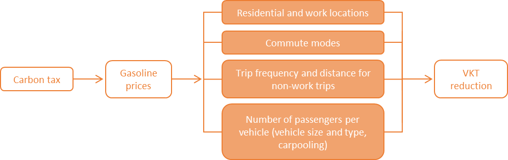
Note: Channels (in orange boxes) are shown to illustrate the economic theory; they are not modeled/estimated separately within CPAT.
The negative relationship between fuel prices and VKT is well established in the economics literature. The literature provides a large number of empirical estimates of the elasticity of VKT wrt fuel prices. Table 7.1 lists a selection of these estimates: most commonly, the estimates of VKT elasticity range from -0.05 to -0.50. A review paper found the mean estimate to be -0.10 in the short run and -0.29 in the long run (Goodwin et al. (2004)).
Some of these responses take time, so the long-run gasoline price elasticity of road deaths is likely to exceed the short-run elasticity. However, high fuel prices also push consumers to invest into more fuel-efficient vehicles, either buying cars that are more efficient or switching from cars to motorcycles (or other modes). In this case, the literature has extensively discussed the importance of the rebound effect, defined as efficiency induced consumption or, more plainly, the idea “buy a more fuel-efficient car, drive more” (Gillingham et al. (2016)). The rebound effect might cause long-run VKT elasticity to be lower than short-run VKT elasticity.
| Study | Country | Fuel price elasticity of road use | Note | |
|---|---|---|---|---|
| Short run | Long run | |||
| US | ||||
| Small and Van Dender (2007) | US | -0.05 | -0.22 | VKT elasticity. |
| Burger and Kaffine (2009) | US | -0.16 | VKT elasticity during peak congestion hours in Los Angeles. | |
| Bento et al. (2013) | US | -0.05 | Roads without carpool lanes in Los Angeles. Elasticity is for number of trips. | |
| Gillingham (2014) | US | -0.22 | Vehicle-level data for California. Effect allows >1 years of response, but is not long-run. VKT elasticity. | |
| Gillingham et al. (2015) | US | -0.10 | Vehicle-level data for Pennsylvania. VKT elasticity. | |
| Haughton and Sarkar (1996) | US | -.16 to -.07 | -.58 to -.21 | VKT elasticity at US state level. |
| Huang and Burris (2015) | US | -0.06 | Mean for a sample of toll roads. Elasticity is for number of trips. | |
| Other countries | ||||
| RAYMOND (2003) | Spain | -0.34 | -0.53 | Elasticity is for number of vehicle trips on toll roads. |
| Crôtte et al. (2009) | Mexico | -0.12 | VKT elasticity. | |
| Khoo et al. (2012) | Malaysia | -0.16 | Uses road sensor data for 2008. | |
| Frondel et al. (2012) | Germany | -0.458 | VKT elasticity. | |
| Delsaut (2014) | France | -0.14 | -0.28 | VKT elasticity. |
| Kwon and Lee (2014) | South Korea | -0.11 | Elasticity is for number of vehicle trips. | |
| Odeck and Johansen (2016) | Norway | -0.11 | -0.24 | VKT elasticity. |
Notes: Studies are chronologically ordered. Listed papers are a sample of prior studies. “Short run” and “long run” do not have the same definitions in all studies. Adapted from Burke et al. (2017) and Moshiri (2020).
7.2.2.2 Congestion
Congestion is the result of interaction between the limited vehicle capacity of a given facility and the demands for space by individual users. The costs of congestion occur in the form of excess travel time, increased expected damage and injury from accidents among vehicles, and additional vehicle operating costs for wear and fuel (Murphy and Delucchi (1997)).
The relationship of total VKT to congestion is straightforward (see Figure 7.2): the less vehicles on the road, the smaller the congestion problem (Sugiyama et al. (2008)). This theoretical relationship has been documented in the literature for decades (Johnson (1964)). When people share vehicles (carpooling) or substitute to public transport, the reduction in congestion may be achieved with constant total passenger-km (Bento et al. (2013)).
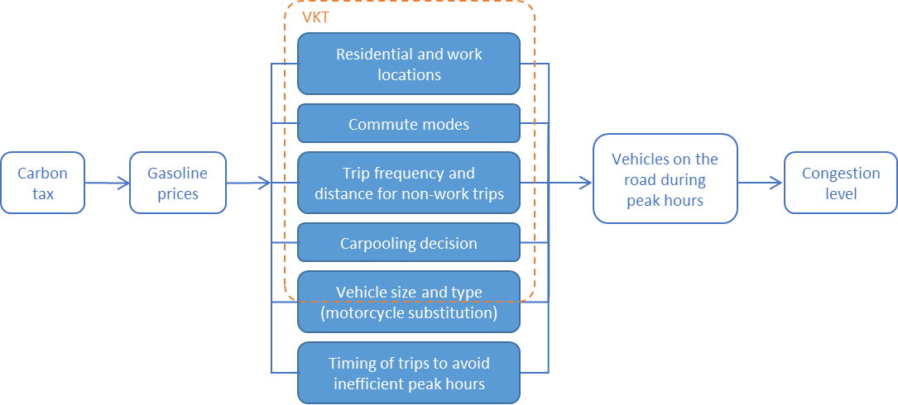
Notes: Channels (in blue boxes) are shown to illustrate the economic theory; they are not modeled/estimated separately within CPAT.
Empirically, congestion has been difficult to measure until very recently. Conventional measurement methods are costly, such as employing humans to count, establishing cameras or installing wires on the road. The resulting measurements only cover a limited number of precise locations and often only short periods of time. More recently, the development of mobile communication technology has allowed newer measures such as the congestion indicators of Waze, Google Maps, Inrix and TomTom. These GPS-based data cover larger areas over long periods of time and are highly disaggregated.
Given the limited/recent availability of congestion data, the empirical literature on the impact of fuel prices on congestion levels is relatively scarce. Burger and Kaffine (2009) find that a USD 1 increase in fuel prices reduces congestion and raises average freeway speeds by approximately 7% during rush-hour periods. They estimate short-run elasticity with a methodology similar to ours and find estimates ranging from -0.12 to -0.29. In an older study, Dahl (1979) finds an estimate of -0.35 for the elasticity of speed wrt fuel price. Cohen and Roth (2017) find that higher diesel prices lead to less but heavier trucks on the road, thereby reducing congestion.
Burke et al. (2017) examine the reaction to a fuel tax reform in Indonesia and find a fuel price elasticity of motor vehicle flows (number of vehicles on toll roads) between –0.1 and –0.2. They estimate that Indonesia’s fuel subsidy reforms of 2013 and 2014 have reduced traffic pressure by around 10%, relative to the counterfactual without reform.
The externality cost of congestion can be measured in monetary equivalent by multiplying time lost in traffic congestion by the value of travel time (Abrantes and Wardman (2011)).
7.2.2.3 Road accident fatalities
Road traffic injury is now the leading cause of death for children and young adults aged 5-29 years. It is the eighth leading cause of death for all age groups surpassing HIV/AIDS, tuberculosis and diarrheal diseases (World Health Organization (2018)).
Road accidents are a function of factors including road user behavior, road characteristics, vehicle characteristics, and the distances driven (vehicle-kilometers traveled, VKT) on roads by different types of drivers. Research has also shown that economic variables affect road accident risk exposure. Among these, fuel prices and key macroeconomic measures such as the unemployment rate have been the focus of prior studies rates (Ahangari et al. (2014); Gerdtham and Ruhm (2006); International Transport Forum (2015)). The negative effect of fuel prices on the risk of fatal accidents is well established in the literature.
For international comparisons, the literature considers data on fatalities more reliable than data on the number of accidents and number of injuries (Luoma and Sivak (2007); Sauerzapf et al. (2010); World Health Organization and others (2013)). This is why most studies concentrate on deadly crashes, when trying to assess the relationship of fuel prices and road accidents. Chi et al. (2010) is a notable exception to this rule.
The relationship from fuel prices (and thus taxes) to accidents is multifactorial (see Figure 7.3), as shown in Chi, Porter, et al. (2013). Several aspects may be summarized to a principal channel which is VKT. Reduced driving decreases the exposure of both vehicle occupants and others to road crashes.
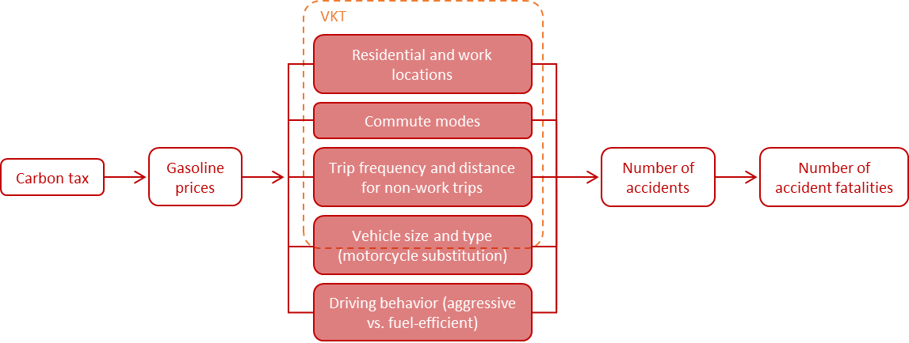
Note: Channels (in red boxes) are shown to illustrate the economic theory; they are not modeled/estimated separately within CPAT.
In addition to reducing VKT, higher gasoline prices might also lead to a reduction in road deaths per kilometer driven. One reason is that, to conserve fuel, drivers might reduce high-speed driving and so-called “aggressive driving” (high rates of acceleration and braking). Another reason is that high-risk drivers, including the young, the old, and those taking leisure-related trips, are particularly sensitive to gasoline prices (Morrisey and Grabowski (2011); Sivak (2009)). Higher gasoline prices also result in substitution from heavier to lighter, more fuel-efficient cars, which are associated with a lower overall number of road deaths per kilometer traveled (Gayer (2004); White (2004)). Substitution to bus travel may also reduce overall road safety risks.
However, through other channels higher gasoline prices might actually lead to more rather than fewer road deaths. Higher gasoline prices reduce congestion and thereby increase average speed (Burger and Kaffine (2009)), which increases the risk of fatal crashes. Fuel price-induced substitution to motorcycles, which are more fuel-efficient, may also cause additional road deaths (Hyatt et al. (2009); Wilson et al. (2009)). In particular, substitution to lighter cars and motorcycles would explain why long-run elasticities of accidents wrt fuel prices would be smaller in absolute magnitude than short-run elasticities.
Many studies in this field concentrate on the United States. Some authors argue that the effect of higher gasoline prices on road deaths operates via a reduction in VKT (Grabowski and Morrisey (2004)), whereas others report also a reduction in road deaths per VKT (Chi et al. (2010); Chi, Quddus, et al. (2013); Grabowski and Morrisey (2006); Haughton and Sarkar (1996); Montour (2011); Sivak (2009)). Sivak (2009) explains this reduction by the disproportionate reduction in leisure driving (riskier than commuter driving) and rural driving (more risky than urban driving).
Leigh and Wilkinson (1991) examine the relationship between gas price, gas tax, and road fatalities for all 50 states using a multiple regression framework. They find that a 1% increase in gas tax leads to a 0.18% to 0.20% reduction in road fatalities, but that gas prices are not statistically significant in explaining road fatalities. They use a different method, using cent-per-gallon rather than a log-log specification as does this study. A later study by Grabowski and Morrisey (2004), using 1983 to 2000 state-level data and a panel model to investigate the relationship between gas prices and road fatalities, finds that a 1% increase in gasoline prices reduces road fatalities by 0.23%. Looking only at Mississippi, Chi et al. (2010) finds a short-run elasticity of -0.25 and a long-run elasticity of -0.47. For Minnesota, Chi, Quddus, et al. (2013) find an elasticity of -0.219 for fatal crashes wrt to fuel prices and their estimates are higher in rural areas than in urban areas.
In an international study, Burke and Nishitateno (2015) find a 1% increase in the gasoline pump price would reduce road fatalities by 0.3% to 0.6%. Around 35,000 road deaths per year could be avoided by the removal of global fuel subsidies. Litman (2012) presents a scatterplot for 16 Organization for Economic Co-operation and Development (OECD) countries that shows a negative association between average gasoline prices and traffic fatality rates. Using a panel model of 16 industrialized countries, Ahangari et al. (2014) find an elasticity of -0.22 after controlling for VKT.
Other country-specific short-term elasticity estimates include -0.2 to -0.3 for New Zealand (Best and Burke (2019)) and -0.2 for Australia (Burke and Teame (2018)).
In a dynamic urban model, Avner et al. (2014) examine the impact of carbon taxes on urban mobility and underline the lock-in effect from public transport investments: while the quality of urban transport infrastructure is difficult to capture quantitatively, we include data on satisfaction with public transport in our elasticity estimation to account for this effect.
7.2.2.4 Road damage
Road damage depends strongly on road usage (Jacobson and Wågberg (2005)), but not all vehicles affect road damage equally: wear and tear on the pavement is a rapidly rising function of a vehicle’s axle weight (Jacobson and Wågberg (2005); Murphy and Delucchi (1997); Parker and Hussain Ph D (2006); FHWA (2000)). Estimations suggest that the pavement wear and tear of one average five-axle truck equates to approximately 4,000 cars (Freight & Infrastructure (2014)). Therefore, nearly all of the vehicle-caused road damage is attributable to heavy-duty vehicles (trucks).
In most countries around the world,1 light-duty vehicles (cars) use gasoline and trucks use diesel. Road damage is thus more dependent on diesel price than on gasoline price.
The externality cost of road transport from pavement wear and tear has been discussed extensively in the economics literature, going back as far as Adam Smith (Lindsey (2006)). There is a consensus that diesel is strongly under-taxed, when comparing tax level to externality cost (Parry (2008); Santos (2017)).
Many authors have suggested addressing it directly through different forms of road pricing explicitly indexed on road damage cost (e.g. Newbery (1988); Parker and Hussain Ph D (2006); Santos et al. (2010)). From an economist’s point of view, addressing the externality explicitly, with taxes mirroring the externality cost directly, is the first best solution. However, as a carbon tax also increases diesel prices, it decreases truck VKT and thereby reduces road damage (Barla et al. (2014); ; Wadud (2016)). In general, a carbon tax reduces all road transport externalities that depend on VKT (Ekins (1996)).
The strength of this co-benefit depends on the elasticity of truck VKT with respect to fuel prices/taxes. There is large evidence that trucks reduce their VKT when fuel prices rise. Let us cite just a few recent studies finding significantly elastic VKT for trucks: Barla et al. (2014) find short and long-run price elasticities of -0.43 and -0.80 respectively; He (2015) estimates a VKT elasticity of -0.54; Ramli and Graham (2014) estimate short-run price elasticity between -0.11 and -0.16, long-run elasticity between -0.21 and -0.30 for trucks; Leard et al. (2015) find estimates around -0.20.
Some studies find that the elasticity depends on the type of trucks: Wadud (2016) finds that rigid trucks show statistically significant price elasticity, but articulated trucks do not respond to changes in fuel prices.
On the opposite, some authors find that trucks are relatively inelastic with regards to fuel prices (Winebrake et al. (2015)). One study finds that higher diesel prices are associated with fewer but heavier trucks, and therefore more road damage (Cohen and Roth (2017)).
In practice, two cost components to road damage may arise: the cost of repairing the pavement damage, and the additional cost to users, which result from traveling on damaged roadways. Given the difficulty to measure the second component, we concentrate on the first component in CPAT.
Methodologically, it is important to note that some countries earmark revenues from fuel taxes or road charges for road maintenance (Gultom et al. (2017)). In these countries, our estimation technique is not valid because of endogeneity, so that we exclude them.
Quantitatively, road damage may be considered the smallest of the three transport externalities considered here.
7.2.2.5 Within-country heterogeneity (by socio-demographic characteristics)
Regarding the within-country heterogeneity of the effect of fuel price on VKT, the literature has not reached a consensus. Within countries, Bastian and Borjesson (2014) find that urban populations, in particular those with low incomes, respond stronger to fuel price increases and economic downturn, i.e. are reducing car travel more. Similarly, many studies find that (absolute) elasticity diminishes with higher income levels (Santos and Catchesides (2005); Small and Van Dender (2007); West (2017)). On the opposite, Wang and Chen (2014) find that higher income households show greater fuel price elasticity than lower income households.
Regarding the effect of fuel prices on accident fatalities, the literature suggest that the poor are more often victims of road accidents because of the vehicles they travel in. There is evidence that larger vehicles (in particular light trucks and SUVs) cause more fatalities than light passenger vehicles, while drivers of SUVs are relatively more protected: (White (2004)) calls this disequilibrium “the ‘Arms race’ on American roads”. The highest risk is borne by motorcyclists who tend to have lower incomes than four-wheeled vehicle drivers (Hyatt et al. (2009)). A particular group at high risk for road death are young drivers (aged 15–24) and their passengers. As these drivers are more sensitive to fuel prices, the young drivers accident rate responds particularly strongly to fuel price increases (Morrisey and Grabowski (2011)). One of the few studies looking at gender and race, Chi et al. (2010) find that fuel prices affect accident rates similarly for men and women, as well as for white and black population.
7.2.2.6 Between-country heterogeneity
Regarding the between-country heterogeneity of the effect of fuel prices on VKT, most estimates concentrate on developed countries, in particular the USA. Studies on developing countries often face data challenges, but so far the literature suggests that the elasticities lay within the same order of magnitude in developed and developing countries (Gillingham et al. (2016)).
Regarding the effect of fuel prices on accident fatalities, some studies look at differences between high- and low-income countries, but the literature on within-country determinants of road fatalities and their elasticity wrt to fuel prices is scarce. Data is notoriously more scarce in developing countries. Country-level panel data identification strategies such as used in Burke and Nishitateno (2015) typically yield one elasticity for all countries. A priori, the effect is unclear: wealthier individuals travel larger distances and thus have a higher risk of traffic accidents, but poorer individuals travel more on foot and on motorcycles, which increases their risk to die from a road accident.
7.2.2.7 Fuel prices vs. taxes
Most of the above mentioned literature examines the effect of fuel prices on the various outcomes discussed. However, for CPAT we are interested in the effect of a carbon tax.
Regarding the effect on VKT, Li et al. (2014) show that gasoline consumption responds more strongly to gasoline taxes than to gasoline prices. They explain that consumers may respond more to taxes than equal-sized changes in tax-inclusive gasoline prices because of perceived persistence and salience. Variation in gasoline taxes also is covered much more intensively in the media.
Regarding road fatalities, Leigh and Wilkinson (1991) show that gasoline taxes have a significant effect on fatalities while the effect of price effect from oil market fluctuations is not significant. However, these findings are on a cents-per-liter basis rather than a percent basis, so they are not directly comparable to our results.
7.2.2.8 Methodology
Literature generally finds that the short-term elasticity of fuel use is weaker than the long-term elasticity wrt fuel prices (Chi et al. (2010)). Usually, researchers explain this finding by structural adjustments to the vehicle fleet, travel demand (work and residence locations) and infrastructure. Hence, there has been some methodological effort to estimate short-run and long-run elasticities separately.
The methodology for elasticity estimation in the transport co-benefits module is similar to Burke and Nishitateno (2015). Using country-year-level data, the main estimations are fixed effects and between estimators of a linear log-log equation. The between estimator uses average data for each country and provides estimates of long-run effects (Baltagi and Baltagi (2008); Baltagi and Griffin (1984); Pesaran and Smith (1995); Pirotte (1999); Stern (2010)). Fixed-effects estimations control for time-invariant factors such as the extent of mountainous terrain, but when a static fixed-effects equation is estimated the coefficients represent short-run effects. This method has been widely used in the literature looking at the effect of fuel prices on road safety (Best and Burke (2019); Burke and Nishitateno (2015); Grabowski and Morrisey (2006); Montour, 2011). An alternative way of estimating long-run elasticities is the distributed lag specification (Burke and Nishitateno (2015); Chi, Porter, et al. (2013); Montour (2011)).
Other studies, e.g. Chi, Quddus, et al. (2013), use more time-series related methods, in particular testing for unit roots and accounting for stationarity. These methods are difficult to implement with unbalanced panels, as in our case. However, in his standard econometrics textbook (Baltagi and Baltagi (2008); Baltagi and Griffin (1984)) considers that time-series methods should apply when T (the number of periods) is large and N (the number of countries) is small, whereas panel data methods like the between estimator are appropriate when T small and N large: “Using panel data, one can avoid the problem of spurious regression\(…\) Unlike the single time series spurious regression literature, the panel data spurious regression estimates give a consistent estimate of the true value of the parameter as both N and T tend to \(\infty\). This is because, the panel estimator averages across individuals and the information in the independent cross-section data in the panel leads to a stronger overall signal than the pure time series case.”
7.2.3 Data sources
7.2.3.1 General
We use a panel dataset of country-year-level data, including as many countries and years as available, resulting in an unbalanced panel. The dataset covers the time from 1994 to 2021 and 186 countries around the world.
The main data source are the World Road Statistics (WRS), regularly published by the International Road Foundation (International Road Federation (2018)). We use data from its editions 2001 to 2021, covering the years 1995 to 2019.
Aside many of our covariates, WRS also contains two of our outcomes of interest: we use total distance driven in vehicle-kilometers traveled (VKT) and road damage, as measured by infrastructure maintenance investment.
General demographic and macroeconomic variables are provided by the World Bank’s World Development Indicators (WDI) database.2 The World Bank’s World Governance Indicators (WGI) database3 gives indicator measures of corruption and rule of law.
The online database for Sustainable Development Report (SDR) 20194 (Sachs et al. (2019)) gives an indicator of the quality of public transport.
Weather information at the country-year level is provided by the Climatic Research Unit (CRU) of the University of East Anglia, downloadable via the World Bank’s Climate Change Knowledge Portal (CCKP).5 We use the precipitation (in mm), the minimum temperature (in °C), the number of hot days (Tmax>40°C), and the number of ice days (Tmax<0°C).
All monetary variables are deflated to 2018 USD using the World Bank’s US GDP deflator and adjusted for purchasing power parity (WDI).
An exhaustive list of variables with their sources can be found in Section 7.2.9.1.
7.2.3.2 Congestion
Traffic congestion is measured using the TomTom Traffic Index. This index covers over 400 cities across 61 countries. The TomTom Traffic index statistics are calculated from anonymized GPS data collected via navigation devices, in-dashboard systems and smartphones.
The congestion level percentages represent the measured amount of extra travel time experienced by drivers across the entire year. As a first step, TomTom establishes a baseline of travel times during uncongested, free flow conditions across each road segment in each city. They then analyze travel times across the entire year for each city. The TomTom Traffic Index then represents the difference between observed travel times and free flow travel time.
For example, an overall congestion level of 36% means that the extra travel time is 36% more than an average trip would take during uncongested conditions. Average times are of actual taken trips, across every vehicle in the entire network, 24/7. Travel times in free-flow (uncongested) conditions are not based on legal speed limits but on actual trips made.
The TomTom Traffic Index is available both overall, as well as for specific weekdays and peak times, including morning and evening peak hours.
7.2.3.3 Road safety
The United Nations Economic Commission for Europe (UNECE)6 and the Organization for Economic Co-operation and Development (OECD)7 provide statistical databases, used to complete missing data points in the WRS, in particular for accident fatalities.
The World Health Organization (WHO) publishes reports on Road Safety. We use the 2013 edition with data on 2011 (World Health Organization and others (2013)) and the 2018 edition with data on 2017 (World Health Organization (2018)), which include detailed covariates on the legal framework of traffic, such as seat belt wearing rate, blood alcohol concentration limit, helmet enforcement and others.8
For Côte d’Ivoire and Mexico, country-specific projects made more detailed accident data available, which are included in the general CPAT analysis. Missing data for Côte d’Ivoire in WRS are completed using the national accident statistics provided by the Ivorian Ministry of Transport. Unrealistically low accident numbers for Mexico in WRS are replaced by data from the Mexican National Institute of Statistics and Geography (INEGI) and the Mexican Transport Institute (IMT).
7.2.3.4 Fuel prices
Fuel prices are taken from the fuel price database of the overall CPAT project. For road fuels, the sources used are the IMF’s Fiscal Affairs Department (FAD), Enerdata’s Global Energy and CO2 Data, IEA’s Data and statistics and GIZ’s Sustainable Urban Transport Project.
In combining these different data sources, the following order of steps is applied:
If Enerdata, IEA and IMF data is available, we establish a weighted average of price data in Enerdata (60%), IEA (10%) and IMF (30%);
if IMF or IEA are missing, we use Enerdata;
If Enerdata is missing, we use the information in the IMF database;
If IMF is missing, we use the information in the IEA database;
If IEA is missing, we use the information in the GIZ database.
Aside the final retail price at the pump, we use data on taxes summarizing VAT, existing carbon taxes, excise tax and others. We use the same algorithm as described above for prices to construct time series of fuel taxes. Supply cost is defined as the difference of price at the pump minus taxes.
7.2.3.5 Externality costs
The benefits of prevented mortalities can be expressed in terms of a “Value of a Statistical Life” (VSL), which represents the value a given population places ex ante on avoiding the death of an unidentified individual. VSL is based on the sum of money each individual is prepared to pay for a given reduction in the risk of premature death, for example from diseases linked to air pollution OECD (2012).
The country-specific VSL in CPAT is adapted from OECD (2012), adjusted for GDP growth and inflation (within the Air Pollution Module).
We compute the average speed from TomTom’s total VKT and total travel time. We then compute the VKT per capita from WRS’ national VKT divided by the population size from the WB’s World Development Indicators (WDI). This average VKT per capita is multiplied by the size of urban population over 15 year of age (WDI) and divided by the average speed, yielding total urban travel time.
The total urban travel time is then multiplied by 80% of the average hourly after-tax wages (from Air Pollution Module), yielding the value of travel time.
7.2.3.6 Data cleaning
Several variables result of the combination of several data sources. For example, we combine information on accident fatalities from WRS, OECD and UNECE. In these cases, we define a clear order and only “fill up” missing variables with the second and third source.
After establishing this mix of data sources, a visual control of country-specific time series is performed to identify outliers. For each visually identified outlier, we perform thorough background checks and in case of doubt only keep one source (resulting in some limited data loss).
Stock variables such as length of road network, country area or size of population are interpolated linearly when missing between years with non-missing data for that country. However, we do not extrapolate beyond the last/first year with non-missing data. The variable table in Section 7.2.9.1 indicates for which variables such interpolation is performed.
7.2.4 Methods for elasticity estimation
This section explains the general methodology for estimating short- and long-run elasticities and making them country-specific in a data-parsimonious way. This methodology is then applied to VKT and the three outcomes of interest: congestion, road damage and fatalities from road accidents.
7.2.4.1 Estimation equation
We regress the logarithm of the outcome variable onto a constant, the logarithm of fuel prices, a list of covariates and fixed effects. The general form of the estimated regression estimation is
\[\ln\left( Y_{\text{ct}} \right) = \alpha + \beta\ln\left( p_{\text{ct}} \right) + \gamma\ X_{\text{ct}} + \mu_{t} + \mu_{c} + \epsilon_{\text{ct}} \tag{7.45}\]
Where \(\ln\left( Y_{\text{ct}} \right)\) is the natural logarithm of the outcome in country \(c\) in year \(t\), \(\ln{(p_{\text{ct}})}\) is the natural logarithm of pump price for gasoline, \(X_{\text{ct}}\) is a vector of covariates including income per capita and population density, and \(\mu_{c}\) and \(\mu_{t}\) are country- and year-specific effects.
An elasticity measures how much an outcome changes relatively to its initial value (e.g. in percent) when another variable, here the pump price of gasoline, changes (in percent). As we are using the log-log specification, the coefficient estimate \(\widehat{\beta}\) in Equation 7.45 is an estimate of the elasticity of the outcome \(Y_{\text{ct}}\) with respect to (wrt) fuel prices \(p_{\text{ct}}\).
7.2.4.2 Short-run and long-run estimators
Following Burke and Nishitateno (2015), we consider that the within estimator from a static fixed-effects equation represents shorter-run effects, and the between estimator provides estimates of long-run effects (Baltagi and Baltagi (2008); Baltagi and Griffin (1984); Pesaran and Smith (1995); Pirotte (1999); Stern (2010)).9
For simplicity, let us reduce the notation of the previous equation (Equation 7.45) to:
\[y_{\text{ct}} = \alpha + \beta x_{\text{ct}} + \mu_{c} + \epsilon_{\text{ct}} \tag{7.46}\]
Where the logarithms have been omitted and all righthand-side variables summarized under the vector \(x_{\text{ct}}\).
The interpretation for the long and short run is based on the idea that the previous Equation 7.46 may alternatively be formulated:
\[y_{\text{ct}} = \alpha + \beta'{\overline{x}}_{c} + \beta''(x_{\text{ct}} - {\overline{x}}_{c}) + \mu_{c} + \epsilon_{\text{ct}} \tag{7.47}\]
Where \({\overline{x}}_{c}\) is the average of \(x_{\text{ct}}\) over time: \({\overline{x}}_{c} = \sum_{t}^{}{x_{\text{ct}}/T_{c}}\), where \(T_{c}\) is the number of years included for country \(c\) in the regression.
In the model described by Equation 7.47, we postulate that changes in the average value of \(x_{\text{ct}}\) for an individual country may have a different effect from temporary departures from the average. The model allows a different response to permanent rather than transitory changes. If \(\beta' = \beta''\), then the model in Equation 7.47 collapses into the previous model in Equation 7.46.
Whatever the properties of \(\mu_{c}\) and \(\epsilon_{\text{ct}}\), if Equation 7.46 is true, we can take the averages and find that:
\[{\overline{y}}_{c} = \alpha + \beta'{\overline{x}}_{c} + \mu_{c} + {\overline{\epsilon}}_{c} \tag{7.48}\]
where \({\overline{y}}_{c}\) is the average of \(y_{\text{ct}}\) over time: \({\overline{y}}_{c} = \sum_{t}^{}{y_{\text{ct}}/T_{c}}\) and \({\overline{\epsilon}}_{c}\) is the average of the error term: \({\overline{\epsilon}}_{c} = \sum_{t}^{}{\epsilon_{\text{ct}}/T_{c}}\).
Subtracting Equation 7.48 from Equation 7.47, it must also be true that:
\[{y_{\text{ct}} - \overline{y}}_{c} = \beta''{(x_{\text{ct}} - \overline{x}}_{c}) + (\epsilon_{\text{ct}} - {\overline{\epsilon}}_{c}) \tag{7.49}\]
These equations are known from panel econometrics textbooks: Equation 7.48 describes the between estimator and Equation 7.49 describes the within estimator, also known as fixed-effects estimator.
Fixed-effects estimations control for time-invariant characteristics of countries such as the extent of size or mountainous terrain. As illustrated in Equation 7.49, the identifying variation comes from within-country deviations from the country-mean. Given standard assumptions on the error term \(\epsilon_{\text{ct}}\) (mean\(\ 0\), uncorrelated with itself, uncorrelated with \(x_{\text{ct}}\), uncorrelated with \(\mu_{c}\), and homoscedastic), the within estimator can be estimated as an OLS on Equation 7.49 or, equivalently, an OLS on Equation 7.45 including country dummy variables. For this study, this equation is estimated using the Stata command xtreg, fe.
The between estimator is given by the OLS estimator on Equation 7.48. This specification cancels out time-differences. The between estimates are based on cross-sectional country differences. Individual-invariant regressors such as time dummies cannot be identified. For this project, this equation is estimated using the Stata command xtreg, be.10
7.2.4.3 Covariates
The choice of the variables used as covariates \(X_{\text{ct}}\) follows the list of variables used in World Health Organization (2018). A detailed list can be found in Section 7.2.9.1.
7.2.4.4 Country-specific elasticity estimates
The effect of fuel prices on our three outcomes of interest is likely to be heterogeneous across different countries. However, there is limited data available for most countries, so that unparametrically country-specific estimations proved not feasible. We discard to option to create ad hoc regional groups and estimate group-specific elasticities, as we want a more data-driven methodology. To strike a balance between accounting for heterogeneity and using available data parsimoniously, we estimate elasticities that are linear expressions of several covariates.
The estimation includes interaction terms between fuel prices and the additional variables. For example, if elasticity depends on two more variables, the estimation equation is:
\[\ln\left( Y_{\text{ct}} \right) = \alpha + \beta_{0}\ln{(p_{\text{ct}})} + \beta_{1}v_{\text{ct}}^{1}\ln{(p_{\text{ct}})} + \beta_{2}v_{\text{ct}}^{2}\ln{(p_{\text{ct}})} + \gamma\ X_{\text{ct}} + \mu_{c} + \ \mu_{t} + \epsilon_{\text{ct}} \tag{7.50}\]
where the variables are the same as before, and\(\ v_{\text{ct}}^{1}\) is the first additional variable influencing elasticity and \(v_{\text{ct}}^{2}\) is the second additional variable influencing elasticity. The “country-specific” elasticity estimated is then:
\[{\widehat{\beta}}_{c} = {\widehat{\beta}}_{0} + {\widehat{\beta}}_{1}\overline{v_{c}^{1}} + {\widehat{\beta}}_{2}\overline{v_{c}^{2}} \tag{7.51}\]
where \(\overline{v_{c}^{1}}\) is the average across recent years11 of variable \(v_{\text{ct}}^{1}\) for country \(c\) (and analogously for variable \(\overline{v_{c}^{2}}\)). In practice, we include not two but five additional variables \(v_{\text{ct}}^{k}\), which we omit here for readability.
We consider 15 candidate variables linked to traffic conditions, demographics and availability of substitutes to private vehicles. The final estimations include only the variables found to be empirically most important.
The selection of covariates \(v_{\text{ct}}^{k}\) included in the expressions of elasticities is data-driven using a lasso regression as implemented in Stata command lasso2 (Ahrens et al. (2020)). The lasso procedure penalizes additional variables/parameters and thereby encourages simple, sparse models, i.e. models with fewer parameters. The algorithm sequentially includes one variable after the other, in an optimized order. The order in which predictors are entered into the model can be interpreted as an indication of the relative predictive power of each predictor.
7.2.4.5 Fuel prices or taxes
We are interested in the effect of carbon taxes on accidents. The most classical way of estimating tax impact consists in estimating price elasticity from exogenous price variation. However, some of the literature states that consumers might not react identically to price changes and to tax changes (salience, anticipation of persistence over time).
Therefore, we estimate two sets of elasticities: elasticities wrt fuel prices and wrt fuel taxes. The estimation for elasticity wrt to prices follows the equations above. The estimations for elasticity wrt to taxes include the natural logarithms of both tax-exclusive prices and taxes as two separate variables. The elasticity of interest is then the estimated coefficient of the tax variable. Fuel tax data is only available for a limited amount of countries.
7.2.5 Elasticity results
For readability, this note includes shortened results tables. For the full results, please refer to the Tran_Elas sheet of CPAT.
7.2.5.1 Congestion
Figure 7.4 shows descriptive evidence of the relationship between urban congestion and gasoline prices: across countries, there is a significant negative correlation in 2018.12 Congestion is measured with the TomTom Traffic Index, indicating the additional time spent in congested traffic as compared to free-flowing traffic (in percent, see Section 7.2.3.2 for more details).
This simple descriptive evidence omits many variables. In particular, the elasticity of demand of private vehicle trips depends on the availability of (and practicability) alternative means of transport. Moreover the resulting congestion depends on whether these alternative means of transport will also be on the road (e.g. buses) or elsewhere (e.g. trains).
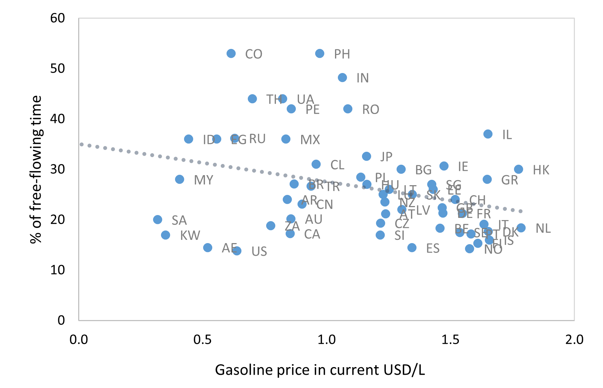
Source: Tomtom, Enerdata, EIU, IEA, own computations.
7.2.5.1.1 Short-run elasticity
This section shows the results for the short-run estimations of congestion on fuel prices and a list of covariates. The most relevant specification \(i\) the within estimator of Equation 7.45, as specified in Equation 7.49.
For simplicity, we only show the regression results for overall congestion, whereas CPAT also contains estimates for weekday congestion and weekday peak time congestion. The results on these three indicators are similar, but the effect on peak congestion is typically slightly stronger.
| Urban congestion | (1) | (2) | (4) | (3) | (5) | (6) |
|---|---|---|---|---|---|---|
| pooled OLS | within estimator | |||||
| Ln of gasoline pump price (2018 PPP-adj USD cents/liter) | 0.0189 | -0.0776* | -0.335** | -0.149*** | -0.288*** | -0.503*** |
| (0.584) | (0.0799) | (0.0382) | (0.000620) | (6.12e-10) | (0.00171) | |
| Interaction ln(gasoline) w/ Ln of number of vehicles per capita | 0.312** | 0.294** | ||||
| (0.0153) | (0.0454) | |||||
| Interaction ln(gasoline) w/ Precipitation (in mm) | 0.207*** | 0.103** | ||||
| (2.05e-05) | (0.0107) | |||||
| Interaction ln(gasoline) w/ Satisfaction with public transport (%) | -0.0106 | -0.0322*** | ||||
| (0.667) | (0.00398) | |||||
| Interaction ln(gasoline) w/ Share of paved roads (in %) | -0.0477* | -0.116 | ||||
| (0.0555) | (0.239) | |||||
| Interaction ln(gasoline) w/ Ln of population | 0.171*** | 0.0536 | ||||
| (0.00205) | (0.439) | |||||
| Covariates | No | Yes | Yes | No | Yes | Yes |
| Fixed effects | No | No | No | Yes | Yes | Yes |
| Interaction terms | No | No | Yes | No | No | Yes |
| Observations | 583 | 467 | 467 | 583 | 467 | 467 |
| R-squared | 0.287 | 0.495 | 0.550 | 0.214 | 0.384 | 0.415 |
| Number of countries | 61 | 52 | 52 | |||
Robust p-values in parentheses, *** p<0.01, ** p<0.05, * p<0.1. Ln(gasoline) is the natural logarithm of the gasoline pump price (2018 PPP_adjusted USD cents/liter). The parameter marked in green is the default short-run elasticity in CPAT for countries that have not sufficient data for country-specific elasticity estimation. Sample averages are subtracted from the interaction variables prior to interacting with the fuel price.
Table 7.2 shows results of the pooled OLS (column 1-3) and within estimator (column 4-6). For each estimator, we compute the coefficient first without and then with covariates included. All of the estimates lie within a similar order of magnitude: the short-run elasticity of congestion wrt fuel price is estimated between -0.08 and -0.29. This is very close to the estimates ranging from -0.12 to -0.29 in Burger and Kaffine (2009) and more inelastic than the estimate of -0.35 in Dahl (1979).
The columns 4 and 6 show the results of including additional interaction terms between the fuel price and selected variables. The coefficient of the fuel price is not directly interpretable in this specification. In order to obtain country-specific elasticity estimates, one needs to multiply the coefficients with the country-specific values of the covariates. The results are given below in Section 7.2.5.1.3.
7.2.5.1.2 Long-run elasticity
Computing the between estimator of Equation 7.45, given by Equation 7.48, we obtain the long-run elasticity.
| Urban congestion | (1) | (2) | (4) |
|---|---|---|---|
| between estimator | |||
| Ln of gasoline pump price (2018 PPP-adj USD cents/liter) | -0.125*** | -0.364*** | -0.707 |
| (0.00436) | (2.07e-08) | (0.214) | |
| Interaction ln(gasoline) w/ Maximum speed on urban roads (in km/h) | 0.260 | ||
| (0.129) | |||
| Interaction ln(gasoline) w/ Precipitation (in mm) | 0.0821 | ||
| (0.421) | |||
| Interaction ln(gasoline) w/ Seat-belt wearing rate (%) | -0.105 | ||
| (0.326) | |||
| Interaction lnsuper w/ Infant mortality rate (per 1,000 live births) | -0.906** | ||
| (0.0394) | |||
| Interaction ln(gasoline) w/ Ln of population | -0.0210 | ||
| (0.934) | |||
| Covariates | No | Yes | Yes |
| Interaction terms | No | No | Yes |
| Observations | 583 | 467 | 467 |
| R-squared | 0.786 | ||
| Number of countries | 61 | 52 | 52 |
Robust p-values in parentheses, *** p<0.01, ** p<0.05, * p<0.1. Ln(gasoline) is the natural logarithm of the gasoline pump price (2018 PPP_adjusted USD cents/liter). The parameter marked in green is the default long-run elasticity in CPAT for countries that have not sufficient data for country-specific elasticity estimation. Sample averages are subtracted from the interaction variables prior to interacting with the fuel price.
Again, the first two columns of Table 7.3 show the estimates first without and then with covariates included into the regression. The third column shows the results of including the interaction of fuel price with the empirically relevant covariates, which are not directly interpretable and will be discussed in the next subsection.
7.2.5.1.3 Country-specific elasticities
Table 7.2 and Table 7.3 show the results of regressing congestion on fuel prices and covariates, estimating the short-run (within estimator) and long-run (between estimator) elasticities. The parameters of the last column of each table give the results of including interaction terms with relevant covariates, as described by Equation 7.50. The most relevant interaction terms are chosen using lasso regressions (see Section 7.2.2.8 for methodology).
While using fuel price data for estimating elasticity is standard in the literature, some authors have suggested that consumers react more strongly to changes in fuel taxes than to (equivalent) changes in fuel prices. This hypothesis typically relies on additional salience of taxes, which are often strongly featured in the media, and on expectations about the persistence of the price change into the future.
Therefore, we repeat the same estimations of Table 7.2 and Table 7.3 using fuel supply cost and fuel taxes as two separate variables, rather than overall fuel price at the pump. Detailed results are omitted here, but can be found in the MS Excel file appendix to this report.
As a result, we have four elasticity estimates for each country: short-run and long-run, each wrt prices and wrt taxes.
Table 7.4 shows the lists of variables which are selected by the lasso regression algorithm as the five most relevant covariates for fuel price elasticity of congestion. The elasticities depend on characteristics of the vehicle fleet (number of vehicles per capita, share of motorcycles), on characteristics of the road network (density, speed limits), characteristics of transport substitutes (satisfaction with public transport) and on more general features of society (population size, rule of law indicator, urbanization, share of young people, and others).
| Short run | Long run | ||
|---|---|---|---|
| wrt price | wrt tax | wrt price | wrt tax |
| Ln of number of vehicles per capita | Number of vehicles per capita | Maximum speed on urban roads (in km/h) | Maximum speed on urban roads (in km/h) |
| Satisfaction with public transport (%) | Satisfaction with public transport (%) | Ln of population | Ln of population |
| Share of paved roads (in %) | Share of urban population (in %) | Infant mortality rate (per 1,000 live births) | Infant mortality rate (per 1,000 live births) |
| Ln of population | Seat-belt wearing rate (%) | Seat-belt wearing rate (%) | Satisfaction with public transport (%) |
| Precipitation (in mm) | Maximum speed on urban roads (in km/h) | Precipitation (in mm) | Road density (in km per km2) |
Notes: The covariates used for estimating the country-specific elasticities are chosen by a data-driven machine learning algorithm among a list of 30 candidate variables.
Given the large number of countries and variants, the elasticities are not reproduced here. The detailed numbers can be found in CPAT or in the MS Excel appendix to this report.
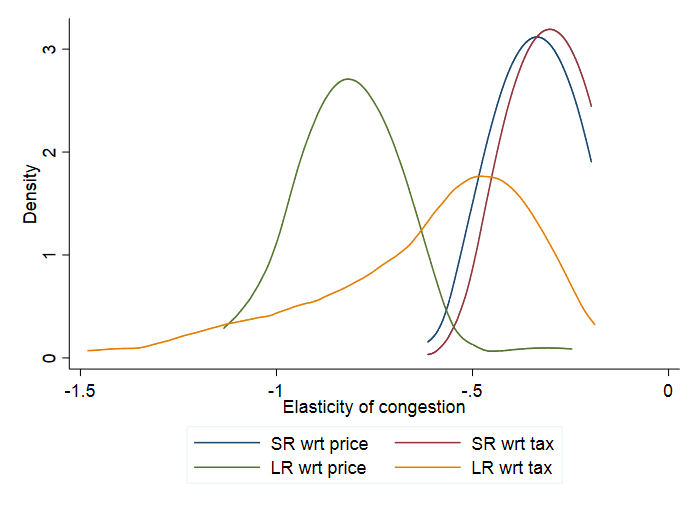
Figure 7.5 shows the kernel densities13 of the congestion elasticity estimates in the short and the long-run, wrt fuel price and wrt fuel tax. One can see that congestion is more elastic to fuel prices in the long run than in the short run. This is a classical result, as consumers have the possibility to adjust more in the long run than in the short run.
Table 7.5 summarizes the key characteristics of the distributions shown in Figure 7.5: mean, median, 5th and 95th percentiles of the distribution.
| Urban congestion | Short-run | Long-run | ||
|---|---|---|---|---|
| wrt price | wrt tax | wrt price | wrt tax | |
| Default elasticity | -0.288 | -0.118 | -0.364 | -0.119 |
| Mean | -0.339 | -0.305 | -0.807 | -0.612 |
| Median | -0.340 | -0.296 | -0.798 | -0.531 |
| 5th percentile | -0.433 | -0.381 | -1.001 | -1.127 |
| 95th percentile | -0.242 | -0.229 | -0.667 | -0.294 |
| Number of estimates | 158 | 151 | 174 | 154 |
7.2.5.2 Fatalities from road accidents
For illustration, Figure 7.6 shows descriptive evidence of the negative correlation between fuel prices and road accident fatalities. The higher the gasoline price the lower the accident fatality rate per 100,000 inhabitants.
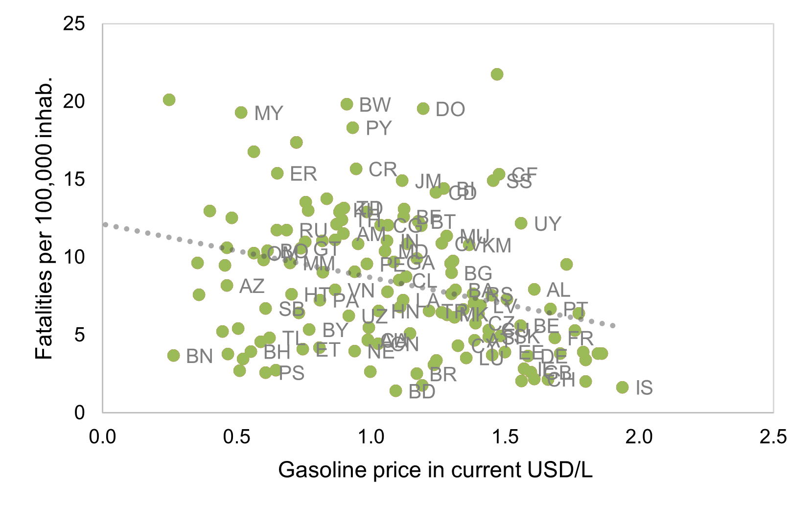
Source: WRS, Enerdata, EIU, IEA, own computations.
7.2.5.2.1 Short-run elasticity
This section shows the results for the short-run estimations of road accident fatalities on fuel prices and a list of covariates, following the general form of Equation 7.45.
| Accident fatalities | (1) | (2) | (4) | (3) | (5) | (6) |
|---|---|---|---|---|---|---|
| pooled OLS | within estimator | |||||
| Ln of gasoline pump price (2018 PPP-adj USD cents/liter) | -0.113*** | -0.112*** | -0.211*** | -0.143*** | -0.168*** | -0.366*** |
| (1.41e-07) | (0.00123) | (5.58e-06) | (0) | (1.86e-07) | (0) | |
| Interaction ln(gasoline) w/ Road density (in km per km2) | 0.324** | -0.533*** | ||||
| (0.0333) | (0.000228) | |||||
| Interaction ln(gasoline) w/ Population share of 15 to 24 years-old (in %) | -0.174*** | 0.131*** | ||||
| (2.78e-07) | (2.13e-05) | |||||
| Interaction ln(gasoline) w/ Seat-belt wearing rate (%) | -0.0766*** | 0.0122 | ||||
| (2.12e-09) | (0.241) | |||||
| Interaction ln(gasoline) w/ Satisfaction with public transport (%) | -0.0766*** | -0.0111 | ||||
| (1.06e-10) | (0.138) | |||||
| Interaction ln(gasoline) w/ Number of vehicles per capita | -0.241*** | -0.127*** | ||||
| (1.14e-08) | (0.00171) | |||||
| Covariates | No | Yes | Yes | No | Yes | Yes |
| Fixed effects | No | No | No | Yes | Yes | Yes |
| Interaction terms | No | No | Yes | No | No | Yes |
| Observations | 3,240 | 2,035 | 1,874 | 1,953 | 3,240 | 2,035 |
| R-squared | 0.869 | 0.905 | 0.930 | 0.907 | 0.202 | 0.287 |
| Number of country FE | 170 | 138 | 121 | |||
Robust p-values in parentheses, *** p<0.01, ** p<0.05, * p<0.1. Ln(gasoline) is the natural logarithm of the gasoline pump price (2018 PPP_adjusted USD cents/liter). The parameter marked in green is the default short-run elasticity in CPAT for countries that have not sufficient data for country-specific elasticity estimation. Sample averages are subtracted from the interaction variables prior to interacting with the fuel price.
The estimates for the short-run elasticity of accidents wrt fuel prices lie between -0.11 and -0.168 (Table 7.6, columns 1, 2, 4 and 5). Our estimates are similar to the short-run estimate of (Burke and Nishitateno (2015)) with -0.10. The columns 3 and 6 include the interaction terms and are not directly interpretable; the resulting country-specific elasticities are discussed in Section 7.2.5.2.3.
7.2.5.2.2 Long-run elasticity
| Accident fatalities | (1) | (2) | (3) |
|---|---|---|---|
| between estimator | |||
| Ln of gasoline pump price (2018 PPP-adj USD cents/liter) | -0.214** | -0.192*** | 0.123 |
| (0.0322) | (2.18e-09) | (0.432) | |
| Interaction ln(gasoline) w/ Ln of number of vehicles per capita | -0.150 | ||
| (0.438) | |||
| Interaction ln(gasoline) w/ Alcohol, recorded per capita (15+) consumption (in litres | 0.179 | ||
| (0.210) | |||
| Interaction ln(gasoline) w/ Number of motorcycles per capita | 0.0909 | ||
| (0.461) | |||
| Interaction ln(gasoline) w/ GDP per capita (in 2018 PPP-adj USD) | 0.0124 | ||
| (0.936) | |||
| Interaction ln(gasoline) w/ Share of urban population (in %) | 0.0690 | ||
| (0.465) | |||
| Covariates | No | Yes | Yes |
| Interaction terms | No | No | Yes |
| Observations | 3,240 | 2,035 | 2,035 |
| R-squared | 0.880 | 0.900 | 0.919 |
| Number of countries | 170 | 138 | |
Robust p-values in parentheses, *** p<0.01, ** p<0.05, * p<0.1. Ln(gasoline) is the natural logarithm of the gasoline pump price (2018 PPP_adjusted USD cents/liter). The parameter marked in green is the default long-run elasticity in CPAT for countries that have not sufficient data for country-specific elasticity estimation. Sample averages are subtracted from the interaction variables prior to interacting with the fuel price.
The long-run elasticity estimates in Table 7.7 lie between -0.19 and -0.21 (column 1 and 2). This is less elastic than the estimates of (Burke and Nishitateno (2015)) with -0.30 to -0.60. The third column cannot be directly interepreted and is discussed in the following subsection.
7.2.5.2.3 Country-specific elasticities
Table 7.8 shows the lists of variables which are selected by the lasso regression algorithm as the five most relevant covariates for the elasticity of accident fatalities, chosen by a data-driven algorithm. Again, the elasticities depend on characteristics of the vehicle fleet, on characteristics of the road network and on more general features of society. In particular, motorcyclist are known to be at particularly high risk for accident injury and death. Classical road safety features such as seat-belt wearing rate, alcohol consumption and maximum speed allowed also play a role. More broadly, GDP and infant mortality rate capture the general development situation of the country, as well as the quality of the country’s health system.
| Short run | Long run | ||
|---|---|---|---|
| wrt price | wrt tax | wrt price | wrt tax |
| Number of vehicles per capita | Ln of number of vehicles per capita | GDP per capita (in 2018 PPP-adj USD) | GDP per capita (in 2018 PPP-adj USD) |
| Population share of 15 to 24 years-old (in %) | Population share of 15 to 24 years-old (in %) | Alcohol, recorded per capita (15+) consumption (in litres of pure alcohol) | Alcohol, recorded per capita (15+) consumption (in litres of pure alcohol) |
| Satisfaction with public transport (%) | Infant mortality rate (per 1,000 live births) | Share of urban population (in %) | Share of urban population (in %) |
| Road density (in km per km2) | Number of motorcycles per capita | Ln of number of vehicles per capita | Number of motorcycles per capita |
| Seat-belt wearing rate (%) | Maximum speed on rural roads (in km/h) | Number of motorcycles per capita | Maximum speed on rural roads (in km/h) |
Notes: The covariates used for estimating the country-specific elasticities are chosen by a data-driven machine learning algorithm among a list of 30 candidate variables.
Figure 7.7 shows the distribution of country-specific accident elasticity estimates. We see that both the long-run and short-run, as well as tax and price estimates are rather similar and lie between -0.2 and ‑0.8, thus comparable to the estimates of (Burke and Nishitateno (2015)) with -0.3 to -0.6.
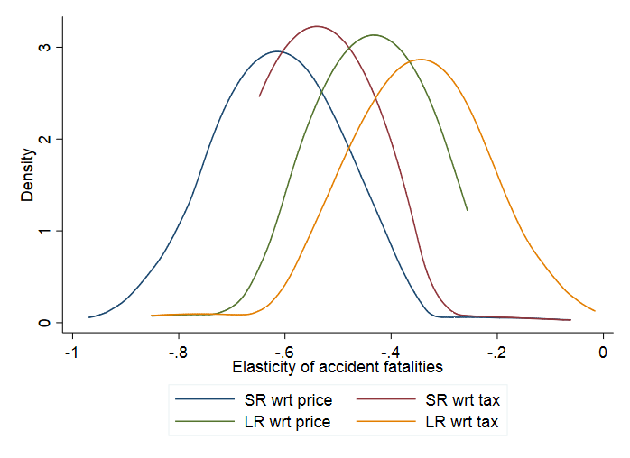
Table 7.9 summarizes the key characteristics of the distributions shown in Figure 7.7: mean, median, 5th and 95th percentiles.
| Accident fatalities | Short-run | Long-run | ||
|---|---|---|---|---|
| wrt price | wrt tax | wrt price | wrt tax | |
| Default elasticity | -0.168 | -0.150 | -0.192 | -0.137 |
| Mean | -0.613 | -0.536 | -0.443 | -0.357 |
| Median | -0.603 | -0.546 | -0.432 | -0.364 |
| 5th percentile | -0.741 | -0.571 | -0.514 | -0.459 |
| 95th percentile | -0.532 | -0.491 | -0.373 | -0.208 |
| Number of estimates | 151 | 160 | 169 | 158 |
7.2.5.3 Road damage
Road damage is measured in CPAT with the road infrastructure expenditure for maintenance, as listed in the WRS. The underlying hypothesis is that all road damage is repaired and therefore captured by the road maintenance budget of the government, as opposed to road investment for the expansion of the road network.
Compared to the other two outcomes previously discussed, road damage presents the particularity to be more dependent on diesel price than on fuel price. Although the differential impact of a carbon tax on fuel and gasoline prices is relatively small, we thus use diesel prices in this section rather than gasoline prices as before.
7.2.5.3.1 Short-run elasticity
The results of road damage in the short run are not significant. They are included in the MS Excel appendix to this report, but within CPAT we assume the short run elasticity of road damage wrt fuel prices to be zero.
7.2.5.3.2 Long-run elasticity
In the long run, road damage costs react to diesel prices, but the results are not statistically significant as shown in Table 7.10. In the simple specifications (columns 1 and 2), the elasticity is around -0.3. We use the parameters estimated in the specification including interaction terms (column 3) in order to compute the country-specific elasticities for CPAT presented in the next subsection.
| Road damage | (1) | (2) | (3) |
|---|---|---|---|
| between estimator | |||
| Lag of ln of diesel pump price (2018 PPP-adj USD cents/liter) | 0.0957 | -0.269 | 0.819 |
| (0.862) | (0.735) | (0.156) | |
| Interaction ln(diesel) w/ Minimum of daily min-temperature (in B0C) | 0.352 | ||
| (0.397) | |||
| Interaction ln(diesel) w/ Total length of road network (in km) | -1.476*** | ||
| (0.00177) | |||
| Interaction ln(diesel) w/ Share of paved roads (in %) | -0.947** | ||
| (0.0431) | |||
| Interaction ln(diesel) w/ Share of urban population (in %) | 0.391 | ||
| (0.277) | |||
| Interaction ln(diesel) w/ Number of lorries and vans | 0.563 | ||
| (0.677) | |||
| Covariates | No | Yes | Yes |
| Interaction terms | No | No | Yes |
| Observations | 1,321 | 1,039 | 1,039 |
| R-squared | 0.726 | 0.803 | 0.914 |
| Number of countries | 118 | 103 | 103 |
Robust p-values in parentheses, *** p<0.01, ** p<0.05, * p<0.1. Ln(diesel) is the natural logarithm of the gasoline pump price (2018 PPP_adjusted USD cents/liter). The parameter marked in green is the default long-run elasticity in CPAT for countries that have not sufficient data for country-specific elasticity estimation. Sample averages are subtracted from the interaction variables prior to interacting with the fuel price.
7.2.5.3.3 Country-specific elasticities
As shown on Table 7.11, the long-run road damage elasticities depend on structural features of the country’s transportation system (population density, total road network, urbanization), on the vehicle fleet, particularly larger vehicles, and rule of law. Additionally, weather plays an important role for road damage. In particular, minimum temperatures seem to impact the effect of a carbon tax: with less traffic, the effect of low temperatures (frost) on road damage is reduced.
| Long run | |
|---|---|
| wrt price | wrt tax |
| Number of lorries and vans | Number of lorries and vans |
| Total length of road network (in km) | Total length of road network (in km) |
| Share of urban population (in %) | Share of urban population (in %) |
| Share of paved roads (in %) | Road density (in km per km2) |
| Minimum of daily min-temperature (in °C) | Population density (people per sq. km of land area) |
Notes: The covariates used for estimating the country-specific elasticities are chosen by a data-driven machine learning algorithm among a list of 30 candidate variables.
Figure 7.8 shows that the estimates using fuel taxes suggest less elasticity of road prices wrt fuel taxes than the estimates using prices at the pump. Overall, virtually all estimates lie above -1, suggesting a less than one-to-one reaction of road damage to changes in fuel prices.
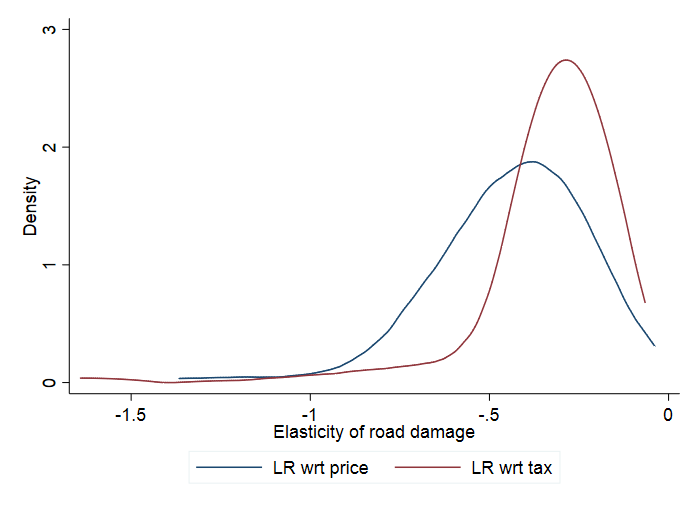
Table 7.12 summarizes the key characteristics of the distributions shown in Figure 7.8.
| Road damage | Long-run | |
|---|---|---|
| wrt price | wrt tax | |
| Default elasticity | -0.269 | -0.497 |
| Mean | -0.440 | -0.335 |
| Median | -0.415 | -0.284 |
| 5th percentile | -0.768 | -0.699 |
| 95th percentile | -0.187 | -0.173 |
| Number of estimates | 170 | 178 |
7.2.5.4 Vehicle-km travelled (VKT)
We analyze the effect of fuel prices on VKT in order to illustrate one of the main channels through which fuel prices affect congestion, accidents and road damage. We do not consider VKT a policy outcome per se and the effect of fuel prices on the other outcomes is calculated directly (not via the VKT elasticities).
7.2.5.4.1 Short-run elasticity
The estimated short-run elasticities of VKT wrt fuel price are shown Table 7.13. The short-run elasticity is estimated at -0.395, which is similar to the more elastic estimates in the literature (Table 7.1).
| VKT | (1) | (2) | (3) | (4) | (5) | (6) |
|---|---|---|---|---|---|---|
| pooled OLS | within estimator | |||||
| Ln of gasoline pump price (2018 PPP-adj USD cents/liter) | -0.203** | -0.0940 | -0.0595 | -0.237*** | -0.395*** | -0.470*** |
| (0.0276) | (0.403) | (0.787) | (9.23e-07) | (9.98e-08) | (1.15e-05) | |
| Interaction lnsuper w/ Ln of number of vehicles per capita | 0.631*** | -0.569*** | ||||
| (0.00195) | (8.36e-07) | |||||
| Interaction lnsuper w/ Ln of population | 0.0230 | -0.0117 | ||||
| (0.905) | (0.904) | |||||
| Interaction lnsuper w/ Infant mortality rate (per 1,000 live births | 0.509** | -0.676*** | ||||
| (0.0117) | (5.36e-08) | |||||
| Interaction lnsuper w/ Number of motorcycles per capita | 0.194 | 0.231*** | ||||
| (0.205) | (0.00485) | |||||
| Interaction lnsuper w/ Maximum speed on urban roads (in km/h) | 0.199 | -0.127* | ||||
| (0.136) | (0.0790) | |||||
| Covariates | No | Yes | Yes | No | Yes | Yes |
| Fixed effects | No | No | No | Yes | Yes | Yes |
| Interaction terms | No | No | Yes | No | No | Yes |
| Number of country_iso3_num | 118 | 106 | 106 | |||
| Robust pval in parentheses | 0 | 0 | 0 | 0 | 0 | 0 |
| Number of country FE | 0 | 0 | 0 | 0 | 0 | 0 |
Robust p-values in parentheses, *** p<0.01, ** p<0.05, * p<0.1. Ln(gasoline) is the natural logarithm of the gasoline pump price (2018 PPP_adjusted USD cents/liter). The parameter marked in green is the default short-run elasticity in CPAT for countries that have not sufficient data for country-specific elasticity estimation. Sample averages are subtracted from the interaction variables prior to interacting with the fuel price.
7.2.5.4.2 Long-run elasticity
The long-run estimate for the VKT elasticity is shown in Table 7.14. With an estimate of 0.228, our result is at the more inelastic side of estimates in the literature (Table 7.1).
| VKT | (1) | (2) | (3) |
|---|---|---|---|
| between estimator | |||
| Ln of gasoline pump price (2018 PPP-adj USD cents/liter) | -0.493 | -0.228 | 0.694 |
| (0.242) | (0.652) | (0.503) | |
| Interaction lnsuper w/ Number of motorcycles per capita | 0.131 | ||
| (0.824) | |||
| Interaction lnsuper w/ Population density (people per sq. km of land area) | 5.058 | ||
| (0.333) | |||
| Interaction lnsuper w/ Rule of law (from -2.5=low to 2.5=high) | 0.222 | ||
| (0.646) | |||
| Interaction lnsuper w/ Total length of road network (in km) | 0.197 | ||
| (0.436) | |||
| Interaction lnsuper w/ Maximum speed on rural roads (in km/h) | 0.0638 | ||
| (0.895) | |||
| Covariates | No | Yes | Yes |
| Interaction terms | No | No | Yes |
| Number of country_iso3_num | 118 | 106 | 106 |
| Robust pval in parentheses | 0 | 0 | 0 |
| Number of country FE | 0 | 0 | 0 |
Robust p-values in parentheses, *** p<0.01, ** p<0.05, * p<0.1. Ln(gasoline) is the natural logarithm of the gasoline pump price (2018 PPP_adjusted USD cents/liter). The parameter marked in green is the default long-run elasticity in CPAT for countries that have not sufficient data for country-specific elasticity estimation. Sample averages are subtracted from the interaction variables prior to interacting with the fuel price.
7.2.5.4.3 Country-specific elasticities
Similar to the other variables, Table 7.15 shows the variables selected by the algorithm for estimating the country-specific elasticities. We see that the road network (total length of the network, road density), the fleet (motorcycles, number of vehicles) and more general country characteristics (population size and density, infant mortality rate, GDP) enter into the calculation.
| Short run | Long run | ||
|---|---|---|---|
| wrt price | wrt tax | wrt price | wrt tax |
| Ln of number of vehicles per capita | Number of vehicles per capita | Total length of road network (in km) | Total length of road network (in km) |
| Number of motorcycles per capita | Number of motorcycles per capita | Maximum speed on rural roads (in km/h) | Maximum speed on rural roads (in km/h) |
| Ln of population | Population density (people per sq. km of land area) | Number of motorcycles per capita | Number of motorcycles per capita |
| Infant mortality rate (per 1,000 live births) | Road density (in km per km2) | Rule of law (from -2.5=low to 2.5=high) | GDP per capita (in 2018 PPP-adj USD) |
| Maximum speed on urban roads (in km/h) | Precipitation (in mm) | Population density (people per sq. km of land area) | Road density (in km per km2) |
Notes: The covariates used for estimating the country-specific elasticities are chosen by a data-driven machine learning algorithm among a list of 30 candidate variables.
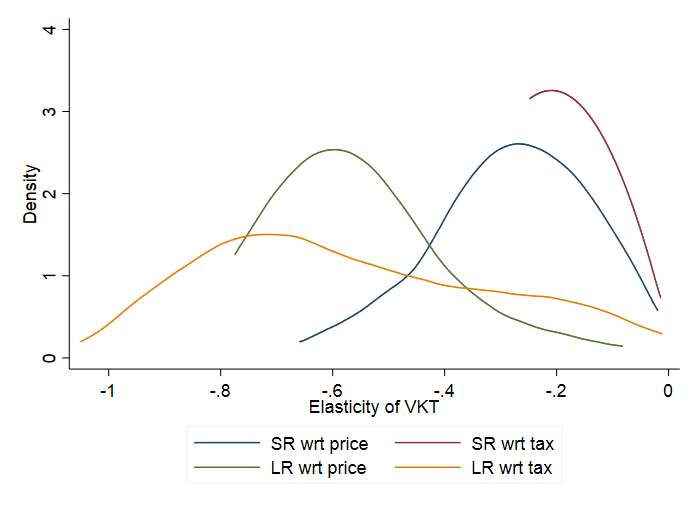
The distribution of the resulting country-specific elasticity estimates is described in Figure 7.9 and Table 7.16. In the majority of countries, VKT is more elastic in the long-run than in the short-run.
| VKT | Short-run | Long-run | ||
|---|---|---|---|---|
| wrt price | wrt tax | wrt price | wrt tax | |
| Default elasticity | -0.395 | -0.218 | -0.228 | -0.225 |
| Mean | -0.282 | -0.209 | -0.561 | -0.566 |
| Median | -0.241 | -0.220 | -0.591 | -0.620 |
| 5th percentile | -0.512 | -0.245 | -0.724 | -0.891 |
| 95th percentile | -0.138 | -0.128 | -0.245 | -0.126 |
| Number of estimates | 163 | 167 | 158 | 141 |
7.2.6 Excel implementation
7.2.6.1 In CPAT-AI
The co-benefits module is not yet built in CPAT-AI. The mitigation workbook exports to it, in section 11b of tab Mitigation, the road and total fuel use of whichever road model is switched on and the road share (Section 7.1.15). Its outputs that the mitigation workbook reads (external costs of accidents and congestion per vehicle-km, road damage per freight vehicle-km) are typed on tab FromTrans from the legacy CPAT workbook’s run for Egypt; a country without rows there reads 0. Section 18 of tab Mitigation turns them into external costs per unit of fuel (compare Section 7.2.6.6), and section 19 values the road transport co-benefits in the welfare results. The rest of this section describes the module of legacy CPAT.
7.2.6.2 General
The transport co-benefits module takes as an input the road fuel price changes induced by the policy indicated by the user in the dashboard. The module then computes changes in VKT, congestion, accidents and road damage and presents them graphically in the dashboard tab. The information flow is schematized in Figure 7.10. Although the effect on VKT is computed, the other outcomes are modeled directly as a function of price, in order to avoid having to take functional form assumptions on the influence of VKT and its interaction with the other channels.
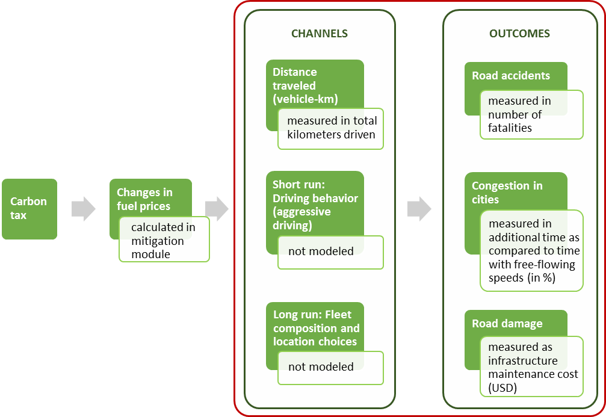
Note: Channels are shown to illustrate the economic theory; they are not modeled/estimated separately within CPAT. The estimated elasticities result of the interaction of all channels in the data.
7.2.6.3 Baseline forecasts
In order to graphically represent changes induced by the policy compared to a baseline, we must first establish a baseline forecast. The methodology in CPAT is identical for all three outcomes and VKT. It follows the following structure:
Establish a linear forecast based on the average growth rate of available (often incomplete) time series of the variable in the past;
- The sheet “Tran_Data” contains recent values of the outcome variables as well as the geometric average of growth rates over the past years.
Adjust the variable’s linear forecast:
for (forecasted) future deviations from (observed) average past GDP growth using the estimated elasticity of the outcome wrt GDP,
for (forecasted) future deviations from (observed) average past population growth using the estimated elasticity of the outcome wrt population.
\[Y_{t}^{\text{baseline}} = \left( 1 + g_{t}^{\text{GDP}} - \overline{g^{\text{GDP}}} \right)^{\eta_{\text{GDP}}}\left( 1 + g_{t}^{\text{pop}} - \overline{g^{\text{pop}}} \right)^{\eta_{\text{pop}}}Y_{t}^{\text{simple}} \tag{7.52}\]
where:
\(Y_{t}^{\text{baseline}}\) is the baseline (without policy) forecast of variable \(Y\),
\(Y_{t}^{\text{simple}}\) is the “naïve” linear forecast based only on past observed values of \(Y\),
\(g_{t}^{\text{GDP}} = \frac{\text{GDP}_{t}}{\text{GDP}_{t - 1}} - 1\) is the GDP growth rate, from the contemporary and previous GDP (GDP growth forecast for coming years from IMF World Economic Outlook),
\(\overline{g^{\text{GDP}}}\) is the expected GDP growth rate (geometric average growth rate over past years, a net rate like \(g_{t}^{\text{GDP}}\)),
\(\eta_{\text{GDP}}\) is the elasticity of the outcome wrt GDP,
\(g_{t}^{\text{pop}} = \frac{\text{pop}_{t}}{\text{pop}_{t - 1}} - 1\) is the population growth rate, from the contemporary and previous population sizes (WB Population Estimates and Projections),
\(\overline{g^{\text{pop}}}\) is the expected population growth rate (geometric average growth rate over past years, a net rate like \(g_{t}^{\text{pop}}\)),
and \(\eta_{\text{pop}}\) is the elasticity of the outcome wrt population size.
We need to subtract expected GDP/population growth from the actual (forecasted) GDP/population growth, as the past growth rates are implicitly included in the linear forecast \(Y_{t}^{\text{simple}}\).
Adjusting for GDP growth in this way should allow us to account for booms and recessions, as for example the graphically impressive drop caused by Covid-19.
7.2.6.4 Policy forecast
The impact of the carbon policy depends on the change in fuel prices and the variable’s elasticity wrt fuel prices/taxes.
The fuel price is computed as follows:
the baseline road fuel price is computed as the weighted average of baseline gasoline and diesel price, where the weights equal the respective fuel’s share of baseline total road fuel consumption;
the policy road fuel price is computed as the weighted average of policy gasoline and diesel price, where the weights equal the respective fuel’s share of policy total road fuel consumption;
the price change is defined as the ratio of the policy road fuel price over the baseline road fuel price.
We obtain the policy forecast \(Y_{t}^{\text{policy}}\) by weighting the price change by the elasticity wrt fuel price \(\eta_{p}\).
\[Y_{t}^{\text{policy}} = \left( \frac{p^{\text{policy}}}{p^{\text{baseline}}} \right)^{\eta_{p}}Y_{t}^{\text{baseline}} \tag{7.53}\]
where \(p^{\text{baseline}}\) is the baseline road fuel price and \(p^{\text{policy}}\) is the policy road fuel price.
7.2.6.5 Dashboard graphics
For VKT and the three outcomes of interest, we establish similar graphics in the CPAT dashboard.
For each variable, there is a line graph representing the time series of the baseline forecast \(Y_{t}^{\text{baseline}}\) and the policy forecast \(Y_{t}^{\text{policy}}\). An example is given in Figure Figure 7.11.
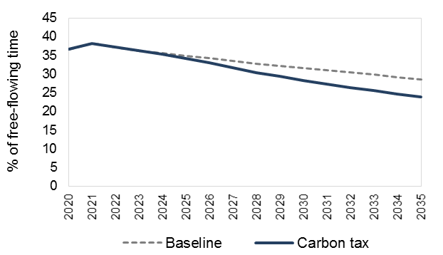
Source: Tomtom, own computations.
We then plot a bar chart of the difference between the two lines of Figure Figure 7.11, representing only the change induced by the policy. An example is given in Figure 7.12.
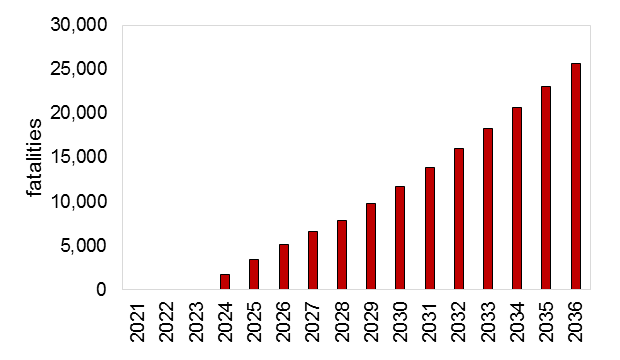
Source: WRS, OECD, UNECE, own computations.
Finally, we provide some general evidence of the effect of fuel prices on accident and congestion with a scatter graph. For this scatter graph, we combine cross-sectional country-level information for a given year with year-level information of all available years for the country for which the policy introduction is studied. We also add a linear trendline, which captures the negative correlation between fuel prices and our outcomes. An example is given in Figure 7.13.
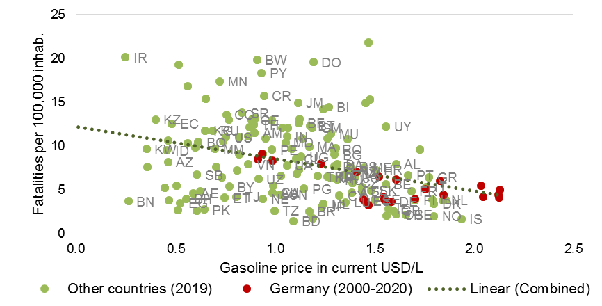
Source: WRS, Enerdata, EIU, IEA, own computations.
7.2.6.6 Externality cost per liter of motor fuel
This section explains how CPAT computes the externality cost (per liter of motor fuel) from accidents and congestion. The externality costs are computed as the co-benefits from a carbon tax-induced reduction in motor fuel consumption.
The main road transport co-benefits of a carbon tax are a reduction in road accidents (from a reduction in driving, changes in the vehicle fleet, less aggressive driving, etc.) and a reduction in congestion (from a reduction in driving, an increase in car sharing, changes in the vehicle fleet, changes in transport timing decisions, etc.).
Within CPAT, the magnitude of these co-benefits is computed using empirical elasticities from a large historical dataset using econometric panel methods. Given the multitude of channels involved in the final result, the effect on accidents/congestion is not directly proportional to the change in vehicle-kilometers traveled (VKT) or the change in fuel consumption. For the data and the estimation, see Section 7.2.3 and Section 7.2.4.
The externality cost is computed as follows:
Compute baseline forecast of accidents/congestion without policy;
- Baseline forecasts take into account historical growth rates, adjusted for forecasted GDP and population growth.
Compute policy forecast of accidents/congestion with carbon tax of users choice;
- Policy forecasts are the baseline forecast adjusted for the fuel price change using the country-specific elasticity; this country-specific elasticity is empirically estimated and measures overall (i.e. across channels) which fuel prices affect accidents/congestion.
Compute for policy and baseline scenarios the monetary value of accidents (multiplying fatalities by value of statistical life) and congestion (multiplying time lost in traffic times value of travel time);
Compute the change in value of accidents/congestion;
Divide change in value by change in motor fuel consumption from CPAT Mitigation Module.
The externality cost estimate varies each year. For simplicity, only one year is shown as an example in the CPAT Dashboard. As an example Figure 7.14 shows the graph for Colombia.
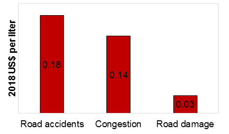
Source: Tomtom, WRS, UNECE, OECD, IMF, own computations.
Note that the TomTom Traffic Index is defined on the city-level. Therefore, the congestion externality shown in CPAT applies only the urban part of transport. To our knowledge, there is no database measuring congestion levels on the national level. Rural transport is assumed to be free of congestion, i.e. causing zero congestion externality cost.
7.2.7 Caveats
The transport co-benefits module chooses a reduced-form econometric approach to predict the impact of carbon taxes on road transport externalities. Certain caveats must be kept in mind:
The quality of the estimates relies on the quality of available data. For certain countries/years, there is no sufficient data to estimate country-specific transport externality elasticities. In these cases, an internationally estimated default value was used. In the transport co-benefits module (Transport tab, section B – elasticities), the user can see whether country-specific or default elasticities have been used.
Reduced-form approaches do not explicitly model the mechanisms. A carbon tax impacts transport demand through various channels: more fuel-efficient use of existing vehicles (e.g. speed, carpooling), switch to less carbon-intensive means of transport (e.g. public transport, non-motorized), reduction in the number/length of trips. The transport co-benefits module cannot disentangle these channels, and can thus not attribute changes in outcomes to individual channels. In particular, carbon taxes make the use of private vehicles more expensive and CPAT cannot measure the loss from the value of non-realized trips.
General equilibrium effects are not included, such as changes in prices or availability of the outside options. One example frequently discussed are electric vehicles (EVs). Currently, the transport co-benefits module does not include EVs. However, an extension of the transport co-benefits module is planned in order to include EVs.
Elasticities, such as estimated with the transport co-benefits module’s methodology, predict the reaction of outcomes to small changes in carbon taxes. The transport co-benefits module does not account for potentially non-linear responses to large policy changes. In particular, large policy changes across the world may induce technology changes and relevant changes in the vehicle fleet.
A uniform carbon tax would impact not only private vehicles but also lower-emitting transport modes such as buses. An increase in the price of public transit could have a negative impact on people’s ability to reach jobs and essential services thereby contributing to fragmented labor markets and loss of welfare. Since low-income households are more likely to reduce their number of trips (instead of switching means of transport), a carbon tax could reduce their access to economic opportunities and thereby impact inequality. While it is not within the scope of CPAT1.0, understanding the potential impact of carbon pricing on access to employment is important to inform the development of more targeted policies that can offset any such negative distributional effects of a carbon tax on transit accessibility.
7.2.8 Status of upgrades since the last review, changes not implemented and remaining issues
We constantly update the dataset used to estimate the parameters behind the transport co-benefits module. So far, CPAT reflects the last complete update using the WRS 2020 edition. A further update using the WRS 2021 edition is in progress.
As we are using proprietary data, we had to transform all non-shareable (proprietary) data into a shareable form. For the transport co-benefits module, this was mainly achieved by using (near-future) forecast based on historic data forecasts, instead of the historic data itself.
We have further added estimates of the externality cost per liter of motor fuel, described in Section 7.2.6.6.
We are still working on two features not yet implemented:
Integration of electric vehicles (EVs): The introduction of EVs and their necessary charging infrastructure is relatively slow, especially in developing countries. So far, we have struggled to get sufficient data for credible estimations. Nevertheless, we are aware that EVs may fundamentally change the link between traffic (including accidents and congestion) and carbon taxes. We are thus working on a methodology to include EVs and EV-supporting policies into CPAT.
Between-module consistency: Currently, the VKT estimates in the transport co-benefits module are not linked to the transport CO2 in the Mitigation Module. In fact, VKT and CO2 may follow distinct paths as technology and driving habits (e.g. number of people in a vehicle) change. Nevertheless, future versions of CPAT will improve the coordination between modules.
7.2.9 Appendices
7.2.9.1 Detailed variable list with data sources
| Definition | Source | Inter-polated | |
|---|---|---|---|
| Outcomes | |||
| Total road distance travelled (in million vehicle-km) | WRS, OECD14 | ||
| Number of fatalities by road accident: Any person killed immediately or dying within 30 days as a result of an accident (accident involving at least one road vehicle in motion), excluding suicides | WRS, UNECE, OECD | ||
| Congestion index (in % deviation from free-flowing speed) | TomTom | ||
| Road maintenance cost (in million 2010 USD) | WRS | ||
| Covariates | |||
| Year | |||
| Retail price per liter of motor gasoline (unleaded Octan 95) at the pump (in 2010 USD cent/liter) | IMF, Enerdata, IEA, GIZ | ||
| Retail price per liter of motor diesel at the pump (in 2010 USD cent/liter) | IMF, Enerdata, IEA, GIZ | ||
| Population | WDI | X | |
| GDP per capita (in 2010 USD) | WDI | ||
| Youth share (population 15 to 24 years-old in % of total) | WDI | ||
| Alcohol, recorded per capita (15+) consumption (in liters of pure alcohol) | WHO/GHO | ||
| Maximum speed in rural areas15 (in km/h) | WHO/GHO | X | |
| Maximum speed in urban areas (in km/h) | WHO/GHO | X | |
| Control of corruption (from -2.5=low to 2.5=high) | WGI | ||
| Road density (km of road per km2 of country area) | WRS | ||
| Share of motorcycles (in % of total vehicle fleet) | WRS | X | |
| Vehicles per capita | WRS | X | |
| Additional candidate variables for elasticity | |||
| Yearly in rainfall (in total mm) | CCKP | ||
| Annual number of days with minimum temperature ≤ 0°F/-17.8°C | NCEI | ||
| Annual number of days with minimum temperature ≤ 32°F/0°C | NCEI | ||
| Annual number of days with minimum temperature ≥ 90°F/32.2°C | NCEI | ||
| Extreme minimum temperature for the year (in °C) | NCEI | ||
| Satisfaction with public transport (in %) | SDR | ||
| GDP (in 2010 USD) | WDI | ||
| Infant mortality rate (per 1,000 live births) | WDI | ||
| Population density (in persons/km2) | WDI | X | |
| Share of urban population (in % of total population) | WDI | X | |
| Rule of law (from -2.5=low to 2.5=high) | WGI | ||
| Blood alcohol concentration (BAC) legal driving limit (in g/dl) | WHO/GHO | X | |
| Maximum speed (average of urban and rural, in km/h) | WHO/GHO | X | |
| Seat belt wearing rate in front seat (in %) | WHO/GHO | X | |
| Motorcycles per capita | WRS | X | |
| Number of lorries and trucks | WRS | X | |
| Share of lorries and trucks (in % of total vehicle fleet) | WRS | X | |
| Share of paved roads (in % of total road km) | WRS | X | |
| Total length of road network (in km) | WRS | X |
7.2.9.2 Countries/years covered by the dataset
| no outcomes | None of the outcomes |
|---|---|
| some outcomes and covars | Some outcomes and covariates |
| all outcomes, but not all covars | All outcome variables, but not all covariates |
| all | All outcomes and all covariates |
| 1995 | 1996 | 1997 | 1998 | 1999 | 2000 | 2001 | 2002 | 2003 | 2004 | 2005 | 2006 | 2007 | 2008 | 2009 | 2010 | 2011 | 2012 | 2013 | 2014 | 2015 | 2016 | 2017 | 2018 | 2019 | 2020 | 2021 | |
|---|---|---|---|---|---|---|---|---|---|---|---|---|---|---|---|---|---|---|---|---|---|---|---|---|---|---|---|
| Afghanistan | no outcomes | no outcomes | no outcomes | no outcomes | no outcomes | some outcomes and covars | some outcomes and covars | some outcomes and covars | some outcomes and covars | some outcomes and covars | some outcomes and covars | some outcomes and covars | some outcomes and covars | some outcomes and covars | some outcomes and covars | some outcomes and covars | some outcomes and covars | some outcomes and covars | some outcomes and covars | some outcomes and covars | some outcomes and covars | some outcomes and covars | some outcomes and covars | some outcomes and covars | some outcomes and covars | no outcomes | no outcomes |
| Albania | some outcomes and covars | some outcomes and covars | some outcomes and covars | some outcomes and covars | some outcomes and covars | some outcomes and covars | some outcomes and covars | some outcomes and covars | some outcomes and covars | some outcomes and covars | some outcomes and covars | some outcomes and covars | some outcomes and covars | some outcomes and covars | some outcomes and covars | some outcomes and covars | some outcomes and covars | some outcomes and covars | some outcomes and covars | some outcomes and covars | some outcomes and covars | some outcomes and covars | some outcomes and covars | some outcomes and covars | some outcomes and covars | some outcomes and covars | no outcomes |
| Algeria | no outcomes | some outcomes and covars | no outcomes | no outcomes | no outcomes | no outcomes | no outcomes | no outcomes | some outcomes and covars | no outcomes | some outcomes and covars | some outcomes and covars | some outcomes and covars | some outcomes and covars | some outcomes and covars | some outcomes and covars | some outcomes and covars | some outcomes and covars | some outcomes and covars | some outcomes and covars | some outcomes and covars | some outcomes and covars | some outcomes and covars | no outcomes | some outcomes and covars | no outcomes | no outcomes |
| American Samoa | no outcomes | no outcomes | no outcomes | no outcomes | no outcomes | no outcomes | no outcomes | no outcomes | no outcomes | no outcomes | no outcomes | no outcomes | no outcomes | no outcomes | no outcomes | no outcomes | no outcomes | no outcomes | no outcomes | no outcomes | no outcomes | no outcomes | no outcomes | no outcomes | no outcomes | no outcomes | no outcomes |
| Andorra | no outcomes | no outcomes | no outcomes | no outcomes | no outcomes | no outcomes | no outcomes | no outcomes | no outcomes | no outcomes | no outcomes | no outcomes | no outcomes | no outcomes | no outcomes | no outcomes | no outcomes | no outcomes | no outcomes | no outcomes | no outcomes | no outcomes | no outcomes | no outcomes | no outcomes | no outcomes | no outcomes |
| Angola | some outcomes and covars | no outcomes | no outcomes | no outcomes | no outcomes | some outcomes and covars | some outcomes and covars | some outcomes and covars | some outcomes and covars | some outcomes and covars | some outcomes and covars | some outcomes and covars | some outcomes and covars | some outcomes and covars | some outcomes and covars | some outcomes and covars | some outcomes and covars | some outcomes and covars | some outcomes and covars | some outcomes and covars | some outcomes and covars | some outcomes and covars | some outcomes and covars | some outcomes and covars | some outcomes and covars | no outcomes | no outcomes |
| Anguilla | no outcomes | no outcomes | no outcomes | no outcomes | no outcomes | no outcomes | no outcomes | no outcomes | no outcomes | no outcomes | no outcomes | no outcomes | no outcomes | no outcomes | no outcomes | no outcomes | no outcomes | no outcomes | no outcomes | no outcomes | no outcomes | no outcomes | no outcomes | no outcomes | no outcomes | no outcomes | no outcomes |
| Antigua and Barbuda | no outcomes | no outcomes | no outcomes | no outcomes | no outcomes | no outcomes | no outcomes | no outcomes | no outcomes | no outcomes | no outcomes | no outcomes | no outcomes | no outcomes | no outcomes | no outcomes | no outcomes | no outcomes | no outcomes | no outcomes | no outcomes | no outcomes | no outcomes | no outcomes | no outcomes | no outcomes | no outcomes |
| Argentina | some outcomes and covars | some outcomes and covars | some outcomes and covars | some outcomes and covars | some outcomes and covars | some outcomes and covars | some outcomes and covars | some outcomes and covars | some outcomes and covars | some outcomes and covars | some outcomes and covars | some outcomes and covars | some outcomes and covars | some outcomes and covars | some outcomes and covars | some outcomes and covars | some outcomes and covars | some outcomes and covars | some outcomes and covars | some outcomes and covars | all outcomes, but not all covars | all outcomes, but not all covars | some outcomes and covars | some outcomes and covars | some outcomes and covars | some outcomes and covars | some outcomes and covars |
| Armenia | some outcomes and covars | some outcomes and covars | some outcomes and covars | some outcomes and covars | some outcomes and covars | some outcomes and covars | some outcomes and covars | some outcomes and covars | some outcomes and covars | some outcomes and covars | some outcomes and covars | some outcomes and covars | some outcomes and covars | some outcomes and covars | some outcomes and covars | some outcomes and covars | some outcomes and covars | some outcomes and covars | some outcomes and covars | some outcomes and covars | some outcomes and covars | some outcomes and covars | some outcomes and covars | some outcomes and covars | some outcomes and covars | some outcomes and covars | no outcomes |
| Aruba | no outcomes | no outcomes | no outcomes | no outcomes | no outcomes | no outcomes | no outcomes | no outcomes | no outcomes | no outcomes | no outcomes | no outcomes | no outcomes | no outcomes | no outcomes | no outcomes | no outcomes | no outcomes | no outcomes | no outcomes | no outcomes | no outcomes | no outcomes | no outcomes | no outcomes | no outcomes | no outcomes |
| Australia | some outcomes and covars | some outcomes and covars | some outcomes and covars | some outcomes and covars | some outcomes and covars | some outcomes and covars | some outcomes and covars | some outcomes and covars | some outcomes and covars | some outcomes and covars | some outcomes and covars | some outcomes and covars | some outcomes and covars | some outcomes and covars | some outcomes and covars | some outcomes and covars | some outcomes and covars | some outcomes and covars | all | all | all | all | all | all outcomes, but not all covars | some outcomes and covars | some outcomes and covars | some outcomes and covars |
| Austria | some outcomes and covars | some outcomes and covars | some outcomes and covars | some outcomes and covars | some outcomes and covars | some outcomes and covars | some outcomes and covars | some outcomes and covars | some outcomes and covars | some outcomes and covars | some outcomes and covars | some outcomes and covars | some outcomes and covars | all | all | all | all | all | all | all | all | all | all | all outcomes, but not all covars | all outcomes, but not all covars | some outcomes and covars | some outcomes and covars |
| Azerbaijan | some outcomes and covars | some outcomes and covars | some outcomes and covars | some outcomes and covars | some outcomes and covars | some outcomes and covars | some outcomes and covars | some outcomes and covars | some outcomes and covars | some outcomes and covars | some outcomes and covars | some outcomes and covars | some outcomes and covars | some outcomes and covars | some outcomes and covars | some outcomes and covars | some outcomes and covars | some outcomes and covars | some outcomes and covars | some outcomes and covars | some outcomes and covars | some outcomes and covars | some outcomes and covars | some outcomes and covars | some outcomes and covars | some outcomes and covars | no outcomes |
| Bahamas | no outcomes | no outcomes | no outcomes | no outcomes | no outcomes | no outcomes | no outcomes | no outcomes | no outcomes | no outcomes | no outcomes | no outcomes | no outcomes | no outcomes | no outcomes | no outcomes | no outcomes | no outcomes | no outcomes | no outcomes | no outcomes | no outcomes | no outcomes | no outcomes | no outcomes | no outcomes | no outcomes |
| Bahrain | some outcomes and covars | some outcomes and covars | some outcomes and covars | some outcomes and covars | some outcomes and covars | some outcomes and covars | some outcomes and covars | some outcomes and covars | some outcomes and covars | some outcomes and covars | some outcomes and covars | some outcomes and covars | some outcomes and covars | some outcomes and covars | some outcomes and covars | some outcomes and covars | some outcomes and covars | some outcomes and covars | some outcomes and covars | some outcomes and covars | some outcomes and covars | some outcomes and covars | some outcomes and covars | some outcomes and covars | some outcomes and covars | no outcomes | no outcomes |
| Bangladesh | some outcomes and covars | some outcomes and covars | some outcomes and covars | some outcomes and covars | some outcomes and covars | some outcomes and covars | no outcomes | no outcomes | some outcomes and covars | no outcomes | no outcomes | some outcomes and covars | no outcomes | some outcomes and covars | some outcomes and covars | some outcomes and covars | some outcomes and covars | some outcomes and covars | some outcomes and covars | some outcomes and covars | some outcomes and covars | some outcomes and covars | some outcomes and covars | some outcomes and covars | some outcomes and covars | no outcomes | no outcomes |
| Barbados | some outcomes and covars | some outcomes and covars | some outcomes and covars | some outcomes and covars | some outcomes and covars | some outcomes and covars | some outcomes and covars | some outcomes and covars | some outcomes and covars | no outcomes | no outcomes | no outcomes | some outcomes and covars | no outcomes | no outcomes | no outcomes | some outcomes and covars | no outcomes | some outcomes and covars | no outcomes | no outcomes | no outcomes | no outcomes | some outcomes and covars | some outcomes and covars | no outcomes | no outcomes |
| Belarus | some outcomes and covars | some outcomes and covars | some outcomes and covars | some outcomes and covars | some outcomes and covars | some outcomes and covars | some outcomes and covars | some outcomes and covars | some outcomes and covars | some outcomes and covars | some outcomes and covars | some outcomes and covars | some outcomes and covars | some outcomes and covars | some outcomes and covars | some outcomes and covars | some outcomes and covars | some outcomes and covars | some outcomes and covars | some outcomes and covars | some outcomes and covars | some outcomes and covars | some outcomes and covars | some outcomes and covars | some outcomes and covars | some outcomes and covars | no outcomes |
| Belgium | some outcomes and covars | some outcomes and covars | some outcomes and covars | some outcomes and covars | some outcomes and covars | some outcomes and covars | some outcomes and covars | some outcomes and covars | some outcomes and covars | some outcomes and covars | some outcomes and covars | some outcomes and covars | some outcomes and covars | all | all outcomes, but not all covars | all | all | all | all | all | all | all outcomes, but not all covars | all outcomes, but not all covars | some outcomes and covars | some outcomes and covars | some outcomes and covars | some outcomes and covars |
| Belize | no outcomes | some outcomes and covars | some outcomes and covars | some outcomes and covars | no outcomes | no outcomes | no outcomes | no outcomes | no outcomes | no outcomes | no outcomes | some outcomes and covars | some outcomes and covars | some outcomes and covars | some outcomes and covars | some outcomes and covars | some outcomes and covars | some outcomes and covars | some outcomes and covars | some outcomes and covars | no outcomes | no outcomes | no outcomes | some outcomes and covars | some outcomes and covars | no outcomes | no outcomes |
| Benin | some outcomes and covars | some outcomes and covars | no outcomes | no outcomes | no outcomes | no outcomes | no outcomes | no outcomes | no outcomes | some outcomes and covars | some outcomes and covars | some outcomes and covars | some outcomes and covars | some outcomes and covars | some outcomes and covars | no outcomes | some outcomes and covars | some outcomes and covars | some outcomes and covars | some outcomes and covars | some outcomes and covars | some outcomes and covars | some outcomes and covars | some outcomes and covars | no outcomes | no outcomes | no outcomes |
| Bermuda | no outcomes | no outcomes | no outcomes | no outcomes | no outcomes | no outcomes | no outcomes | no outcomes | no outcomes | no outcomes | no outcomes | no outcomes | no outcomes | no outcomes | no outcomes | no outcomes | some outcomes and covars | no outcomes | no outcomes | no outcomes | some outcomes and covars | some outcomes and covars | some outcomes and covars | no outcomes | no outcomes | no outcomes | no outcomes |
| Bhutan | no outcomes | no outcomes | no outcomes | some outcomes and covars | some outcomes and covars | no outcomes | no outcomes | no outcomes | no outcomes | no outcomes | no outcomes | no outcomes | some outcomes and covars | some outcomes and covars | some outcomes and covars | some outcomes and covars | some outcomes and covars | some outcomes and covars | some outcomes and covars | some outcomes and covars | some outcomes and covars | some outcomes and covars | some outcomes and covars | some outcomes and covars | some outcomes and covars | no outcomes | no outcomes |
| Bolivia | some outcomes and covars | some outcomes and covars | no outcomes | some outcomes and covars | some outcomes and covars | some outcomes and covars | some outcomes and covars | some outcomes and covars | some outcomes and covars | some outcomes and covars | some outcomes and covars | some outcomes and covars | some outcomes and covars | some outcomes and covars | some outcomes and covars | some outcomes and covars | some outcomes and covars | some outcomes and covars | some outcomes and covars | some outcomes and covars | some outcomes and covars | some outcomes and covars | some outcomes and covars | some outcomes and covars | some outcomes and covars | no outcomes | no outcomes |
| Bosnia and Herzegovina | some outcomes and covars | some outcomes and covars | some outcomes and covars | some outcomes and covars | some outcomes and covars | some outcomes and covars | some outcomes and covars | some outcomes and covars | some outcomes and covars | some outcomes and covars | some outcomes and covars | some outcomes and covars | some outcomes and covars | some outcomes and covars | some outcomes and covars | some outcomes and covars | some outcomes and covars | some outcomes and covars | some outcomes and covars | some outcomes and covars | some outcomes and covars | some outcomes and covars | some outcomes and covars | some outcomes and covars | some outcomes and covars | some outcomes and covars | no outcomes |
| Botswana | some outcomes and covars | some outcomes and covars | some outcomes and covars | some outcomes and covars | some outcomes and covars | some outcomes and covars | some outcomes and covars | some outcomes and covars | some outcomes and covars | some outcomes and covars | some outcomes and covars | some outcomes and covars | some outcomes and covars | some outcomes and covars | some outcomes and covars | some outcomes and covars | some outcomes and covars | some outcomes and covars | some outcomes and covars | some outcomes and covars | some outcomes and covars | some outcomes and covars | some outcomes and covars | some outcomes and covars | some outcomes and covars | no outcomes | no outcomes |
| Brazil | some outcomes and covars | some outcomes and covars | no outcomes | some outcomes and covars | no outcomes | no outcomes | no outcomes | no outcomes | some outcomes and covars | some outcomes and covars | some outcomes and covars | some outcomes and covars | some outcomes and covars | some outcomes and covars | some outcomes and covars | some outcomes and covars | some outcomes and covars | some outcomes and covars | some outcomes and covars | some outcomes and covars | some outcomes and covars | some outcomes and covars | some outcomes and covars | some outcomes and covars | some outcomes and covars | some outcomes and covars | some outcomes and covars |
| British Virgin Islands | no outcomes | no outcomes | no outcomes | no outcomes | no outcomes | no outcomes | no outcomes | no outcomes | no outcomes | no outcomes | no outcomes | no outcomes | no outcomes | no outcomes | no outcomes | no outcomes | no outcomes | no outcomes | no outcomes | no outcomes | no outcomes | no outcomes | no outcomes | no outcomes | no outcomes | no outcomes | no outcomes |
| Brunei Darussalam | some outcomes and covars | some outcomes and covars | some outcomes and covars | some outcomes and covars | some outcomes and covars | some outcomes and covars | some outcomes and covars | some outcomes and covars | some outcomes and covars | no outcomes | some outcomes and covars | some outcomes and covars | some outcomes and covars | some outcomes and covars | some outcomes and covars | some outcomes and covars | some outcomes and covars | some outcomes and covars | some outcomes and covars | some outcomes and covars | some outcomes and covars | some outcomes and covars | some outcomes and covars | some outcomes and covars | some outcomes and covars | no outcomes | no outcomes |
| Bulgaria | some outcomes and covars | some outcomes and covars | some outcomes and covars | some outcomes and covars | some outcomes and covars | some outcomes and covars | some outcomes and covars | some outcomes and covars | some outcomes and covars | some outcomes and covars | some outcomes and covars | some outcomes and covars | some outcomes and covars | all outcomes, but not all covars | all | all | all | all | all | all | all | all | all | all outcomes, but not all covars | some outcomes and covars | some outcomes and covars | some outcomes and covars |
| Burkina Faso | some outcomes and covars | some outcomes and covars | no outcomes | no outcomes | no outcomes | some outcomes and covars | some outcomes and covars | some outcomes and covars | some outcomes and covars | some outcomes and covars | some outcomes and covars | some outcomes and covars | some outcomes and covars | some outcomes and covars | some outcomes and covars | some outcomes and covars | some outcomes and covars | some outcomes and covars | some outcomes and covars | some outcomes and covars | some outcomes and covars | some outcomes and covars | some outcomes and covars | some outcomes and covars | some outcomes and covars | no outcomes | no outcomes |
| Burundi | no outcomes | no outcomes | no outcomes | no outcomes | no outcomes | some outcomes and covars | some outcomes and covars | some outcomes and covars | some outcomes and covars | some outcomes and covars | some outcomes and covars | some outcomes and covars | some outcomes and covars | some outcomes and covars | some outcomes and covars | some outcomes and covars | some outcomes and covars | some outcomes and covars | some outcomes and covars | some outcomes and covars | some outcomes and covars | some outcomes and covars | some outcomes and covars | some outcomes and covars | some outcomes and covars | no outcomes | no outcomes |
| Cambodia | some outcomes and covars | some outcomes and covars | some outcomes and covars | some outcomes and covars | some outcomes and covars | some outcomes and covars | some outcomes and covars | some outcomes and covars | some outcomes and covars | no outcomes | no outcomes | no outcomes | some outcomes and covars | no outcomes | some outcomes and covars | some outcomes and covars | no outcomes | no outcomes | some outcomes and covars | no outcomes | no outcomes | no outcomes | no outcomes | some outcomes and covars | some outcomes and covars | no outcomes | no outcomes |
| Cameroon | no outcomes | no outcomes | no outcomes | no outcomes | no outcomes | no outcomes | no outcomes | no outcomes | no outcomes | some outcomes and covars | some outcomes and covars | some outcomes and covars | some outcomes and covars | some outcomes and covars | some outcomes and covars | some outcomes and covars | some outcomes and covars | some outcomes and covars | some outcomes and covars | some outcomes and covars | some outcomes and covars | some outcomes and covars | some outcomes and covars | no outcomes | no outcomes | no outcomes | no outcomes |
| Canada | some outcomes and covars | some outcomes and covars | some outcomes and covars | some outcomes and covars | some outcomes and covars | some outcomes and covars | some outcomes and covars | some outcomes and covars | some outcomes and covars | some outcomes and covars | some outcomes and covars | some outcomes and covars | some outcomes and covars | all | all | some outcomes and covars | some outcomes and covars | some outcomes and covars | some outcomes and covars | all | all | all | all | all outcomes, but not all covars | all outcomes, but not all covars | some outcomes and covars | some outcomes and covars |
| Cape Verde | no outcomes | no outcomes | no outcomes | no outcomes | no outcomes | some outcomes and covars | some outcomes and covars | some outcomes and covars | some outcomes and covars | some outcomes and covars | some outcomes and covars | some outcomes and covars | some outcomes and covars | some outcomes and covars | some outcomes and covars | some outcomes and covars | some outcomes and covars | some outcomes and covars | some outcomes and covars | some outcomes and covars | some outcomes and covars | some outcomes and covars | some outcomes and covars | some outcomes and covars | some outcomes and covars | no outcomes | no outcomes |
| Cayman Islands | no outcomes | no outcomes | no outcomes | no outcomes | no outcomes | no outcomes | no outcomes | no outcomes | no outcomes | no outcomes | no outcomes | some outcomes and covars | some outcomes and covars | some outcomes and covars | some outcomes and covars | some outcomes and covars | some outcomes and covars | some outcomes and covars | some outcomes and covars | some outcomes and covars | some outcomes and covars | some outcomes and covars | some outcomes and covars | no outcomes | no outcomes | no outcomes | no outcomes |
| Central African Republic | no outcomes | some outcomes and covars | no outcomes | no outcomes | no outcomes | some outcomes and covars | some outcomes and covars | some outcomes and covars | some outcomes and covars | some outcomes and covars | some outcomes and covars | some outcomes and covars | some outcomes and covars | some outcomes and covars | some outcomes and covars | some outcomes and covars | some outcomes and covars | some outcomes and covars | some outcomes and covars | some outcomes and covars | some outcomes and covars | some outcomes and covars | some outcomes and covars | some outcomes and covars | some outcomes and covars | no outcomes | no outcomes |
| Chad | no outcomes | no outcomes | no outcomes | no outcomes | no outcomes | some outcomes and covars | some outcomes and covars | some outcomes and covars | some outcomes and covars | some outcomes and covars | some outcomes and covars | some outcomes and covars | some outcomes and covars | some outcomes and covars | some outcomes and covars | some outcomes and covars | some outcomes and covars | some outcomes and covars | some outcomes and covars | some outcomes and covars | some outcomes and covars | some outcomes and covars | some outcomes and covars | some outcomes and covars | some outcomes and covars | no outcomes | no outcomes |
| Channel Islands | no outcomes | no outcomes | no outcomes | no outcomes | no outcomes | no outcomes | no outcomes | no outcomes | no outcomes | no outcomes | no outcomes | no outcomes | no outcomes | no outcomes | no outcomes | no outcomes | no outcomes | no outcomes | no outcomes | no outcomes | no outcomes | no outcomes | no outcomes | no outcomes | no outcomes | no outcomes | no outcomes |
| Chile | some outcomes and covars | some outcomes and covars | some outcomes and covars | some outcomes and covars | some outcomes and covars | some outcomes and covars | some outcomes and covars | some outcomes and covars | some outcomes and covars | some outcomes and covars | some outcomes and covars | some outcomes and covars | some outcomes and covars | some outcomes and covars | some outcomes and covars | some outcomes and covars | some outcomes and covars | some outcomes and covars | some outcomes and covars | some outcomes and covars | some outcomes and covars | some outcomes and covars | some outcomes and covars | some outcomes and covars | some outcomes and covars | some outcomes and covars | some outcomes and covars |
| China | no outcomes | some outcomes and covars | some outcomes and covars | some outcomes and covars | some outcomes and covars | some outcomes and covars | some outcomes and covars | some outcomes and covars | some outcomes and covars | some outcomes and covars | some outcomes and covars | some outcomes and covars | some outcomes and covars | some outcomes and covars | some outcomes and covars | some outcomes and covars | some outcomes and covars | some outcomes and covars | some outcomes and covars | some outcomes and covars | some outcomes and covars | some outcomes and covars | some outcomes and covars | some outcomes and covars | some outcomes and covars | some outcomes and covars | no outcomes |
| China, Hong Kong | some outcomes and covars | some outcomes and covars | some outcomes and covars | some outcomes and covars | some outcomes and covars | some outcomes and covars | some outcomes and covars | some outcomes and covars | some outcomes and covars | some outcomes and covars | some outcomes and covars | some outcomes and covars | some outcomes and covars | some outcomes and covars | some outcomes and covars | some outcomes and covars | some outcomes and covars | some outcomes and covars | some outcomes and covars | some outcomes and covars | some outcomes and covars | some outcomes and covars | some outcomes and covars | some outcomes and covars | some outcomes and covars | some outcomes and covars | some outcomes and covars |
| Colombia | some outcomes and covars | some outcomes and covars | some outcomes and covars | some outcomes and covars | some outcomes and covars | some outcomes and covars | some outcomes and covars | some outcomes and covars | some outcomes and covars | some outcomes and covars | some outcomes and covars | some outcomes and covars | some outcomes and covars | some outcomes and covars | some outcomes and covars | some outcomes and covars | some outcomes and covars | some outcomes and covars | some outcomes and covars | some outcomes and covars | some outcomes and covars | some outcomes and covars | some outcomes and covars | some outcomes and covars | some outcomes and covars | some outcomes and covars | some outcomes and covars |
| Comoros | no outcomes | no outcomes | no outcomes | no outcomes | no outcomes | some outcomes and covars | some outcomes and covars | some outcomes and covars | some outcomes and covars | some outcomes and covars | some outcomes and covars | some outcomes and covars | some outcomes and covars | some outcomes and covars | some outcomes and covars | some outcomes and covars | some outcomes and covars | some outcomes and covars | some outcomes and covars | some outcomes and covars | some outcomes and covars | some outcomes and covars | some outcomes and covars | some outcomes and covars | some outcomes and covars | no outcomes | no outcomes |
| Congo, Dem. Rep. | no outcomes | no outcomes | no outcomes | no outcomes | no outcomes | some outcomes and covars | some outcomes and covars | some outcomes and covars | some outcomes and covars | some outcomes and covars | some outcomes and covars | some outcomes and covars | some outcomes and covars | some outcomes and covars | some outcomes and covars | some outcomes and covars | some outcomes and covars | some outcomes and covars | some outcomes and covars | some outcomes and covars | some outcomes and covars | some outcomes and covars | some outcomes and covars | some outcomes and covars | some outcomes and covars | no outcomes | no outcomes |
| Congo, Rep. | no outcomes | no outcomes | no outcomes | no outcomes | no outcomes | some outcomes and covars | some outcomes and covars | some outcomes and covars | some outcomes and covars | some outcomes and covars | some outcomes and covars | some outcomes and covars | some outcomes and covars | some outcomes and covars | some outcomes and covars | some outcomes and covars | some outcomes and covars | some outcomes and covars | some outcomes and covars | some outcomes and covars | some outcomes and covars | some outcomes and covars | some outcomes and covars | some outcomes and covars | some outcomes and covars | no outcomes | no outcomes |
| Costa Rica | some outcomes and covars | some outcomes and covars | some outcomes and covars | some outcomes and covars | some outcomes and covars | some outcomes and covars | some outcomes and covars | some outcomes and covars | some outcomes and covars | some outcomes and covars | some outcomes and covars | some outcomes and covars | some outcomes and covars | some outcomes and covars | some outcomes and covars | some outcomes and covars | some outcomes and covars | some outcomes and covars | some outcomes and covars | some outcomes and covars | some outcomes and covars | some outcomes and covars | some outcomes and covars | some outcomes and covars | some outcomes and covars | no outcomes | no outcomes |
| Cote d’Ivoire | no outcomes | no outcomes | no outcomes | no outcomes | no outcomes | no outcomes | no outcomes | no outcomes | no outcomes | no outcomes | no outcomes | no outcomes | no outcomes | some outcomes and covars | no outcomes | no outcomes | no outcomes | some outcomes and covars | some outcomes and covars | some outcomes and covars | some outcomes and covars | some outcomes and covars | some outcomes and covars | some outcomes and covars | no outcomes | no outcomes | no outcomes |
| Croatia | some outcomes and covars | some outcomes and covars | some outcomes and covars | some outcomes and covars | some outcomes and covars | some outcomes and covars | some outcomes and covars | some outcomes and covars | some outcomes and covars | some outcomes and covars | some outcomes and covars | some outcomes and covars | some outcomes and covars | some outcomes and covars | some outcomes and covars | some outcomes and covars | some outcomes and covars | some outcomes and covars | some outcomes and covars | some outcomes and covars | some outcomes and covars | some outcomes and covars | some outcomes and covars | some outcomes and covars | some outcomes and covars | some outcomes and covars | no outcomes |
| Cuba | some outcomes and covars | some outcomes and covars | some outcomes and covars | no outcomes | no outcomes | no outcomes | no outcomes | no outcomes | no outcomes | some outcomes and covars | some outcomes and covars | some outcomes and covars | some outcomes and covars | some outcomes and covars | some outcomes and covars | some outcomes and covars | some outcomes and covars | some outcomes and covars | some outcomes and covars | some outcomes and covars | some outcomes and covars | some outcomes and covars | some outcomes and covars | some outcomes and covars | some outcomes and covars | no outcomes | no outcomes |
| Curacao | no outcomes | no outcomes | no outcomes | no outcomes | no outcomes | no outcomes | no outcomes | no outcomes | no outcomes | no outcomes | no outcomes | no outcomes | no outcomes | no outcomes | no outcomes | no outcomes | no outcomes | no outcomes | no outcomes | no outcomes | no outcomes | no outcomes | no outcomes | no outcomes | no outcomes | no outcomes | no outcomes |
| Cyprus | some outcomes and covars | some outcomes and covars | some outcomes and covars | some outcomes and covars | some outcomes and covars | some outcomes and covars | some outcomes and covars | some outcomes and covars | some outcomes and covars | some outcomes and covars | some outcomes and covars | some outcomes and covars | some outcomes and covars | some outcomes and covars | some outcomes and covars | some outcomes and covars | some outcomes and covars | some outcomes and covars | some outcomes and covars | some outcomes and covars | some outcomes and covars | some outcomes and covars | some outcomes and covars | some outcomes and covars | some outcomes and covars | no outcomes | no outcomes |
| Czech Republic | some outcomes and covars | some outcomes and covars | some outcomes and covars | some outcomes and covars | some outcomes and covars | some outcomes and covars | some outcomes and covars | some outcomes and covars | some outcomes and covars | some outcomes and covars | some outcomes and covars | some outcomes and covars | some outcomes and covars | all outcomes, but not all covars | all | all | all | all | all | all | all | all | all | all outcomes, but not all covars | all outcomes, but not all covars | all outcomes, but not all covars | some outcomes and covars |
| Denmark | some outcomes and covars | some outcomes and covars | some outcomes and covars | some outcomes and covars | some outcomes and covars | some outcomes and covars | some outcomes and covars | some outcomes and covars | some outcomes and covars | some outcomes and covars | some outcomes and covars | some outcomes and covars | some outcomes and covars | all | all | all | all | all | all | all | all | all | all | all outcomes, but not all covars | all outcomes, but not all covars | some outcomes and covars | some outcomes and covars |
| Djibouti | no outcomes | no outcomes | no outcomes | no outcomes | no outcomes | some outcomes and covars | some outcomes and covars | some outcomes and covars | some outcomes and covars | some outcomes and covars | some outcomes and covars | some outcomes and covars | some outcomes and covars | some outcomes and covars | some outcomes and covars | some outcomes and covars | some outcomes and covars | some outcomes and covars | some outcomes and covars | some outcomes and covars | some outcomes and covars | some outcomes and covars | some outcomes and covars | some outcomes and covars | some outcomes and covars | no outcomes | no outcomes |
| Dominica | no outcomes | no outcomes | no outcomes | no outcomes | no outcomes | no outcomes | no outcomes | no outcomes | no outcomes | no outcomes | no outcomes | no outcomes | no outcomes | no outcomes | no outcomes | no outcomes | no outcomes | no outcomes | no outcomes | no outcomes | no outcomes | no outcomes | no outcomes | no outcomes | no outcomes | no outcomes | no outcomes |
| Dominican Republic | some outcomes and covars | some outcomes and covars | some outcomes and covars | some outcomes and covars | no outcomes | some outcomes and covars | some outcomes and covars | some outcomes and covars | some outcomes and covars | some outcomes and covars | some outcomes and covars | some outcomes and covars | some outcomes and covars | some outcomes and covars | some outcomes and covars | some outcomes and covars | some outcomes and covars | some outcomes and covars | some outcomes and covars | some outcomes and covars | some outcomes and covars | some outcomes and covars | some outcomes and covars | some outcomes and covars | some outcomes and covars | no outcomes | no outcomes |
| Ecuador | some outcomes and covars | some outcomes and covars | some outcomes and covars | some outcomes and covars | some outcomes and covars | some outcomes and covars | some outcomes and covars | some outcomes and covars | some outcomes and covars | no outcomes | some outcomes and covars | some outcomes and covars | some outcomes and covars | some outcomes and covars | some outcomes and covars | some outcomes and covars | some outcomes and covars | some outcomes and covars | some outcomes and covars | some outcomes and covars | some outcomes and covars | some outcomes and covars | some outcomes and covars | some outcomes and covars | some outcomes and covars | no outcomes | no outcomes |
| Egypt | no outcomes | some outcomes and covars | no outcomes | no outcomes | no outcomes | some outcomes and covars | some outcomes and covars | some outcomes and covars | some outcomes and covars | some outcomes and covars | some outcomes and covars | some outcomes and covars | some outcomes and covars | some outcomes and covars | some outcomes and covars | some outcomes and covars | some outcomes and covars | some outcomes and covars | some outcomes and covars | some outcomes and covars | some outcomes and covars | some outcomes and covars | some outcomes and covars | some outcomes and covars | some outcomes and covars | some outcomes and covars | some outcomes and covars |
| El Salvador | some outcomes and covars | some outcomes and covars | some outcomes and covars | no outcomes | no outcomes | no outcomes | no outcomes | no outcomes | no outcomes | no outcomes | no outcomes | some outcomes and covars | some outcomes and covars | some outcomes and covars | some outcomes and covars | some outcomes and covars | some outcomes and covars | no outcomes | some outcomes and covars | no outcomes | no outcomes | no outcomes | no outcomes | no outcomes | no outcomes | no outcomes | no outcomes |
| Equatorial Guinea | no outcomes | no outcomes | no outcomes | no outcomes | no outcomes | some outcomes and covars | some outcomes and covars | some outcomes and covars | some outcomes and covars | some outcomes and covars | some outcomes and covars | some outcomes and covars | some outcomes and covars | some outcomes and covars | some outcomes and covars | some outcomes and covars | some outcomes and covars | some outcomes and covars | some outcomes and covars | some outcomes and covars | some outcomes and covars | some outcomes and covars | some outcomes and covars | some outcomes and covars | some outcomes and covars | no outcomes | no outcomes |
| Eritrea | no outcomes | no outcomes | no outcomes | no outcomes | no outcomes | some outcomes and covars | some outcomes and covars | some outcomes and covars | some outcomes and covars | some outcomes and covars | some outcomes and covars | some outcomes and covars | some outcomes and covars | some outcomes and covars | some outcomes and covars | some outcomes and covars | some outcomes and covars | some outcomes and covars | some outcomes and covars | some outcomes and covars | some outcomes and covars | some outcomes and covars | some outcomes and covars | some outcomes and covars | some outcomes and covars | no outcomes | no outcomes |
| Estonia | some outcomes and covars | some outcomes and covars | some outcomes and covars | some outcomes and covars | some outcomes and covars | some outcomes and covars | some outcomes and covars | some outcomes and covars | some outcomes and covars | some outcomes and covars | some outcomes and covars | some outcomes and covars | some outcomes and covars | all | all | all outcomes, but not all covars | all | all | all | all | all | all | all | all outcomes, but not all covars | all outcomes, but not all covars | some outcomes and covars | some outcomes and covars |
| Eswatini | some outcomes and covars | some outcomes and covars | some outcomes and covars | some outcomes and covars | some outcomes and covars | some outcomes and covars | some outcomes and covars | some outcomes and covars | no outcomes | no outcomes | no outcomes | no outcomes | some outcomes and covars | no outcomes | no outcomes | no outcomes | no outcomes | no outcomes | some outcomes and covars | no outcomes | no outcomes | no outcomes | no outcomes | no outcomes | no outcomes | no outcomes | no outcomes |
| Ethiopia | some outcomes and covars | some outcomes and covars | some outcomes and covars | some outcomes and covars | some outcomes and covars | some outcomes and covars | some outcomes and covars | some outcomes and covars | some outcomes and covars | no outcomes | no outcomes | some outcomes and covars | some outcomes and covars | some outcomes and covars | no outcomes | no outcomes | no outcomes | no outcomes | some outcomes and covars | some outcomes and covars | some outcomes and covars | some outcomes and covars | some outcomes and covars | some outcomes and covars | some outcomes and covars | no outcomes | no outcomes |
| Faeroe Islands | no outcomes | no outcomes | no outcomes | no outcomes | no outcomes | no outcomes | no outcomes | no outcomes | no outcomes | no outcomes | no outcomes | no outcomes | no outcomes | no outcomes | no outcomes | no outcomes | no outcomes | no outcomes | no outcomes | no outcomes | no outcomes | no outcomes | no outcomes | no outcomes | no outcomes | no outcomes | no outcomes |
| Fiji | no outcomes | no outcomes | no outcomes | no outcomes | no outcomes | some outcomes and covars | some outcomes and covars | some outcomes and covars | some outcomes and covars | some outcomes and covars | some outcomes and covars | some outcomes and covars | some outcomes and covars | some outcomes and covars | some outcomes and covars | some outcomes and covars | some outcomes and covars | some outcomes and covars | some outcomes and covars | some outcomes and covars | some outcomes and covars | some outcomes and covars | some outcomes and covars | some outcomes and covars | some outcomes and covars | no outcomes | no outcomes |
| Finland | some outcomes and covars | some outcomes and covars | some outcomes and covars | some outcomes and covars | some outcomes and covars | some outcomes and covars | some outcomes and covars | some outcomes and covars | some outcomes and covars | some outcomes and covars | some outcomes and covars | some outcomes and covars | some outcomes and covars | all | all outcomes, but not all covars | all | all | all | all | all | all | some outcomes and covars | all | all outcomes, but not all covars | all outcomes, but not all covars | all outcomes, but not all covars | some outcomes and covars |
| France | some outcomes and covars | some outcomes and covars | some outcomes and covars | some outcomes and covars | some outcomes and covars | some outcomes and covars | some outcomes and covars | some outcomes and covars | some outcomes and covars | some outcomes and covars | some outcomes and covars | some outcomes and covars | some outcomes and covars | all | all | all | all | all | all | all | all | all | all | all outcomes, but not all covars | all outcomes, but not all covars | all outcomes, but not all covars | some outcomes and covars |
| French Polynesia | no outcomes | no outcomes | no outcomes | no outcomes | no outcomes | no outcomes | no outcomes | no outcomes | no outcomes | no outcomes | no outcomes | no outcomes | no outcomes | no outcomes | no outcomes | no outcomes | no outcomes | no outcomes | no outcomes | no outcomes | no outcomes | no outcomes | no outcomes | no outcomes | no outcomes | no outcomes | no outcomes |
| Gabon | no outcomes | no outcomes | no outcomes | no outcomes | no outcomes | some outcomes and covars | some outcomes and covars | some outcomes and covars | some outcomes and covars | some outcomes and covars | some outcomes and covars | some outcomes and covars | some outcomes and covars | some outcomes and covars | some outcomes and covars | some outcomes and covars | some outcomes and covars | some outcomes and covars | some outcomes and covars | some outcomes and covars | some outcomes and covars | some outcomes and covars | some outcomes and covars | some outcomes and covars | some outcomes and covars | no outcomes | no outcomes |
| Gambia | no outcomes | no outcomes | no outcomes | no outcomes | no outcomes | some outcomes and covars | some outcomes and covars | some outcomes and covars | some outcomes and covars | some outcomes and covars | some outcomes and covars | some outcomes and covars | some outcomes and covars | some outcomes and covars | some outcomes and covars | some outcomes and covars | some outcomes and covars | some outcomes and covars | some outcomes and covars | some outcomes and covars | some outcomes and covars | some outcomes and covars | some outcomes and covars | some outcomes and covars | some outcomes and covars | no outcomes | no outcomes |
| Georgia | some outcomes and covars | some outcomes and covars | some outcomes and covars | some outcomes and covars | some outcomes and covars | some outcomes and covars | some outcomes and covars | some outcomes and covars | some outcomes and covars | some outcomes and covars | some outcomes and covars | some outcomes and covars | some outcomes and covars | some outcomes and covars | some outcomes and covars | some outcomes and covars | some outcomes and covars | some outcomes and covars | some outcomes and covars | some outcomes and covars | some outcomes and covars | some outcomes and covars | some outcomes and covars | some outcomes and covars | some outcomes and covars | some outcomes and covars | no outcomes |
| Germany | some outcomes and covars | some outcomes and covars | some outcomes and covars | some outcomes and covars | some outcomes and covars | some outcomes and covars | some outcomes and covars | some outcomes and covars | some outcomes and covars | some outcomes and covars | some outcomes and covars | some outcomes and covars | some outcomes and covars | some outcomes and covars | some outcomes and covars | some outcomes and covars | some outcomes and covars | some outcomes and covars | some outcomes and covars | some outcomes and covars | some outcomes and covars | some outcomes and covars | some outcomes and covars | some outcomes and covars | some outcomes and covars | some outcomes and covars | some outcomes and covars |
| Ghana | no outcomes | no outcomes | no outcomes | some outcomes and covars | some outcomes and covars | some outcomes and covars | some outcomes and covars | some outcomes and covars | some outcomes and covars | some outcomes and covars | some outcomes and covars | some outcomes and covars | some outcomes and covars | some outcomes and covars | some outcomes and covars | some outcomes and covars | some outcomes and covars | some outcomes and covars | some outcomes and covars | no outcomes | no outcomes | no outcomes | no outcomes | no outcomes | no outcomes | no outcomes | no outcomes |
| Gibraltar | no outcomes | no outcomes | no outcomes | no outcomes | no outcomes | no outcomes | no outcomes | no outcomes | no outcomes | no outcomes | no outcomes | no outcomes | no outcomes | no outcomes | no outcomes | no outcomes | no outcomes | no outcomes | no outcomes | some outcomes and covars | some outcomes and covars | some outcomes and covars | some outcomes and covars | no outcomes | no outcomes | no outcomes | no outcomes |
| Greece | some outcomes and covars | some outcomes and covars | some outcomes and covars | some outcomes and covars | some outcomes and covars | some outcomes and covars | some outcomes and covars | some outcomes and covars | some outcomes and covars | some outcomes and covars | some outcomes and covars | some outcomes and covars | some outcomes and covars | some outcomes and covars | some outcomes and covars | some outcomes and covars | some outcomes and covars | some outcomes and covars | some outcomes and covars | some outcomes and covars | some outcomes and covars | some outcomes and covars | some outcomes and covars | some outcomes and covars | some outcomes and covars | some outcomes and covars | some outcomes and covars |
| Greenland | no outcomes | no outcomes | no outcomes | no outcomes | no outcomes | no outcomes | no outcomes | no outcomes | no outcomes | no outcomes | no outcomes | no outcomes | no outcomes | no outcomes | no outcomes | no outcomes | no outcomes | no outcomes | no outcomes | no outcomes | no outcomes | no outcomes | no outcomes | no outcomes | no outcomes | no outcomes | no outcomes |
| Grenada | no outcomes | no outcomes | no outcomes | no outcomes | no outcomes | no outcomes | no outcomes | no outcomes | no outcomes | no outcomes | no outcomes | no outcomes | no outcomes | no outcomes | no outcomes | no outcomes | no outcomes | no outcomes | no outcomes | no outcomes | no outcomes | no outcomes | no outcomes | no outcomes | no outcomes | no outcomes | no outcomes |
| Guam | no outcomes | no outcomes | no outcomes | no outcomes | no outcomes | no outcomes | no outcomes | no outcomes | no outcomes | no outcomes | no outcomes | no outcomes | no outcomes | no outcomes | no outcomes | no outcomes | no outcomes | no outcomes | no outcomes | no outcomes | no outcomes | no outcomes | no outcomes | no outcomes | no outcomes | no outcomes | no outcomes |
| Guatemala | some outcomes and covars | some outcomes and covars | some outcomes and covars | some outcomes and covars | some outcomes and covars | no outcomes | no outcomes | no outcomes | no outcomes | some outcomes and covars | no outcomes | no outcomes | no outcomes | some outcomes and covars | some outcomes and covars | some outcomes and covars | some outcomes and covars | some outcomes and covars | some outcomes and covars | some outcomes and covars | some outcomes and covars | some outcomes and covars | some outcomes and covars | some outcomes and covars | some outcomes and covars | no outcomes | no outcomes |
| Guinea | no outcomes | no outcomes | no outcomes | no outcomes | no outcomes | some outcomes and covars | some outcomes and covars | some outcomes and covars | some outcomes and covars | some outcomes and covars | some outcomes and covars | some outcomes and covars | some outcomes and covars | some outcomes and covars | some outcomes and covars | some outcomes and covars | some outcomes and covars | some outcomes and covars | some outcomes and covars | some outcomes and covars | some outcomes and covars | some outcomes and covars | some outcomes and covars | some outcomes and covars | some outcomes and covars | no outcomes | no outcomes |
| Guinea-Bissau | no outcomes | no outcomes | no outcomes | no outcomes | no outcomes | some outcomes and covars | some outcomes and covars | some outcomes and covars | some outcomes and covars | some outcomes and covars | some outcomes and covars | some outcomes and covars | some outcomes and covars | some outcomes and covars | some outcomes and covars | some outcomes and covars | some outcomes and covars | some outcomes and covars | some outcomes and covars | some outcomes and covars | some outcomes and covars | some outcomes and covars | some outcomes and covars | some outcomes and covars | some outcomes and covars | no outcomes | no outcomes |
| Guyana | no outcomes | no outcomes | no outcomes | no outcomes | no outcomes | some outcomes and covars | some outcomes and covars | some outcomes and covars | some outcomes and covars | some outcomes and covars | some outcomes and covars | some outcomes and covars | some outcomes and covars | some outcomes and covars | some outcomes and covars | some outcomes and covars | some outcomes and covars | some outcomes and covars | some outcomes and covars | some outcomes and covars | some outcomes and covars | some outcomes and covars | some outcomes and covars | some outcomes and covars | some outcomes and covars | no outcomes | no outcomes |
| Haiti | no outcomes | no outcomes | no outcomes | no outcomes | no outcomes | some outcomes and covars | some outcomes and covars | some outcomes and covars | some outcomes and covars | some outcomes and covars | some outcomes and covars | some outcomes and covars | some outcomes and covars | some outcomes and covars | some outcomes and covars | some outcomes and covars | some outcomes and covars | some outcomes and covars | some outcomes and covars | some outcomes and covars | some outcomes and covars | some outcomes and covars | some outcomes and covars | some outcomes and covars | some outcomes and covars | no outcomes | no outcomes |
| Honduras | no outcomes | no outcomes | no outcomes | no outcomes | no outcomes | some outcomes and covars | some outcomes and covars | some outcomes and covars | some outcomes and covars | some outcomes and covars | some outcomes and covars | some outcomes and covars | some outcomes and covars | some outcomes and covars | some outcomes and covars | some outcomes and covars | some outcomes and covars | some outcomes and covars | some outcomes and covars | some outcomes and covars | some outcomes and covars | some outcomes and covars | some outcomes and covars | some outcomes and covars | some outcomes and covars | no outcomes | no outcomes |
| Hungary | some outcomes and covars | some outcomes and covars | some outcomes and covars | some outcomes and covars | some outcomes and covars | some outcomes and covars | some outcomes and covars | some outcomes and covars | some outcomes and covars | some outcomes and covars | some outcomes and covars | some outcomes and covars | some outcomes and covars | all | all outcomes, but not all covars | all | all | all | all | all | all | all | all | all outcomes, but not all covars | all outcomes, but not all covars | all outcomes, but not all covars | some outcomes and covars |
| Iceland | some outcomes and covars | some outcomes and covars | some outcomes and covars | some outcomes and covars | some outcomes and covars | some outcomes and covars | some outcomes and covars | some outcomes and covars | some outcomes and covars | some outcomes and covars | some outcomes and covars | some outcomes and covars | some outcomes and covars | some outcomes and covars | some outcomes and covars | some outcomes and covars | some outcomes and covars | some outcomes and covars | some outcomes and covars | some outcomes and covars | some outcomes and covars | some outcomes and covars | all | all outcomes, but not all covars | all outcomes, but not all covars | some outcomes and covars | some outcomes and covars |
| India | some outcomes and covars | some outcomes and covars | some outcomes and covars | some outcomes and covars | some outcomes and covars | some outcomes and covars | some outcomes and covars | some outcomes and covars | some outcomes and covars | some outcomes and covars | some outcomes and covars | some outcomes and covars | some outcomes and covars | some outcomes and covars | some outcomes and covars | some outcomes and covars | some outcomes and covars | some outcomes and covars | some outcomes and covars | some outcomes and covars | some outcomes and covars | some outcomes and covars | some outcomes and covars | some outcomes and covars | some outcomes and covars | some outcomes and covars | some outcomes and covars |
| Indonesia | no outcomes | some outcomes and covars | no outcomes | no outcomes | no outcomes | no outcomes | no outcomes | no outcomes | some outcomes and covars | some outcomes and covars | some outcomes and covars | some outcomes and covars | some outcomes and covars | some outcomes and covars | some outcomes and covars | some outcomes and covars | some outcomes and covars | some outcomes and covars | some outcomes and covars | some outcomes and covars | some outcomes and covars | some outcomes and covars | some outcomes and covars | some outcomes and covars | some outcomes and covars | some outcomes and covars | some outcomes and covars |
| Iran | some outcomes and covars | some outcomes and covars | some outcomes and covars | some outcomes and covars | some outcomes and covars | some outcomes and covars | some outcomes and covars | some outcomes and covars | some outcomes and covars | some outcomes and covars | some outcomes and covars | some outcomes and covars | some outcomes and covars | some outcomes and covars | some outcomes and covars | some outcomes and covars | some outcomes and covars | some outcomes and covars | some outcomes and covars | some outcomes and covars | some outcomes and covars | some outcomes and covars | some outcomes and covars | some outcomes and covars | some outcomes and covars | no outcomes | no outcomes |
| Iraq | some outcomes and covars | some outcomes and covars | no outcomes | no outcomes | no outcomes | no outcomes | no outcomes | no outcomes | no outcomes | no outcomes | some outcomes and covars | some outcomes and covars | some outcomes and covars | some outcomes and covars | some outcomes and covars | some outcomes and covars | some outcomes and covars | some outcomes and covars | some outcomes and covars | no outcomes | some outcomes and covars | no outcomes | no outcomes | no outcomes | no outcomes | no outcomes | no outcomes |
| Ireland | some outcomes and covars | some outcomes and covars | some outcomes and covars | some outcomes and covars | some outcomes and covars | some outcomes and covars | some outcomes and covars | some outcomes and covars | some outcomes and covars | some outcomes and covars | some outcomes and covars | some outcomes and covars | some outcomes and covars | all | all | all | all | all | all | all | all | all | all | all outcomes, but not all covars | all outcomes, but not all covars | some outcomes and covars | some outcomes and covars |
| Isle of Man | no outcomes | no outcomes | no outcomes | no outcomes | no outcomes | no outcomes | no outcomes | no outcomes | no outcomes | no outcomes | no outcomes | no outcomes | no outcomes | no outcomes | no outcomes | no outcomes | no outcomes | no outcomes | no outcomes | no outcomes | no outcomes | no outcomes | no outcomes | no outcomes | no outcomes | no outcomes | no outcomes |
| Israel | some outcomes and covars | some outcomes and covars | some outcomes and covars | some outcomes and covars | some outcomes and covars | some outcomes and covars | some outcomes and covars | some outcomes and covars | some outcomes and covars | some outcomes and covars | some outcomes and covars | some outcomes and covars | some outcomes and covars | some outcomes and covars | some outcomes and covars | some outcomes and covars | some outcomes and covars | some outcomes and covars | some outcomes and covars | some outcomes and covars | some outcomes and covars | some outcomes and covars | some outcomes and covars | some outcomes and covars | some outcomes and covars | some outcomes and covars | some outcomes and covars |
| Italy | some outcomes and covars | some outcomes and covars | some outcomes and covars | some outcomes and covars | some outcomes and covars | some outcomes and covars | some outcomes and covars | some outcomes and covars | some outcomes and covars | some outcomes and covars | some outcomes and covars | some outcomes and covars | some outcomes and covars | all | all | all | all | all | all | all | all | all | all | all outcomes, but not all covars | all outcomes, but not all covars | some outcomes and covars | some outcomes and covars |
| Jamaica | no outcomes | no outcomes | no outcomes | no outcomes | no outcomes | no outcomes | some outcomes and covars | some outcomes and covars | some outcomes and covars | some outcomes and covars | some outcomes and covars | some outcomes and covars | some outcomes and covars | some outcomes and covars | some outcomes and covars | some outcomes and covars | some outcomes and covars | some outcomes and covars | some outcomes and covars | some outcomes and covars | some outcomes and covars | some outcomes and covars | some outcomes and covars | some outcomes and covars | some outcomes and covars | no outcomes | no outcomes |
| Japan | some outcomes and covars | some outcomes and covars | some outcomes and covars | some outcomes and covars | some outcomes and covars | some outcomes and covars | some outcomes and covars | some outcomes and covars | some outcomes and covars | some outcomes and covars | some outcomes and covars | some outcomes and covars | some outcomes and covars | some outcomes and covars | some outcomes and covars | some outcomes and covars | some outcomes and covars | some outcomes and covars | some outcomes and covars | some outcomes and covars | some outcomes and covars | some outcomes and covars | some outcomes and covars | all outcomes, but not all covars | all outcomes, but not all covars | some outcomes and covars | some outcomes and covars |
| Jordan | some outcomes and covars | some outcomes and covars | no outcomes | some outcomes and covars | some outcomes and covars | some outcomes and covars | some outcomes and covars | some outcomes and covars | some outcomes and covars | some outcomes and covars | some outcomes and covars | some outcomes and covars | some outcomes and covars | some outcomes and covars | some outcomes and covars | some outcomes and covars | some outcomes and covars | some outcomes and covars | some outcomes and covars | some outcomes and covars | some outcomes and covars | some outcomes and covars | some outcomes and covars | some outcomes and covars | some outcomes and covars | no outcomes | no outcomes |
| Kazakhstan | some outcomes and covars | some outcomes and covars | some outcomes and covars | some outcomes and covars | some outcomes and covars | some outcomes and covars | some outcomes and covars | some outcomes and covars | some outcomes and covars | some outcomes and covars | some outcomes and covars | some outcomes and covars | some outcomes and covars | some outcomes and covars | some outcomes and covars | some outcomes and covars | some outcomes and covars | some outcomes and covars | some outcomes and covars | some outcomes and covars | some outcomes and covars | some outcomes and covars | some outcomes and covars | some outcomes and covars | some outcomes and covars | some outcomes and covars | no outcomes |
| Kenya | no outcomes | some outcomes and covars | no outcomes | some outcomes and covars | some outcomes and covars | some outcomes and covars | some outcomes and covars | some outcomes and covars | some outcomes and covars | some outcomes and covars | some outcomes and covars | some outcomes and covars | some outcomes and covars | some outcomes and covars | some outcomes and covars | some outcomes and covars | some outcomes and covars | some outcomes and covars | some outcomes and covars | some outcomes and covars | some outcomes and covars | some outcomes and covars | some outcomes and covars | some outcomes and covars | some outcomes and covars | no outcomes | no outcomes |
| Kiribati | no outcomes | no outcomes | no outcomes | no outcomes | no outcomes | no outcomes | no outcomes | no outcomes | no outcomes | no outcomes | no outcomes | no outcomes | no outcomes | no outcomes | no outcomes | no outcomes | no outcomes | no outcomes | no outcomes | no outcomes | no outcomes | no outcomes | no outcomes | no outcomes | no outcomes | no outcomes | no outcomes |
| Korea, Dem. Rep. | no outcomes | no outcomes | no outcomes | no outcomes | no outcomes | some outcomes and covars | some outcomes and covars | some outcomes and covars | some outcomes and covars | some outcomes and covars | some outcomes and covars | some outcomes and covars | some outcomes and covars | some outcomes and covars | some outcomes and covars | some outcomes and covars | some outcomes and covars | some outcomes and covars | some outcomes and covars | some outcomes and covars | some outcomes and covars | some outcomes and covars | some outcomes and covars | some outcomes and covars | some outcomes and covars | no outcomes | no outcomes |
| Korea, Rep. | some outcomes and covars | some outcomes and covars | some outcomes and covars | some outcomes and covars | some outcomes and covars | some outcomes and covars | some outcomes and covars | some outcomes and covars | some outcomes and covars | some outcomes and covars | some outcomes and covars | some outcomes and covars | some outcomes and covars | some outcomes and covars | some outcomes and covars | some outcomes and covars | some outcomes and covars | some outcomes and covars | some outcomes and covars | some outcomes and covars | some outcomes and covars | some outcomes and covars | some outcomes and covars | some outcomes and covars | some outcomes and covars | some outcomes and covars | no outcomes |
| Kosovo | no outcomes | no outcomes | no outcomes | no outcomes | no outcomes | no outcomes | no outcomes | no outcomes | no outcomes | no outcomes | no outcomes | no outcomes | some outcomes and covars | some outcomes and covars | some outcomes and covars | some outcomes and covars | some outcomes and covars | some outcomes and covars | some outcomes and covars | some outcomes and covars | no outcomes | no outcomes | some outcomes and covars | some outcomes and covars | some outcomes and covars | no outcomes | no outcomes |
| Kuwait | no outcomes | no outcomes | no outcomes | some outcomes and covars | some outcomes and covars | some outcomes and covars | some outcomes and covars | some outcomes and covars | some outcomes and covars | some outcomes and covars | some outcomes and covars | some outcomes and covars | some outcomes and covars | some outcomes and covars | some outcomes and covars | some outcomes and covars | some outcomes and covars | some outcomes and covars | some outcomes and covars | some outcomes and covars | some outcomes and covars | some outcomes and covars | some outcomes and covars | some outcomes and covars | some outcomes and covars | some outcomes and covars | some outcomes and covars |
| Kyrgyz Republic | some outcomes and covars | some outcomes and covars | some outcomes and covars | some outcomes and covars | some outcomes and covars | some outcomes and covars | some outcomes and covars | some outcomes and covars | some outcomes and covars | some outcomes and covars | some outcomes and covars | some outcomes and covars | some outcomes and covars | some outcomes and covars | some outcomes and covars | some outcomes and covars | some outcomes and covars | some outcomes and covars | some outcomes and covars | some outcomes and covars | some outcomes and covars | some outcomes and covars | some outcomes and covars | some outcomes and covars | some outcomes and covars | some outcomes and covars | no outcomes |
| Lao PDR | no outcomes | no outcomes | no outcomes | no outcomes | no outcomes | some outcomes and covars | some outcomes and covars | some outcomes and covars | some outcomes and covars | some outcomes and covars | some outcomes and covars | some outcomes and covars | some outcomes and covars | some outcomes and covars | some outcomes and covars | some outcomes and covars | some outcomes and covars | some outcomes and covars | some outcomes and covars | some outcomes and covars | some outcomes and covars | some outcomes and covars | some outcomes and covars | some outcomes and covars | some outcomes and covars | no outcomes | no outcomes |
| Latvia | some outcomes and covars | some outcomes and covars | some outcomes and covars | some outcomes and covars | some outcomes and covars | some outcomes and covars | some outcomes and covars | some outcomes and covars | some outcomes and covars | some outcomes and covars | some outcomes and covars | some outcomes and covars | some outcomes and covars | all | all | all outcomes, but not all covars | all | all | all | all | all | all | all | all outcomes, but not all covars | all outcomes, but not all covars | some outcomes and covars | some outcomes and covars |
| Lebanon | no outcomes | some outcomes and covars | some outcomes and covars | no outcomes | no outcomes | no outcomes | no outcomes | no outcomes | no outcomes | some outcomes and covars | no outcomes | some outcomes and covars | some outcomes and covars | some outcomes and covars | some outcomes and covars | some outcomes and covars | some outcomes and covars | some outcomes and covars | some outcomes and covars | some outcomes and covars | some outcomes and covars | some outcomes and covars | some outcomes and covars | some outcomes and covars | no outcomes | no outcomes | no outcomes |
| Lesotho | some outcomes and covars | some outcomes and covars | some outcomes and covars | some outcomes and covars | some outcomes and covars | some outcomes and covars | no outcomes | no outcomes | no outcomes | no outcomes | some outcomes and covars | some outcomes and covars | some outcomes and covars | no outcomes | no outcomes | no outcomes | no outcomes | no outcomes | some outcomes and covars | no outcomes | no outcomes | no outcomes | no outcomes | no outcomes | no outcomes | no outcomes | no outcomes |
| Liberia | no outcomes | no outcomes | no outcomes | no outcomes | no outcomes | no outcomes | no outcomes | no outcomes | no outcomes | no outcomes | no outcomes | no outcomes | no outcomes | no outcomes | some outcomes and covars | some outcomes and covars | some outcomes and covars | no outcomes | some outcomes and covars | some outcomes and covars | no outcomes | no outcomes | no outcomes | no outcomes | no outcomes | no outcomes | no outcomes |
| Libya | some outcomes and covars | some outcomes and covars | no outcomes | no outcomes | no outcomes | no outcomes | no outcomes | no outcomes | no outcomes | no outcomes | no outcomes | no outcomes | some outcomes and covars | no outcomes | no outcomes | no outcomes | no outcomes | no outcomes | some outcomes and covars | no outcomes | no outcomes | no outcomes | no outcomes | no outcomes | no outcomes | no outcomes | no outcomes |
| Liechtenstein | no outcomes | no outcomes | no outcomes | no outcomes | no outcomes | no outcomes | no outcomes | no outcomes | no outcomes | no outcomes | no outcomes | no outcomes | no outcomes | no outcomes | no outcomes | no outcomes | no outcomes | no outcomes | no outcomes | no outcomes | no outcomes | no outcomes | no outcomes | no outcomes | no outcomes | no outcomes | no outcomes |
| Lithuania | some outcomes and covars | some outcomes and covars | some outcomes and covars | some outcomes and covars | some outcomes and covars | some outcomes and covars | some outcomes and covars | some outcomes and covars | some outcomes and covars | some outcomes and covars | some outcomes and covars | some outcomes and covars | some outcomes and covars | all | all | all | all | all | all | all | all | all | all | all outcomes, but not all covars | all outcomes, but not all covars | some outcomes and covars | some outcomes and covars |
| Luxembourg | some outcomes and covars | some outcomes and covars | some outcomes and covars | some outcomes and covars | some outcomes and covars | some outcomes and covars | some outcomes and covars | some outcomes and covars | some outcomes and covars | some outcomes and covars | some outcomes and covars | some outcomes and covars | some outcomes and covars | all | all outcomes, but not all covars | all | all | all | all | all | all | all | all | all outcomes, but not all covars | some outcomes and covars | some outcomes and covars | some outcomes and covars |
| Macao SAR, China | no outcomes | no outcomes | no outcomes | no outcomes | no outcomes | no outcomes | no outcomes | no outcomes | no outcomes | no outcomes | no outcomes | no outcomes | no outcomes | no outcomes | no outcomes | no outcomes | no outcomes | no outcomes | no outcomes | no outcomes | no outcomes | no outcomes | no outcomes | no outcomes | no outcomes | no outcomes | no outcomes |
| Macedonia | some outcomes and covars | some outcomes and covars | some outcomes and covars | some outcomes and covars | some outcomes and covars | some outcomes and covars | some outcomes and covars | some outcomes and covars | some outcomes and covars | some outcomes and covars | some outcomes and covars | some outcomes and covars | some outcomes and covars | some outcomes and covars | some outcomes and covars | some outcomes and covars | some outcomes and covars | some outcomes and covars | some outcomes and covars | some outcomes and covars | some outcomes and covars | some outcomes and covars | some outcomes and covars | some outcomes and covars | some outcomes and covars | some outcomes and covars | no outcomes |
| Madagascar | some outcomes and covars | no outcomes | no outcomes | no outcomes | no outcomes | no outcomes | no outcomes | no outcomes | no outcomes | no outcomes | no outcomes | some outcomes and covars | some outcomes and covars | some outcomes and covars | some outcomes and covars | some outcomes and covars | some outcomes and covars | some outcomes and covars | some outcomes and covars | no outcomes | no outcomes | no outcomes | no outcomes | no outcomes | no outcomes | no outcomes | no outcomes |
| Malawi | some outcomes and covars | some outcomes and covars | some outcomes and covars | no outcomes | no outcomes | some outcomes and covars | some outcomes and covars | some outcomes and covars | some outcomes and covars | some outcomes and covars | some outcomes and covars | some outcomes and covars | some outcomes and covars | some outcomes and covars | some outcomes and covars | some outcomes and covars | some outcomes and covars | some outcomes and covars | some outcomes and covars | some outcomes and covars | some outcomes and covars | some outcomes and covars | no outcomes | no outcomes | no outcomes | no outcomes | no outcomes |
| Malaysia | some outcomes and covars | some outcomes and covars | some outcomes and covars | some outcomes and covars | some outcomes and covars | some outcomes and covars | some outcomes and covars | some outcomes and covars | some outcomes and covars | some outcomes and covars | some outcomes and covars | some outcomes and covars | some outcomes and covars | some outcomes and covars | some outcomes and covars | some outcomes and covars | some outcomes and covars | some outcomes and covars | some outcomes and covars | some outcomes and covars | some outcomes and covars | some outcomes and covars | some outcomes and covars | some outcomes and covars | some outcomes and covars | some outcomes and covars | some outcomes and covars |
| Maldives | no outcomes | no outcomes | no outcomes | no outcomes | no outcomes | no outcomes | no outcomes | no outcomes | no outcomes | no outcomes | no outcomes | no outcomes | no outcomes | no outcomes | no outcomes | no outcomes | no outcomes | no outcomes | no outcomes | no outcomes | no outcomes | no outcomes | no outcomes | no outcomes | no outcomes | no outcomes | no outcomes |
| Mali | no outcomes | no outcomes | no outcomes | no outcomes | no outcomes | no outcomes | no outcomes | no outcomes | no outcomes | no outcomes | no outcomes | no outcomes | some outcomes and covars | some outcomes and covars | some outcomes and covars | some outcomes and covars | some outcomes and covars | some outcomes and covars | some outcomes and covars | some outcomes and covars | some outcomes and covars | some outcomes and covars | some outcomes and covars | some outcomes and covars | some outcomes and covars | no outcomes | no outcomes |
| Malta | some outcomes and covars | some outcomes and covars | some outcomes and covars | some outcomes and covars | some outcomes and covars | some outcomes and covars | some outcomes and covars | some outcomes and covars | some outcomes and covars | some outcomes and covars | some outcomes and covars | some outcomes and covars | some outcomes and covars | some outcomes and covars | some outcomes and covars | some outcomes and covars | some outcomes and covars | some outcomes and covars | some outcomes and covars | some outcomes and covars | some outcomes and covars | some outcomes and covars | some outcomes and covars | some outcomes and covars | some outcomes and covars | no outcomes | no outcomes |
| Marshall Islands | no outcomes | no outcomes | no outcomes | no outcomes | no outcomes | no outcomes | no outcomes | no outcomes | no outcomes | no outcomes | no outcomes | no outcomes | no outcomes | no outcomes | no outcomes | no outcomes | no outcomes | no outcomes | no outcomes | no outcomes | no outcomes | no outcomes | no outcomes | no outcomes | no outcomes | no outcomes | no outcomes |
| Mauritania | no outcomes | no outcomes | no outcomes | no outcomes | no outcomes | no outcomes | no outcomes | no outcomes | no outcomes | some outcomes and covars | some outcomes and covars | some outcomes and covars | some outcomes and covars | some outcomes and covars | some outcomes and covars | some outcomes and covars | no outcomes | some outcomes and covars | some outcomes and covars | no outcomes | no outcomes | no outcomes | no outcomes | no outcomes | no outcomes | no outcomes | no outcomes |
| Mauritius | some outcomes and covars | some outcomes and covars | some outcomes and covars | some outcomes and covars | some outcomes and covars | some outcomes and covars | some outcomes and covars | some outcomes and covars | some outcomes and covars | some outcomes and covars | some outcomes and covars | some outcomes and covars | some outcomes and covars | some outcomes and covars | some outcomes and covars | some outcomes and covars | some outcomes and covars | some outcomes and covars | some outcomes and covars | some outcomes and covars | some outcomes and covars | some outcomes and covars | some outcomes and covars | some outcomes and covars | some outcomes and covars | no outcomes | no outcomes |
| Mexico | some outcomes and covars | some outcomes and covars | some outcomes and covars | some outcomes and covars | some outcomes and covars | some outcomes and covars | some outcomes and covars | some outcomes and covars | some outcomes and covars | some outcomes and covars | some outcomes and covars | some outcomes and covars | some outcomes and covars | all | all | all | all | all | all | all | all | all | all | all outcomes, but not all covars | some outcomes and covars | some outcomes and covars | some outcomes and covars |
| Micronesia, Fed. Sts. | no outcomes | no outcomes | no outcomes | no outcomes | no outcomes | no outcomes | no outcomes | no outcomes | no outcomes | no outcomes | no outcomes | no outcomes | no outcomes | no outcomes | no outcomes | no outcomes | no outcomes | no outcomes | no outcomes | no outcomes | no outcomes | no outcomes | no outcomes | no outcomes | no outcomes | no outcomes | no outcomes |
| Moldova | some outcomes and covars | some outcomes and covars | some outcomes and covars | some outcomes and covars | some outcomes and covars | some outcomes and covars | some outcomes and covars | some outcomes and covars | some outcomes and covars | some outcomes and covars | some outcomes and covars | some outcomes and covars | some outcomes and covars | some outcomes and covars | some outcomes and covars | some outcomes and covars | some outcomes and covars | some outcomes and covars | some outcomes and covars | some outcomes and covars | some outcomes and covars | some outcomes and covars | some outcomes and covars | some outcomes and covars | some outcomes and covars | some outcomes and covars | no outcomes |
| Monaco | no outcomes | no outcomes | no outcomes | no outcomes | no outcomes | no outcomes | no outcomes | no outcomes | no outcomes | no outcomes | no outcomes | some outcomes and covars | some outcomes and covars | some outcomes and covars | some outcomes and covars | some outcomes and covars | some outcomes and covars | some outcomes and covars | some outcomes and covars | some outcomes and covars | some outcomes and covars | some outcomes and covars | some outcomes and covars | some outcomes and covars | some outcomes and covars | no outcomes | no outcomes |
| Mongolia | some outcomes and covars | some outcomes and covars | some outcomes and covars | some outcomes and covars | some outcomes and covars | some outcomes and covars | some outcomes and covars | some outcomes and covars | no outcomes | no outcomes | no outcomes | no outcomes | some outcomes and covars | no outcomes | no outcomes | no outcomes | no outcomes | no outcomes | some outcomes and covars | some outcomes and covars | some outcomes and covars | no outcomes | some outcomes and covars | some outcomes and covars | some outcomes and covars | no outcomes | no outcomes |
| Montenegro | no outcomes | no outcomes | no outcomes | no outcomes | no outcomes | no outcomes | some outcomes and covars | some outcomes and covars | some outcomes and covars | some outcomes and covars | some outcomes and covars | some outcomes and covars | some outcomes and covars | some outcomes and covars | some outcomes and covars | some outcomes and covars | some outcomes and covars | some outcomes and covars | some outcomes and covars | some outcomes and covars | some outcomes and covars | some outcomes and covars | some outcomes and covars | some outcomes and covars | some outcomes and covars | some outcomes and covars | no outcomes |
| Morocco | some outcomes and covars | some outcomes and covars | some outcomes and covars | some outcomes and covars | some outcomes and covars | some outcomes and covars | some outcomes and covars | some outcomes and covars | some outcomes and covars | some outcomes and covars | some outcomes and covars | some outcomes and covars | some outcomes and covars | some outcomes and covars | some outcomes and covars | some outcomes and covars | some outcomes and covars | some outcomes and covars | some outcomes and covars | some outcomes and covars | some outcomes and covars | some outcomes and covars | some outcomes and covars | some outcomes and covars | some outcomes and covars | no outcomes | no outcomes |
| Mozambique | some outcomes and covars | some outcomes and covars | some outcomes and covars | no outcomes | no outcomes | no outcomes | no outcomes | no outcomes | no outcomes | some outcomes and covars | some outcomes and covars | some outcomes and covars | some outcomes and covars | some outcomes and covars | some outcomes and covars | some outcomes and covars | some outcomes and covars | some outcomes and covars | some outcomes and covars | some outcomes and covars | some outcomes and covars | some outcomes and covars | some outcomes and covars | some outcomes and covars | some outcomes and covars | no outcomes | no outcomes |
| Myanmar | no outcomes | no outcomes | no outcomes | no outcomes | no outcomes | some outcomes and covars | some outcomes and covars | some outcomes and covars | some outcomes and covars | some outcomes and covars | some outcomes and covars | some outcomes and covars | some outcomes and covars | some outcomes and covars | some outcomes and covars | some outcomes and covars | some outcomes and covars | some outcomes and covars | some outcomes and covars | some outcomes and covars | some outcomes and covars | some outcomes and covars | some outcomes and covars | some outcomes and covars | some outcomes and covars | no outcomes | no outcomes |
| Namibia | some outcomes and covars | some outcomes and covars | some outcomes and covars | some outcomes and covars | some outcomes and covars | some outcomes and covars | some outcomes and covars | some outcomes and covars | no outcomes | no outcomes | no outcomes | no outcomes | some outcomes and covars | no outcomes | some outcomes and covars | some outcomes and covars | some outcomes and covars | some outcomes and covars | some outcomes and covars | some outcomes and covars | some outcomes and covars | some outcomes and covars | some outcomes and covars | some outcomes and covars | some outcomes and covars | no outcomes | no outcomes |
| Nauru | no outcomes | no outcomes | no outcomes | no outcomes | no outcomes | no outcomes | no outcomes | no outcomes | no outcomes | no outcomes | no outcomes | no outcomes | no outcomes | no outcomes | no outcomes | no outcomes | no outcomes | no outcomes | no outcomes | no outcomes | no outcomes | no outcomes | no outcomes | no outcomes | no outcomes | no outcomes | no outcomes |
| Nepal | no outcomes | no outcomes | no outcomes | no outcomes | no outcomes | no outcomes | some outcomes and covars | some outcomes and covars | some outcomes and covars | some outcomes and covars | some outcomes and covars | some outcomes and covars | some outcomes and covars | some outcomes and covars | some outcomes and covars | some outcomes and covars | some outcomes and covars | some outcomes and covars | some outcomes and covars | some outcomes and covars | some outcomes and covars | no outcomes | no outcomes | no outcomes | no outcomes | no outcomes | no outcomes |
| Netherlands | some outcomes and covars | some outcomes and covars | some outcomes and covars | some outcomes and covars | some outcomes and covars | some outcomes and covars | some outcomes and covars | some outcomes and covars | some outcomes and covars | some outcomes and covars | some outcomes and covars | some outcomes and covars | some outcomes and covars | all | all outcomes, but not all covars | all | all | some outcomes and covars | some outcomes and covars | some outcomes and covars | some outcomes and covars | some outcomes and covars | some outcomes and covars | some outcomes and covars | some outcomes and covars | some outcomes and covars | some outcomes and covars |
| Netherlands Antilles | no outcomes | no outcomes | no outcomes | no outcomes | no outcomes | no outcomes | no outcomes | no outcomes | no outcomes | no outcomes | no outcomes | no outcomes | no outcomes | no outcomes | no outcomes | no outcomes | no outcomes | no outcomes | no outcomes | no outcomes | no outcomes | no outcomes | no outcomes | no outcomes | |||
| New Caledonia | no outcomes | no outcomes | no outcomes | no outcomes | no outcomes | no outcomes | no outcomes | no outcomes | no outcomes | no outcomes | no outcomes | some outcomes and covars | some outcomes and covars | some outcomes and covars | some outcomes and covars | some outcomes and covars | some outcomes and covars | some outcomes and covars | some outcomes and covars | some outcomes and covars | some outcomes and covars | some outcomes and covars | some outcomes and covars | some outcomes and covars | no outcomes | no outcomes | no outcomes |
| New Zealand | some outcomes and covars | some outcomes and covars | some outcomes and covars | some outcomes and covars | some outcomes and covars | some outcomes and covars | some outcomes and covars | some outcomes and covars | some outcomes and covars | some outcomes and covars | some outcomes and covars | some outcomes and covars | some outcomes and covars | all | all outcomes, but not all covars | all | all | all | all | all | all | all | all | all outcomes, but not all covars | all outcomes, but not all covars | some outcomes and covars | some outcomes and covars |
| Nicaragua | some outcomes and covars | no outcomes | no outcomes | some outcomes and covars | some outcomes and covars | some outcomes and covars | some outcomes and covars | some outcomes and covars | no outcomes | some outcomes and covars | some outcomes and covars | some outcomes and covars | some outcomes and covars | some outcomes and covars | some outcomes and covars | some outcomes and covars | some outcomes and covars | some outcomes and covars | some outcomes and covars | some outcomes and covars | some outcomes and covars | some outcomes and covars | some outcomes and covars | some outcomes and covars | some outcomes and covars | no outcomes | no outcomes |
| Niger | no outcomes | some outcomes and covars | no outcomes | no outcomes | no outcomes | no outcomes | some outcomes and covars | some outcomes and covars | some outcomes and covars | some outcomes and covars | some outcomes and covars | some outcomes and covars | some outcomes and covars | some outcomes and covars | some outcomes and covars | some outcomes and covars | some outcomes and covars | some outcomes and covars | some outcomes and covars | some outcomes and covars | some outcomes and covars | some outcomes and covars | some outcomes and covars | some outcomes and covars | some outcomes and covars | no outcomes | no outcomes |
| Nigeria | some outcomes and covars | some outcomes and covars | no outcomes | no outcomes | no outcomes | some outcomes and covars | some outcomes and covars | some outcomes and covars | some outcomes and covars | some outcomes and covars | some outcomes and covars | some outcomes and covars | some outcomes and covars | some outcomes and covars | some outcomes and covars | some outcomes and covars | no outcomes | no outcomes | some outcomes and covars | some outcomes and covars | some outcomes and covars | no outcomes | some outcomes and covars | some outcomes and covars | some outcomes and covars | no outcomes | no outcomes |
| Northern Mariana Islands | no outcomes | no outcomes | no outcomes | no outcomes | no outcomes | no outcomes | no outcomes | no outcomes | no outcomes | no outcomes | no outcomes | no outcomes | no outcomes | no outcomes | no outcomes | no outcomes | no outcomes | no outcomes | no outcomes | no outcomes | no outcomes | no outcomes | no outcomes | no outcomes | no outcomes | no outcomes | no outcomes |
| Norway | some outcomes and covars | some outcomes and covars | some outcomes and covars | some outcomes and covars | some outcomes and covars | some outcomes and covars | some outcomes and covars | some outcomes and covars | some outcomes and covars | some outcomes and covars | some outcomes and covars | some outcomes and covars | some outcomes and covars | all | all outcomes, but not all covars | all outcomes, but not all covars | all outcomes, but not all covars | all | all outcomes, but not all covars | all | all | some outcomes and covars | some outcomes and covars | some outcomes and covars | some outcomes and covars | some outcomes and covars | some outcomes and covars |
| Oman | some outcomes and covars | some outcomes and covars | no outcomes | no outcomes | no outcomes | no outcomes | no outcomes | some outcomes and covars | some outcomes and covars | some outcomes and covars | some outcomes and covars | some outcomes and covars | some outcomes and covars | some outcomes and covars | some outcomes and covars | some outcomes and covars | some outcomes and covars | some outcomes and covars | some outcomes and covars | some outcomes and covars | some outcomes and covars | some outcomes and covars | some outcomes and covars | some outcomes and covars | some outcomes and covars | no outcomes | no outcomes |
| Pakistan | some outcomes and covars | some outcomes and covars | some outcomes and covars | some outcomes and covars | some outcomes and covars | some outcomes and covars | some outcomes and covars | some outcomes and covars | some outcomes and covars | some outcomes and covars | some outcomes and covars | some outcomes and covars | some outcomes and covars | some outcomes and covars | some outcomes and covars | some outcomes and covars | some outcomes and covars | some outcomes and covars | some outcomes and covars | some outcomes and covars | some outcomes and covars | some outcomes and covars | some outcomes and covars | some outcomes and covars | some outcomes and covars | no outcomes | no outcomes |
| Palau | no outcomes | no outcomes | no outcomes | no outcomes | no outcomes | no outcomes | no outcomes | no outcomes | no outcomes | no outcomes | no outcomes | no outcomes | no outcomes | no outcomes | no outcomes | no outcomes | no outcomes | no outcomes | no outcomes | no outcomes | no outcomes | no outcomes | no outcomes | no outcomes | no outcomes | no outcomes | no outcomes |
| Panama | some outcomes and covars | some outcomes and covars | some outcomes and covars | some outcomes and covars | some outcomes and covars | some outcomes and covars | some outcomes and covars | some outcomes and covars | no outcomes | some outcomes and covars | some outcomes and covars | some outcomes and covars | some outcomes and covars | some outcomes and covars | some outcomes and covars | some outcomes and covars | some outcomes and covars | some outcomes and covars | some outcomes and covars | some outcomes and covars | some outcomes and covars | some outcomes and covars | no outcomes | some outcomes and covars | some outcomes and covars | no outcomes | no outcomes |
| Papua New Guinea | no outcomes | no outcomes | no outcomes | no outcomes | no outcomes | some outcomes and covars | some outcomes and covars | some outcomes and covars | some outcomes and covars | some outcomes and covars | some outcomes and covars | some outcomes and covars | some outcomes and covars | some outcomes and covars | some outcomes and covars | some outcomes and covars | some outcomes and covars | some outcomes and covars | some outcomes and covars | some outcomes and covars | some outcomes and covars | some outcomes and covars | some outcomes and covars | some outcomes and covars | some outcomes and covars | no outcomes | no outcomes |
| Paraguay | no outcomes | no outcomes | no outcomes | some outcomes and covars | some outcomes and covars | some outcomes and covars | no outcomes | no outcomes | no outcomes | no outcomes | no outcomes | some outcomes and covars | some outcomes and covars | some outcomes and covars | some outcomes and covars | some outcomes and covars | some outcomes and covars | some outcomes and covars | some outcomes and covars | some outcomes and covars | some outcomes and covars | some outcomes and covars | some outcomes and covars | some outcomes and covars | some outcomes and covars | no outcomes | no outcomes |
| Peru | some outcomes and covars | some outcomes and covars | some outcomes and covars | some outcomes and covars | some outcomes and covars | some outcomes and covars | some outcomes and covars | some outcomes and covars | some outcomes and covars | some outcomes and covars | some outcomes and covars | some outcomes and covars | some outcomes and covars | some outcomes and covars | some outcomes and covars | some outcomes and covars | some outcomes and covars | some outcomes and covars | some outcomes and covars | some outcomes and covars | some outcomes and covars | some outcomes and covars | some outcomes and covars | some outcomes and covars | some outcomes and covars | some outcomes and covars | some outcomes and covars |
| Philippines | some outcomes and covars | some outcomes and covars | some outcomes and covars | some outcomes and covars | some outcomes and covars | some outcomes and covars | some outcomes and covars | some outcomes and covars | no outcomes | no outcomes | no outcomes | some outcomes and covars | some outcomes and covars | some outcomes and covars | some outcomes and covars | some outcomes and covars | some outcomes and covars | some outcomes and covars | some outcomes and covars | some outcomes and covars | some outcomes and covars | some outcomes and covars | some outcomes and covars | some outcomes and covars | some outcomes and covars | some outcomes and covars | some outcomes and covars |
| Poland | some outcomes and covars | some outcomes and covars | some outcomes and covars | some outcomes and covars | some outcomes and covars | some outcomes and covars | some outcomes and covars | some outcomes and covars | some outcomes and covars | some outcomes and covars | some outcomes and covars | some outcomes and covars | some outcomes and covars | all | all | all | all | all | all | all | all | all | all | all outcomes, but not all covars | all outcomes, but not all covars | all outcomes, but not all covars | some outcomes and covars |
| Portugal | some outcomes and covars | some outcomes and covars | some outcomes and covars | some outcomes and covars | some outcomes and covars | some outcomes and covars | some outcomes and covars | some outcomes and covars | some outcomes and covars | some outcomes and covars | some outcomes and covars | some outcomes and covars | some outcomes and covars | all | some outcomes and covars | some outcomes and covars | some outcomes and covars | some outcomes and covars | some outcomes and covars | some outcomes and covars | some outcomes and covars | some outcomes and covars | some outcomes and covars | some outcomes and covars | some outcomes and covars | some outcomes and covars | some outcomes and covars |
| Puerto Rico | no outcomes | no outcomes | no outcomes | some outcomes and covars | some outcomes and covars | some outcomes and covars | some outcomes and covars | some outcomes and covars | some outcomes and covars | some outcomes and covars | some outcomes and covars | some outcomes and covars | some outcomes and covars | some outcomes and covars | some outcomes and covars | some outcomes and covars | some outcomes and covars | some outcomes and covars | some outcomes and covars | some outcomes and covars | some outcomes and covars | some outcomes and covars | some outcomes and covars | some outcomes and covars | some outcomes and covars | no outcomes | no outcomes |
| Qatar | no outcomes | no outcomes | no outcomes | some outcomes and covars | some outcomes and covars | some outcomes and covars | some outcomes and covars | some outcomes and covars | no outcomes | some outcomes and covars | some outcomes and covars | some outcomes and covars | some outcomes and covars | some outcomes and covars | some outcomes and covars | some outcomes and covars | some outcomes and covars | some outcomes and covars | some outcomes and covars | some outcomes and covars | some outcomes and covars | some outcomes and covars | some outcomes and covars | some outcomes and covars | some outcomes and covars | no outcomes | some outcomes and covars |
| Romania | some outcomes and covars | some outcomes and covars | some outcomes and covars | some outcomes and covars | some outcomes and covars | some outcomes and covars | some outcomes and covars | some outcomes and covars | some outcomes and covars | some outcomes and covars | some outcomes and covars | some outcomes and covars | some outcomes and covars | some outcomes and covars | some outcomes and covars | some outcomes and covars | some outcomes and covars | some outcomes and covars | some outcomes and covars | some outcomes and covars | some outcomes and covars | some outcomes and covars | some outcomes and covars | some outcomes and covars | some outcomes and covars | some outcomes and covars | some outcomes and covars |
| Russia | some outcomes and covars | some outcomes and covars | some outcomes and covars | some outcomes and covars | some outcomes and covars | some outcomes and covars | some outcomes and covars | some outcomes and covars | some outcomes and covars | some outcomes and covars | some outcomes and covars | some outcomes and covars | some outcomes and covars | some outcomes and covars | some outcomes and covars | some outcomes and covars | some outcomes and covars | some outcomes and covars | some outcomes and covars | some outcomes and covars | some outcomes and covars | some outcomes and covars | some outcomes and covars | some outcomes and covars | some outcomes and covars | some outcomes and covars | some outcomes and covars |
| Rwanda | no outcomes | no outcomes | no outcomes | no outcomes | no outcomes | some outcomes and covars | some outcomes and covars | no outcomes | no outcomes | no outcomes | no outcomes | no outcomes | some outcomes and covars | no outcomes | some outcomes and covars | some outcomes and covars | some outcomes and covars | some outcomes and covars | some outcomes and covars | some outcomes and covars | some outcomes and covars | some outcomes and covars | some outcomes and covars | some outcomes and covars | some outcomes and covars | no outcomes | no outcomes |
| Samoa | some outcomes and covars | no outcomes | no outcomes | no outcomes | no outcomes | no outcomes | no outcomes | no outcomes | no outcomes | no outcomes | no outcomes | no outcomes | no outcomes | no outcomes | no outcomes | no outcomes | no outcomes | no outcomes | no outcomes | no outcomes | no outcomes | no outcomes | no outcomes | no outcomes | no outcomes | no outcomes | no outcomes |
| San Marino | no outcomes | no outcomes | no outcomes | no outcomes | no outcomes | no outcomes | no outcomes | no outcomes | no outcomes | no outcomes | no outcomes | no outcomes | no outcomes | no outcomes | no outcomes | some outcomes and covars | some outcomes and covars | some outcomes and covars | some outcomes and covars | some outcomes and covars | some outcomes and covars | some outcomes and covars | some outcomes and covars | some outcomes and covars | some outcomes and covars | no outcomes | no outcomes |
| Sao Tome and Principe | no outcomes | no outcomes | no outcomes | no outcomes | no outcomes | no outcomes | no outcomes | no outcomes | no outcomes | no outcomes | no outcomes | no outcomes | no outcomes | no outcomes | no outcomes | no outcomes | no outcomes | no outcomes | no outcomes | no outcomes | no outcomes | no outcomes | no outcomes | no outcomes | no outcomes | no outcomes | no outcomes |
| Saudi Arabia | some outcomes and covars | some outcomes and covars | some outcomes and covars | some outcomes and covars | some outcomes and covars | some outcomes and covars | no outcomes | no outcomes | no outcomes | some outcomes and covars | some outcomes and covars | some outcomes and covars | some outcomes and covars | no outcomes | some outcomes and covars | some outcomes and covars | no outcomes | some outcomes and covars | some outcomes and covars | some outcomes and covars | some outcomes and covars | some outcomes and covars | some outcomes and covars | some outcomes and covars | some outcomes and covars | some outcomes and covars | some outcomes and covars |
| Senegal | some outcomes and covars | some outcomes and covars | some outcomes and covars | some outcomes and covars | some outcomes and covars | some outcomes and covars | no outcomes | no outcomes | no outcomes | some outcomes and covars | some outcomes and covars | some outcomes and covars | some outcomes and covars | some outcomes and covars | some outcomes and covars | some outcomes and covars | some outcomes and covars | some outcomes and covars | some outcomes and covars | some outcomes and covars | some outcomes and covars | some outcomes and covars | some outcomes and covars | some outcomes and covars | no outcomes | no outcomes | no outcomes |
| Serbia | no outcomes | no outcomes | some outcomes and covars | some outcomes and covars | some outcomes and covars | some outcomes and covars | some outcomes and covars | some outcomes and covars | some outcomes and covars | some outcomes and covars | some outcomes and covars | some outcomes and covars | some outcomes and covars | some outcomes and covars | some outcomes and covars | some outcomes and covars | some outcomes and covars | some outcomes and covars | some outcomes and covars | some outcomes and covars | some outcomes and covars | some outcomes and covars | some outcomes and covars | some outcomes and covars | some outcomes and covars | some outcomes and covars | no outcomes |
| Seychelles | no outcomes | no outcomes | no outcomes | no outcomes | no outcomes | no outcomes | no outcomes | no outcomes | no outcomes | no outcomes | no outcomes | no outcomes | no outcomes | no outcomes | no outcomes | no outcomes | some outcomes and covars | some outcomes and covars | some outcomes and covars | no outcomes | no outcomes | no outcomes | no outcomes | no outcomes | no outcomes | no outcomes | no outcomes |
| Sierra Leone | some outcomes and covars | some outcomes and covars | some outcomes and covars | no outcomes | some outcomes and covars | some outcomes and covars | no outcomes | some outcomes and covars | some outcomes and covars | some outcomes and covars | some outcomes and covars | no outcomes | some outcomes and covars | no outcomes | some outcomes and covars | some outcomes and covars | no outcomes | some outcomes and covars | some outcomes and covars | no outcomes | no outcomes | no outcomes | no outcomes | no outcomes | no outcomes | no outcomes | no outcomes |
| Singapore | some outcomes and covars | some outcomes and covars | some outcomes and covars | some outcomes and covars | some outcomes and covars | some outcomes and covars | some outcomes and covars | some outcomes and covars | some outcomes and covars | some outcomes and covars | some outcomes and covars | some outcomes and covars | some outcomes and covars | some outcomes and covars | some outcomes and covars | some outcomes and covars | some outcomes and covars | some outcomes and covars | some outcomes and covars | some outcomes and covars | some outcomes and covars | some outcomes and covars | some outcomes and covars | some outcomes and covars | some outcomes and covars | some outcomes and covars | some outcomes and covars |
| Sint Maarten (Dutch part) | no outcomes | no outcomes | no outcomes | no outcomes | no outcomes | no outcomes | no outcomes | no outcomes | no outcomes | no outcomes | no outcomes | no outcomes | no outcomes | no outcomes | no outcomes | no outcomes | no outcomes | no outcomes | no outcomes | no outcomes | no outcomes | no outcomes | no outcomes | no outcomes | no outcomes | no outcomes | no outcomes |
| Slovak Republic | some outcomes and covars | some outcomes and covars | some outcomes and covars | some outcomes and covars | some outcomes and covars | some outcomes and covars | some outcomes and covars | some outcomes and covars | some outcomes and covars | some outcomes and covars | some outcomes and covars | some outcomes and covars | some outcomes and covars | all outcomes, but not all covars | all outcomes, but not all covars | all | all | all | all | all | all | all | all | all outcomes, but not all covars | all outcomes, but not all covars | some outcomes and covars | some outcomes and covars |
| Slovenia | some outcomes and covars | some outcomes and covars | some outcomes and covars | some outcomes and covars | some outcomes and covars | some outcomes and covars | some outcomes and covars | some outcomes and covars | some outcomes and covars | some outcomes and covars | some outcomes and covars | some outcomes and covars | some outcomes and covars | all outcomes, but not all covars | all | all | all | all | all | all | all | all | all | all outcomes, but not all covars | all outcomes, but not all covars | some outcomes and covars | some outcomes and covars |
| Solomon Islands | no outcomes | no outcomes | no outcomes | no outcomes | no outcomes | some outcomes and covars | some outcomes and covars | some outcomes and covars | some outcomes and covars | some outcomes and covars | some outcomes and covars | some outcomes and covars | some outcomes and covars | some outcomes and covars | some outcomes and covars | some outcomes and covars | some outcomes and covars | some outcomes and covars | some outcomes and covars | some outcomes and covars | some outcomes and covars | some outcomes and covars | some outcomes and covars | some outcomes and covars | some outcomes and covars | no outcomes | no outcomes |
| Somalia | no outcomes | no outcomes | no outcomes | no outcomes | no outcomes | some outcomes and covars | some outcomes and covars | some outcomes and covars | some outcomes and covars | some outcomes and covars | some outcomes and covars | some outcomes and covars | some outcomes and covars | some outcomes and covars | some outcomes and covars | some outcomes and covars | some outcomes and covars | some outcomes and covars | some outcomes and covars | some outcomes and covars | some outcomes and covars | some outcomes and covars | some outcomes and covars | some outcomes and covars | some outcomes and covars | no outcomes | no outcomes |
| South Africa | some outcomes and covars | some outcomes and covars | some outcomes and covars | some outcomes and covars | no outcomes | some outcomes and covars | some outcomes and covars | some outcomes and covars | some outcomes and covars | some outcomes and covars | some outcomes and covars | some outcomes and covars | some outcomes and covars | some outcomes and covars | some outcomes and covars | some outcomes and covars | some outcomes and covars | some outcomes and covars | some outcomes and covars | some outcomes and covars | some outcomes and covars | some outcomes and covars | some outcomes and covars | some outcomes and covars | some outcomes and covars | some outcomes and covars | some outcomes and covars |
| South Sudan | no outcomes | no outcomes | no outcomes | no outcomes | no outcomes | some outcomes and covars | some outcomes and covars | some outcomes and covars | some outcomes and covars | some outcomes and covars | some outcomes and covars | some outcomes and covars | some outcomes and covars | some outcomes and covars | some outcomes and covars | some outcomes and covars | some outcomes and covars | some outcomes and covars | some outcomes and covars | some outcomes and covars | some outcomes and covars | some outcomes and covars | some outcomes and covars | some outcomes and covars | some outcomes and covars | no outcomes | no outcomes |
| Spain | some outcomes and covars | some outcomes and covars | some outcomes and covars | some outcomes and covars | some outcomes and covars | some outcomes and covars | some outcomes and covars | some outcomes and covars | some outcomes and covars | some outcomes and covars | some outcomes and covars | some outcomes and covars | some outcomes and covars | all | all | all | some outcomes and covars | some outcomes and covars | some outcomes and covars | some outcomes and covars | some outcomes and covars | some outcomes and covars | some outcomes and covars | some outcomes and covars | some outcomes and covars | some outcomes and covars | some outcomes and covars |
| Sri Lanka | some outcomes and covars | some outcomes and covars | some outcomes and covars | some outcomes and covars | some outcomes and covars | some outcomes and covars | some outcomes and covars | some outcomes and covars | some outcomes and covars | some outcomes and covars | some outcomes and covars | some outcomes and covars | some outcomes and covars | some outcomes and covars | some outcomes and covars | some outcomes and covars | some outcomes and covars | some outcomes and covars | some outcomes and covars | some outcomes and covars | some outcomes and covars | some outcomes and covars | some outcomes and covars | some outcomes and covars | some outcomes and covars | no outcomes | no outcomes |
| St. Kitts and Nevis | no outcomes | no outcomes | no outcomes | no outcomes | no outcomes | no outcomes | no outcomes | no outcomes | no outcomes | no outcomes | no outcomes | no outcomes | no outcomes | some outcomes and covars | some outcomes and covars | some outcomes and covars | some outcomes and covars | some outcomes and covars | some outcomes and covars | no outcomes | no outcomes | no outcomes | no outcomes | no outcomes | no outcomes | no outcomes | no outcomes |
| St. Lucia | some outcomes and covars | some outcomes and covars | no outcomes | no outcomes | no outcomes | no outcomes | no outcomes | no outcomes | no outcomes | no outcomes | no outcomes | no outcomes | no outcomes | no outcomes | no outcomes | no outcomes | no outcomes | no outcomes | no outcomes | no outcomes | no outcomes | no outcomes | no outcomes | no outcomes | no outcomes | no outcomes | no outcomes |
| St. Martin (French part) | no outcomes | no outcomes | no outcomes | no outcomes | no outcomes | no outcomes | no outcomes | no outcomes | no outcomes | no outcomes | no outcomes | no outcomes | no outcomes | no outcomes | no outcomes | no outcomes | no outcomes | no outcomes | no outcomes | no outcomes | no outcomes | no outcomes | no outcomes | no outcomes | no outcomes | no outcomes | no outcomes |
| St. Vincent and the Grenadines | no outcomes | no outcomes | no outcomes | some outcomes and covars | some outcomes and covars | some outcomes and covars | some outcomes and covars | some outcomes and covars | some outcomes and covars | no outcomes | no outcomes | no outcomes | no outcomes | no outcomes | no outcomes | no outcomes | no outcomes | no outcomes | no outcomes | no outcomes | no outcomes | no outcomes | no outcomes | no outcomes | no outcomes | no outcomes | no outcomes |
| Sudan | no outcomes | no outcomes | no outcomes | no outcomes | no outcomes | some outcomes and covars | some outcomes and covars | some outcomes and covars | some outcomes and covars | some outcomes and covars | some outcomes and covars | some outcomes and covars | some outcomes and covars | some outcomes and covars | some outcomes and covars | some outcomes and covars | some outcomes and covars | some outcomes and covars | some outcomes and covars | some outcomes and covars | some outcomes and covars | some outcomes and covars | some outcomes and covars | some outcomes and covars | some outcomes and covars | no outcomes | no outcomes |
| Suriname | some outcomes and covars | some outcomes and covars | some outcomes and covars | some outcomes and covars | some outcomes and covars | some outcomes and covars | no outcomes | no outcomes | some outcomes and covars | some outcomes and covars | no outcomes | no outcomes | no outcomes | some outcomes and covars | some outcomes and covars | some outcomes and covars | some outcomes and covars | some outcomes and covars | some outcomes and covars | some outcomes and covars | some outcomes and covars | some outcomes and covars | some outcomes and covars | some outcomes and covars | some outcomes and covars | no outcomes | no outcomes |
| Sweden | some outcomes and covars | some outcomes and covars | some outcomes and covars | some outcomes and covars | some outcomes and covars | some outcomes and covars | some outcomes and covars | some outcomes and covars | some outcomes and covars | some outcomes and covars | some outcomes and covars | some outcomes and covars | some outcomes and covars | all | all | all | all | all | all | all outcomes, but not all covars | all outcomes, but not all covars | all outcomes, but not all covars | all outcomes, but not all covars | all outcomes, but not all covars | all outcomes, but not all covars | all outcomes, but not all covars | some outcomes and covars |
| Switzerland | some outcomes and covars | some outcomes and covars | some outcomes and covars | some outcomes and covars | some outcomes and covars | some outcomes and covars | some outcomes and covars | some outcomes and covars | some outcomes and covars | some outcomes and covars | some outcomes and covars | some outcomes and covars | some outcomes and covars | all outcomes, but not all covars | all | all outcomes, but not all covars | all outcomes, but not all covars | all | all outcomes, but not all covars | all | all | all | all | all outcomes, but not all covars | all outcomes, but not all covars | some outcomes and covars | some outcomes and covars |
| Syria | some outcomes and covars | no outcomes | no outcomes | some outcomes and covars | some outcomes and covars | some outcomes and covars | some outcomes and covars | some outcomes and covars | some outcomes and covars | some outcomes and covars | some outcomes and covars | some outcomes and covars | some outcomes and covars | some outcomes and covars | some outcomes and covars | some outcomes and covars | no outcomes | no outcomes | no outcomes | some outcomes and covars | no outcomes | no outcomes | no outcomes | no outcomes | no outcomes | no outcomes | no outcomes |
| Taiwan | some outcomes and covars | some outcomes and covars | some outcomes and covars | some outcomes and covars | some outcomes and covars | some outcomes and covars | some outcomes and covars | some outcomes and covars | some outcomes and covars | some outcomes and covars | some outcomes and covars | some outcomes and covars | some outcomes and covars | some outcomes and covars | some outcomes and covars | some outcomes and covars | some outcomes and covars | some outcomes and covars | some outcomes and covars | some outcomes and covars | some outcomes and covars | some outcomes and covars | some outcomes and covars | some outcomes and covars | some outcomes and covars | no outcomes | some outcomes and covars |
| Tajikistan | some outcomes and covars | some outcomes and covars | some outcomes and covars | some outcomes and covars | some outcomes and covars | some outcomes and covars | some outcomes and covars | no outcomes | some outcomes and covars | some outcomes and covars | some outcomes and covars | no outcomes | some outcomes and covars | no outcomes | some outcomes and covars | some outcomes and covars | some outcomes and covars | some outcomes and covars | some outcomes and covars | some outcomes and covars | some outcomes and covars | some outcomes and covars | some outcomes and covars | some outcomes and covars | some outcomes and covars | some outcomes and covars | no outcomes |
| Tanzania | some outcomes and covars | some outcomes and covars | no outcomes | no outcomes | no outcomes | no outcomes | no outcomes | no outcomes | no outcomes | no outcomes | no outcomes | no outcomes | some outcomes and covars | some outcomes and covars | some outcomes and covars | some outcomes and covars | no outcomes | some outcomes and covars | some outcomes and covars | some outcomes and covars | some outcomes and covars | some outcomes and covars | some outcomes and covars | some outcomes and covars | some outcomes and covars | no outcomes | no outcomes |
| Thailand | some outcomes and covars | some outcomes and covars | no outcomes | no outcomes | no outcomes | some outcomes and covars | some outcomes and covars | some outcomes and covars | some outcomes and covars | some outcomes and covars | some outcomes and covars | some outcomes and covars | some outcomes and covars | some outcomes and covars | some outcomes and covars | some outcomes and covars | some outcomes and covars | some outcomes and covars | some outcomes and covars | some outcomes and covars | some outcomes and covars | some outcomes and covars | some outcomes and covars | some outcomes and covars | some outcomes and covars | some outcomes and covars | some outcomes and covars |
| Timor-Leste | no outcomes | no outcomes | no outcomes | no outcomes | no outcomes | some outcomes and covars | some outcomes and covars | some outcomes and covars | some outcomes and covars | some outcomes and covars | some outcomes and covars | some outcomes and covars | some outcomes and covars | some outcomes and covars | some outcomes and covars | some outcomes and covars | some outcomes and covars | some outcomes and covars | some outcomes and covars | some outcomes and covars | some outcomes and covars | some outcomes and covars | some outcomes and covars | some outcomes and covars | some outcomes and covars | no outcomes | no outcomes |
| Togo | no outcomes | some outcomes and covars | no outcomes | no outcomes | no outcomes | no outcomes | no outcomes | no outcomes | no outcomes | no outcomes | no outcomes | no outcomes | some outcomes and covars | no outcomes | no outcomes | no outcomes | no outcomes | no outcomes | some outcomes and covars | some outcomes and covars | no outcomes | no outcomes | no outcomes | some outcomes and covars | no outcomes | no outcomes | no outcomes |
| Tonga | no outcomes | no outcomes | no outcomes | no outcomes | no outcomes | no outcomes | no outcomes | no outcomes | no outcomes | no outcomes | no outcomes | no outcomes | no outcomes | no outcomes | no outcomes | no outcomes | no outcomes | no outcomes | no outcomes | no outcomes | no outcomes | no outcomes | no outcomes | no outcomes | no outcomes | no outcomes | no outcomes |
| Trinidad and Tobago | no outcomes | no outcomes | no outcomes | no outcomes | no outcomes | some outcomes and covars | some outcomes and covars | some outcomes and covars | some outcomes and covars | some outcomes and covars | some outcomes and covars | some outcomes and covars | some outcomes and covars | some outcomes and covars | some outcomes and covars | some outcomes and covars | some outcomes and covars | some outcomes and covars | some outcomes and covars | some outcomes and covars | some outcomes and covars | some outcomes and covars | some outcomes and covars | some outcomes and covars | some outcomes and covars | no outcomes | no outcomes |
| Tunisia | no outcomes | some outcomes and covars | some outcomes and covars | some outcomes and covars | some outcomes and covars | some outcomes and covars | some outcomes and covars | some outcomes and covars | some outcomes and covars | some outcomes and covars | some outcomes and covars | some outcomes and covars | some outcomes and covars | some outcomes and covars | some outcomes and covars | some outcomes and covars | some outcomes and covars | some outcomes and covars | some outcomes and covars | some outcomes and covars | some outcomes and covars | some outcomes and covars | some outcomes and covars | some outcomes and covars | no outcomes | no outcomes | no outcomes |
| Turkey | some outcomes and covars | some outcomes and covars | some outcomes and covars | some outcomes and covars | some outcomes and covars | some outcomes and covars | some outcomes and covars | some outcomes and covars | some outcomes and covars | some outcomes and covars | some outcomes and covars | some outcomes and covars | some outcomes and covars | all | all | all | all | all | all | all | all | all | all | all outcomes, but not all covars | some outcomes and covars | some outcomes and covars | some outcomes and covars |
| Turkmenistan | some outcomes and covars | some outcomes and covars | some outcomes and covars | some outcomes and covars | some outcomes and covars | no outcomes | no outcomes | some outcomes and covars | some outcomes and covars | no outcomes | some outcomes and covars | some outcomes and covars | some outcomes and covars | some outcomes and covars | some outcomes and covars | some outcomes and covars | some outcomes and covars | some outcomes and covars | some outcomes and covars | some outcomes and covars | some outcomes and covars | some outcomes and covars | some outcomes and covars | some outcomes and covars | some outcomes and covars | some outcomes and covars | no outcomes |
| Turks and Caicos Islands | no outcomes | no outcomes | no outcomes | no outcomes | no outcomes | no outcomes | no outcomes | no outcomes | no outcomes | no outcomes | no outcomes | no outcomes | no outcomes | no outcomes | no outcomes | no outcomes | no outcomes | no outcomes | no outcomes | no outcomes | no outcomes | no outcomes | no outcomes | no outcomes | no outcomes | no outcomes | no outcomes |
| Tuvalu | no outcomes | no outcomes | no outcomes | no outcomes | no outcomes | no outcomes | no outcomes | no outcomes | no outcomes | no outcomes | no outcomes | no outcomes | no outcomes | no outcomes | no outcomes | no outcomes | no outcomes | no outcomes | no outcomes | no outcomes | no outcomes | no outcomes | no outcomes | no outcomes | no outcomes | no outcomes | no outcomes |
| Uganda | some outcomes and covars | some outcomes and covars | some outcomes and covars | some outcomes and covars | some outcomes and covars | some outcomes and covars | no outcomes | no outcomes | no outcomes | no outcomes | no outcomes | some outcomes and covars | some outcomes and covars | some outcomes and covars | some outcomes and covars | some outcomes and covars | some outcomes and covars | some outcomes and covars | some outcomes and covars | some outcomes and covars | some outcomes and covars | some outcomes and covars | some outcomes and covars | some outcomes and covars | some outcomes and covars | no outcomes | no outcomes |
| Ukraine | some outcomes and covars | some outcomes and covars | some outcomes and covars | some outcomes and covars | some outcomes and covars | some outcomes and covars | some outcomes and covars | some outcomes and covars | some outcomes and covars | some outcomes and covars | some outcomes and covars | some outcomes and covars | some outcomes and covars | some outcomes and covars | some outcomes and covars | some outcomes and covars | some outcomes and covars | some outcomes and covars | some outcomes and covars | some outcomes and covars | some outcomes and covars | some outcomes and covars | all outcomes, but not all covars | some outcomes and covars | some outcomes and covars | some outcomes and covars | some outcomes and covars |
| United Arab Emirates | no outcomes | no outcomes | no outcomes | no outcomes | no outcomes | no outcomes | some outcomes and covars | some outcomes and covars | some outcomes and covars | some outcomes and covars | some outcomes and covars | some outcomes and covars | some outcomes and covars | no outcomes | no outcomes | no outcomes | no outcomes | no outcomes | some outcomes and covars | some outcomes and covars | some outcomes and covars | some outcomes and covars | some outcomes and covars | some outcomes and covars | some outcomes and covars | some outcomes and covars | some outcomes and covars |
| United Kingdom | some outcomes and covars | some outcomes and covars | some outcomes and covars | some outcomes and covars | some outcomes and covars | some outcomes and covars | some outcomes and covars | some outcomes and covars | some outcomes and covars | some outcomes and covars | some outcomes and covars | some outcomes and covars | some outcomes and covars | all | all | all | all | all | all | all | all | all | all | all outcomes, but not all covars | all outcomes, but not all covars | some outcomes and covars | some outcomes and covars |
| United States | some outcomes and covars | some outcomes and covars | some outcomes and covars | some outcomes and covars | some outcomes and covars | some outcomes and covars | some outcomes and covars | some outcomes and covars | some outcomes and covars | some outcomes and covars | some outcomes and covars | some outcomes and covars | some outcomes and covars | all | all | all | all | all | all | all | all | all | all | all outcomes, but not all covars | all outcomes, but not all covars | some outcomes and covars | some outcomes and covars |
| Uruguay | some outcomes and covars | some outcomes and covars | some outcomes and covars | no outcomes | no outcomes | no outcomes | no outcomes | no outcomes | no outcomes | no outcomes | some outcomes and covars | some outcomes and covars | some outcomes and covars | some outcomes and covars | some outcomes and covars | some outcomes and covars | some outcomes and covars | some outcomes and covars | some outcomes and covars | some outcomes and covars | some outcomes and covars | some outcomes and covars | some outcomes and covars | some outcomes and covars | some outcomes and covars | no outcomes | some outcomes and covars |
| Uzbekistan | some outcomes and covars | some outcomes and covars | some outcomes and covars | some outcomes and covars | some outcomes and covars | some outcomes and covars | some outcomes and covars | some outcomes and covars | some outcomes and covars | some outcomes and covars | some outcomes and covars | some outcomes and covars | some outcomes and covars | some outcomes and covars | some outcomes and covars | some outcomes and covars | some outcomes and covars | some outcomes and covars | some outcomes and covars | some outcomes and covars | some outcomes and covars | some outcomes and covars | some outcomes and covars | some outcomes and covars | some outcomes and covars | some outcomes and covars | no outcomes |
| Vanuatu | no outcomes | no outcomes | no outcomes | no outcomes | no outcomes | no outcomes | no outcomes | no outcomes | no outcomes | no outcomes | no outcomes | no outcomes | no outcomes | no outcomes | no outcomes | no outcomes | no outcomes | no outcomes | no outcomes | no outcomes | no outcomes | no outcomes | no outcomes | no outcomes | no outcomes | no outcomes | no outcomes |
| Venezuela | some outcomes and covars | some outcomes and covars | some outcomes and covars | no outcomes | no outcomes | no outcomes | no outcomes | no outcomes | no outcomes | no outcomes | no outcomes | some outcomes and covars | no outcomes | no outcomes | no outcomes | no outcomes | no outcomes | no outcomes | no outcomes | some outcomes and covars | no outcomes | no outcomes | no outcomes | no outcomes | no outcomes | no outcomes | no outcomes |
| Vietnam | some outcomes and covars | no outcomes | no outcomes | no outcomes | no outcomes | some outcomes and covars | some outcomes and covars | some outcomes and covars | some outcomes and covars | some outcomes and covars | some outcomes and covars | some outcomes and covars | some outcomes and covars | some outcomes and covars | some outcomes and covars | no outcomes | no outcomes | some outcomes and covars | some outcomes and covars | some outcomes and covars | some outcomes and covars | some outcomes and covars | some outcomes and covars | some outcomes and covars | some outcomes and covars | no outcomes | no outcomes |
| Virgin Islands (U.S.) | no outcomes | no outcomes | no outcomes | no outcomes | no outcomes | no outcomes | no outcomes | no outcomes | no outcomes | no outcomes | no outcomes | no outcomes | no outcomes | no outcomes | no outcomes | no outcomes | no outcomes | no outcomes | no outcomes | no outcomes | no outcomes | no outcomes | no outcomes | no outcomes | no outcomes | no outcomes | no outcomes |
| West Bank and Gaza | no outcomes | no outcomes | no outcomes | no outcomes | no outcomes | no outcomes | no outcomes | no outcomes | some outcomes and covars | some outcomes and covars | some outcomes and covars | some outcomes and covars | some outcomes and covars | some outcomes and covars | some outcomes and covars | some outcomes and covars | some outcomes and covars | some outcomes and covars | some outcomes and covars | some outcomes and covars | some outcomes and covars | some outcomes and covars | some outcomes and covars | some outcomes and covars | some outcomes and covars | no outcomes | no outcomes |
| Yemen | some outcomes and covars | some outcomes and covars | no outcomes | no outcomes | no outcomes | no outcomes | no outcomes | some outcomes and covars | some outcomes and covars | some outcomes and covars | some outcomes and covars | some outcomes and covars | some outcomes and covars | some outcomes and covars | some outcomes and covars | no outcomes | some outcomes and covars | some outcomes and covars | some outcomes and covars | some outcomes and covars | some outcomes and covars | some outcomes and covars | some outcomes and covars | no outcomes | no outcomes | no outcomes | no outcomes |
| Zambia | no outcomes | no outcomes | no outcomes | no outcomes | no outcomes | no outcomes | no outcomes | no outcomes | no outcomes | some outcomes and covars | some outcomes and covars | some outcomes and covars | some outcomes and covars | some outcomes and covars | some outcomes and covars | some outcomes and covars | some outcomes and covars | some outcomes and covars | some outcomes and covars | some outcomes and covars | some outcomes and covars | no outcomes | no outcomes | some outcomes and covars | some outcomes and covars | no outcomes | no outcomes |
| Zimbabwe | some outcomes and covars | some outcomes and covars | no outcomes | some outcomes and covars | some outcomes and covars | some outcomes and covars | no outcomes | some outcomes and covars | no outcomes | no outcomes | no outcomes | some outcomes and covars | some outcomes and covars | some outcomes and covars | some outcomes and covars | some outcomes and covars | some outcomes and covars | some outcomes and covars | some outcomes and covars | some outcomes and covars | no outcomes | no outcomes | no outcomes | no outcomes | no outcomes | no outcomes | no outcomes |
8 References
Abrantes, Pedro AL, and Mark R Wardman. 2011. “Meta-Analysis of UK Values of Travel Time: An Update.” Transportation Research Part A: Policy and Practice 45 (1): 1–17.
Ahangari, Hamed, Jason Outlaw, Carol Atkinson-Palombo, and Norman W Garrick. 2014. “Investigation into Impact of Fluctuations in Gasoline Prices and Macroeconomic Conditions on Road Safety in Developed Countries.” Transportation Research Record 2465 (1): 48–56.
Ahrens, Achim, Christian B Hansen, and Mark E Schaffer. 2020. “Lassopack: Model Selection and Prediction with Regularized Regression in Stata.” The Stata Journal 20 (1): 176–235.
Avner, Paolo, Jun E Rentschler, and Stephane Hallegatte. 2014. “Carbon Price Efficiency: Lock-in and Path Dependence in Urban Forms and Transport Infrastructure.” World Bank Policy Research Working Paper, no. 6941.
Baltagi, Badi Hani, and Badi H Baltagi. 2008. Econometric Analysis of Panel Data. Vol. 4. Springer.
Baltagi, Badi H, and James M Griffin. 1984. “Short and Long Run Effects in Pooled Models.” International Economic Review, 631–45.
Barla, Philippe, Mathieu Gilbert-Gonthier, and Jean-René Tagne Kuelah. 2014. “The Demand for Road Diesel in Canada.” Energy Economics 43: 316–22.
Bastian, Anne, and Maria Borjesson. 2014. It’s the Economy, Stupid: Increasing Fuel Price Is Enough to Explain Peak Car in Sweden. Centre for Transport Studies.
Bento, Antonio M, Jonathan E Hughes, and Daniel Kaffine. 2013. “Carpooling and Driver Responses to Fuel Price Changes: Evidence from Traffic Flows in Los Angeles.” Journal of Urban Economics 77: 41–56.
Best, Rohan, and Paul J Burke. 2019. “Fuel Prices and Road Accident Outcomes in New Zealand.” New Zealand Economic Papers 53 (2): 109–24.
Burger, Nicholas E, and Daniel T Kaffine. 2009. “Gas Prices, Traffic, and Freeway Speeds in Los Angeles.” The Review of Economics and Statistics 91 (3): 652–57.
Burke, Paul J, Tsendsuren Batsuuri, and Muhammad Halley Yudhistira. 2017. “Easing the Traffic: The Effects of Indonesia’s Fuel Subsidy Reforms on Toll-Road Travel.” Transportation Research Part A: Policy and Practice 105: 167–80.
Burke, Paul J, and Shuhei Nishitateno. 2015. “Gasoline Prices and Road Fatalities: International Evidence.” Economic Inquiry 53 (3): 1437–50.
Burke, Paul J, and Ataklti Teame. 2018. “Fuel Prices and Road Deaths in Australia.” Economic Papers: A Journal of Applied Economics and Policy 37 (2): 146–61.
Chi, Guangqing, Arthur G Cosby, Mohammed A Quddus, Paul A Gilbert, and David Levinson. 2010. “Gasoline Prices and Traffic Safety in Mississippi.” Journal of Safety Research 41 (6): 493–500.
Chi, Guangqing, Jeremy R Porter, Arthur G Cosby, and David Levinson. 2013. “The Impact of Gasoline Price Changes on Traffic Safety: A Time Geography Explanation.” Journal of Transport Geography 28: 1–11.
Chi, Guangqing, Mohammed A Quddus, Arthur Huang, and David Levinson. 2013. “Gasoline Price Effects on Traffic Safety in Urban and Rural Areas: Evidence from Minnesota, 1998–2007.” Safety Science 59: 154–62.
Cohen, Linda R, and Kevin D Roth. 2017. The Effect of Trucks Dispatch Decisions on Pavement Damage and Other Externalities.
Crôtte, Amado, Robert B Noland, and Daniel J Graham. 2009. “Estimation of Road Traffic Demand Elasticities for Mexico City, Mexico.” Transportation Research Record 2134 (1): 99–105.
Dahl, Carol A. 1979. “Consumer Adjustment to a Gasoline Tax.” The Review of Economics and Statistics, 427–32.
Delsaut, Marianne. 2014. “The Effect of Fuel Price on Demands for Road and Rail Travel: An Application to the French Case.” Transportation Research Procedia 1 (1): 177–87.
Ekins, Paul. 1996. “How Large a Carbon Tax Is Justified by the Secondary Benefits of CO2 Abatement?” Resource and Energy Economics 18 (2): 161–87.
FHWA, US. 2000. “Addendum to the 1997 Federal Highway Cost Allocation Study Final Report.” US Federal Highway Administration, Washington, DC.
Freight & Infrastructure, National Center for. 2014. Understanding Freight Vehicle Pavement Impacts: How Do Passenger Vehicles and Trucks Compare? https://midamericafreight.org/wp-content/uploads/2018/10/ESALs.pdf.
Frondel, Manuel, Nolan Ritter, and Colin Vance. 2012. “Heterogeneity in the Rebound Effect: Further Evidence for Germany.” Energy Economics 34 (2): 461–67.
Gayer, Ted. 2004. “The Fatality Risks of Sport-Utility Vehicles, Vans, and Pickups Relative to Cars.” Journal of Risk and Uncertainty 28: 103–33.
Gerdtham, Ulf-G, and Christopher J Ruhm. 2006. “Deaths Rise in Good Economic Times: Evidence from the OECD.” Economics & Human Biology 4 (3): 298–316.
Gillingham, Kenneth. 2014. “Identifying the Elasticity of Driving: Evidence from a Gasoline Price Shock in California.” Regional Science and Urban Economics 47: 13–24.
Gillingham, Kenneth, Alan Jenn, and Inês ML Azevedo. 2015. “Heterogeneity in the Response to Gasoline Prices: Evidence from Pennsylvania and Implications for the Rebound Effect.” Energy Economics 52: S41–52.
Gillingham, Kenneth, David Rapson, and Gernot Wagner. 2016. “The Rebound Effect and Energy Efficiency Policy.” Review of Environmental Economics and Policy.
Goodwin, Phil, Joyce Dargay, and Mark Hanly. 2004. “Elasticities of Road Traffic and Fuel Consumption with Respect to Price and Income: A Review.” Transport Reviews 24 (3): 275–92.
Grabowski, David C, and Michael A Morrisey. 2004. “Gasoline Prices and Motor Vehicle Fatalities.” Journal of Policy Analysis and Management 23 (3): 575–93.
Grabowski, David C, and Michael A Morrisey. 2006. “Do Higher Gasoline Taxes Save Lives?” Economics Letters 90 (1): 51–55.
Gultom, Tiopan Henry M, Ofyar Z Tamin, Ade Sjafruddin, and Pradono Pradono. 2017. “The Road Maintenance Funding Models in Indonesia Use Earmarked Tax.” AIP Conference Proceedings 1903.
Haughton, Jonathan, and Soumodip Sarkar. 1996. “Gasoline Tax as a Corrective Tax: Estimates for the United States, 1970-1991.” The Energy Journal 17 (2).
He, Jen. 2015. “Does Diesel Price Matter? Estimate the Elasticities of Trucking Behaviors with Respect to Fuel Prices.” The Dynamic Energy Landscape, 33rd USAEE/IAEE North American Conference, Oct 25-28, 2015.
Huang, Chao, and Mark W Burris. 2015. “The Short-Run Impact of Gas Prices Fluctuations on Toll Road Use.” Case Studies on Transport Policy 3 (2): 137–50.
Hyatt, Eddie, Russell Griffin, Loring W Rue III, and Gerald McGwin Jr. 2009. “The Association Between Price of Regular-Grade Gasoline and Injury and Mortality Rates Among Occupants Involved in Motorcycle-and Automobile-Related Motor Vehicle Collisions.” Accident Analysis & Prevention 41 (5): 1075–79.
International Road Federation. 2018. “World Road Statistics.”
International Transport Forum. 2015. Why Does Road Safety Improve When Economic Times Are Hard? https://www.itf-oecd.org/sites/default/files/docs/15irtadeconomictimes.pdf.
Jacobson, Torbjörn, and Lars-Göran Wågberg. 2005. Prediction Models for Pavement Wear and Associated Costs. VTI., VTI särtryck 366A.
Johnson, M Bruce. 1964. “On the Economics of Road Congestion.” Econometrica: Journal of the Econometric Society, 137–50.
Khoo, Hooi Ling, Ghim Ping Ong, and Wooi Chen Khoo. 2012. “Short-Term Impact Analysis of Fuel Price Policy Change on Travel Demand in Malaysian Cities.” Transportation Planning and Technology 35 (7): 715–36.
Kwon, Yongjae, and Jaimin Lee. 2014. “Asymmetric Responses of Highway Travel Demand to Changes in Fuel Price: An Explanation via Fuel Price Uncertainty.” Transportation Research Part A: Policy and Practice 63: 56–66.
Leard, Benjamin, Joshua Linn, Virginia McConnell, and William Raich. 2015. “Fuel Costs, Economic Activity, and the Rebound Effect for Heavy-Duty Trucks.” Resources for the Future Discussion Paper, 14–43.
Leigh, J Paul, and James T Wilkinson. 1991. “The Effect of Gasoline Taxes on Highway Fatalities.” Journal of Policy Analysis and Management 10 (3): 474–81.
Li, Shanjun, Joshua Linn, and Erich Muehlegger. 2014. “Gasoline Taxes and Consumer Behavior.” American Economic Journal: Economic Policy 6 (4): 302–42.
Lindsey, Robin. 2006. “Do Economists Reach a Conclusion?” Econ Journal Watch 3 (2): 292–379.
Litman, Todd. 2012. “Pricing for Traffic Safety: How Efficient Transport Pricing Can Reduce Roadway Crash Risks.” Transportation Research Record 2318 (1): 16–22.
Luoma, Juha, and Michael Sivak. 2007. “Characteristics and Availability of Fatal Road-Crash Databases in 20 Countries Worldwide.” Journal of Safety Research 38 (3): 323–27.
Molloy, Raven, and Hui Shan. 2013. “The Effect of Gasoline Prices on Household Location.” Review of Economics and Statistics 95 (4): 1212–21.
Montour, Cameron P. 2011. “Death and Taxes: The Effect of Gasoline Prices on Traffic Fatalities.” St. Olaf College Economics Department’s Omicron Delta Epsilon Journal of Economic Research 1 (3): 2011.
Morrisey, Michael A, and David C Grabowski. 2011. “Gas Prices, Beer Taxes and GDL Programmes: Effects on Auto Fatalities Among Young Adults in the US.” Applied Economics 43 (25): 3645–54.
Moshiri, Saeed. 2020. “Consumer Responses to Gasoline Price and Non-Price Policies.” Energy Policy 137: 111078.
Murphy, James, and Mark Delucchi. 1997. Review of Some of the Literature on the Social Cost of Motor-Vehicle Use.
Newbery, David M. 1988. “Road Damage Externalities and Road User Charges.” Econometrica: Journal of the Econometric Society, 295–316.
Odeck, James, and Kjell Johansen. 2016. “Elasticities of Fuel and Traffic Demand and the Direct Rebound Effects: An Econometric Estimation in the Case of Norway.” Transportation Research Part A: Policy and Practice 83: 1–13.
OECD. 2012. Mortality Risk Valuation in Environment, Health and Transport Policies. https://www.oecd-ilibrary.org/environment/mortality-risk-valuation-in-environment-health-and-transport-policies_9789264130807-en.
Parker, Neville A, and Sajjad Hussain Ph D. 2006. Pavement Damage and Road Pricing.
Parry, Ian WH. 2008. “How Should Heavy-Duty Trucks Be Taxed?” Journal of Urban Economics 63 (2): 651–68.
Parry, Ian WH, Mr Dirk Heine, Eliza Lis, and Shanjun Li. 2014. Getting Energy Prices Right: From Principle to Practice. International Monetary Fund.
Pesaran, M Hashem, and Ron Smith. 1995. “Estimating Long-Run Relationships from Dynamic Heterogeneous Panels.” Journal of Econometrics 68 (1): 79–113.
Pirotte, Alain. 1999. “Convergence of the Static Estimation Toward the Long Run Effects of Dynamic Panel Data Models.” Economics Letters 63 (2): 151–58.
Ramli, Ahmad Razi, and Daniel J Graham. 2014. “The Demand for Road Transport Diesel Fuel in the UK: Empirical Evidence from Static and Dynamic Cointegration Techniques.” Transportation Research Part D: Transport and Environment 26: 60–66.
RAYMOND, JOSÉ LUIS. 2003. “Demand Elasticity on Tolled Motorways MATAS.” Journal of Transportation and Statistics 6 (2-3): 91.
Sachs, Jeffrey D., Guillaume Lafortune, Grayson Fuller, and Eamon Drumm. 2019. “Sustainable Development Report 2019.” Bertelsmann Stiftung and Sustainable Development Solutions Network (SDSN): New York, NY, USA. http://www.sdgindex.org/assets/files/2017/2017-SDG-Index-and-Dashboards-Report--full.pdf.
Santos, Georgina. 2017. “Road Fuel Taxes in Europe: Do They Internalize Road Transport Externalities?” Transport Policy 53: 120–34.
Santos, Georgina, Hannah Behrendt, Laura Maconi, Tara Shirvani, and Alexander Teytelboym. 2010. “Part i: Externalities and Economic Policies in Road Transport.” Research in Transportation Economics 28 (1): 2–45.
Santos, Georgina, and Tom Catchesides. 2005. “Distributional Consequences of Gasoline Taxation in the United Kingdom.” Transportation Research Record 1924 (1): 103–11.
Sauerzapf, V, AP Jones, and R Haynes. 2010. “The Problems in Determining International Road Mortality.” Accident Analysis & Prevention 42 (2): 492–99.
Sivak, Michael. 2009. “Mechanisms Involved in the Recent Large Reductions in US Road Fatalities.” Injury Prevention 15 (3): 205–6.
Small, Kenneth A, and Kurt Van Dender. 2007. “Fuel Efficiency and Motor Vehicle Travel: The Declining Rebound Effect.” The Energy Journal 28 (1).
Stern, David I. 2010. “Between Estimates of the Emissions-Income Elasticity.” Ecological Economics 69 (11): 2173–82.
Sugiyama, Yuki, Minoru Fukui, Macoto Kikuchi, et al. 2008. “Traffic Jams Without Bottlenecks—Experimental Evidence for the Physical Mechanism of the Formation of a Jam.” New Journal of Physics 10 (3): 033001.
Wadud, Zia. 2016. “Diesel Demand in the Road Freight Sector in the UK: Estimates for Different Vehicle Types.” Applied Energy 165: 849–57.
Wang, Tingting, and Cynthia Chen. 2014. “Impact of Fuel Price on Vehicle Miles Traveled (VMT): Do the Poor Respond in the Same Way as the Rich?” Transportation 41: 91–105.
West, Sarah E. 2017. “Distributional Effects of Alternative Vehicle Pollution Control Policies.” In Distributional Effects of Environmental and Energy Policy. Routledge.
White, Michelle J. 2004. “The ‘Arms Race’ on American Roads: The Effect of Sport Utility Vehicles and Pickup Trucks on Traffic Safety.” The Journal of Law and Economics 47 (2): 333–55.
Wilson, Fernando A, Jim P Stimpson, and Peter E Hilsenrath. 2009. “Gasoline Prices and Their Relationship to Rising Motorcycle Fatalities, 1990–2007.” American Journal of Public Health 99 (10): 1753–58.
Winebrake, James J., Erin H. Green, Bryan Comer, Chi Li, Sarah Froman, and Michael Shelby. 2015. “Fuel Price Elasticities for Single-Unit Truck Operations in the United States.” Transportation Research Part D: Transport and Environment 38: 178–87. https://doi.org/https://doi.org/10.1016/j.trd.2015.05.003.
World Health Organization. 2018. Global Status Report on Road Safety 2018. World Health Organization.
World Health Organization and others. 2013. Global Status Report on Road Safety 2013: Supporting a Decade of Action: Summary. World Health Organization.
A notable exception are some European countries with high shares of light-duty vehicles running on diesel.↩︎
https://databank.worldbank.org/reports.aspx?source=world-development-indicators↩︎
https://datacatalog.worldbank.org/dataset/worldwide-governance-indicators↩︎
https://dashboards.sdgindex.org/↩︎
https://climateknowledgeportal.worldbank.org/↩︎
https://w3.unece.org/PXWeb/en↩︎
https://data.oecd.org/transport/road-accidents.htm↩︎
Unfortunately, the WHO uses another definition of road accident deaths than WRS data, so that aggregate numbers of fatalities are not comparable.↩︎
(Burke & Nishitateno, 2015) use both between estimator (as described here) and a distributed lag specification to estimate long-run elasticities of road fatalities wrt fuel prices. Both methodologies yield very similar results in their case. In the data used here, the number of distributed lags to be included seems difficult to establish and the results do not appear very consistent.↩︎
See the Stata 15 longitudinal data/panel-data reference manual for more details (Stata Press, 2017).↩︎
In our calculations, “recent” has been defined as the country average over the five most recent available years of a given variable.↩︎
Including all country-years results in an overcrowded unreadable graph, but the negative relationship persists.↩︎
Produced using Stata’s kdensity command.↩︎
If several sources are indicated, the order is respected: only missing observations of the first source are completed using the second source, and so forth.↩︎
All variables from the WHO Road Safety reports/Global Healh Observatory are only available for 2011 and 2017↩︎